library(glmmTMB)
library(bbmle)
library(DHARMa)GLMM_observational
Occurrence, density, biomass and individual performance analysis of generalist amphibians.
path <- c("C:/Users/rodol/OneDrive/repos/Detritus_generalist_amphibians/")
biomass <- read.csv(paste(path,"data/biomass.csv", sep = ""))
biomass <- biomass[which(biomass$amostrado == "sim"),]
biomass$land_use <- factor(biomass$land_use, levels = c("cerrado","pastagem","canavial"))
density <- read.csv(paste(path,"data/density.csv", sep = ""))
density <- density[which(density$amostrado == "sim"),]
density$land_use <- factor(density$land_use, levels = c("cerrado","pastagem","canavial"))
occurrence <- read.csv(paste(path,"data/occurrence.csv", sep = ""))
occurrence$land_use <- factor(occurrence$land_use, levels = c("cerrado","pastagem","canavial"))
oc_cerrado <- occurrence[which(occurrence$land_use == "cerrado"),3:8]
oc_pastagem <- occurrence[which(occurrence$land_use == "pastagem"),3:8]
oc_canavial <- occurrence[which(occurrence$land_use == "canavial"),3:8]
freq_cerrado <- apply(oc_cerrado, 2, mean)
freq_pastagem <- apply(oc_pastagem, 2, mean)
freq_canavial <- apply(oc_canavial, 2, mean)
freq <- data.frame(rbind(freq_cerrado,freq_pastagem,freq_canavial))
freq <- freq*100
condicao <- read.csv(paste(path,"data/condicao_corporea.csv", sep = ""), header = T)
condicao <- na.omit(condicao[which(condicao$cauda_danificada == "nao"),])
condicao$estagio <- as.numeric(condicao$estagio)
condicao$uso_da_terra <- factor(condicao$uso_da_terra, levels = c("cerrado","pasto","cana"))
D_nanus <- condicao[which(condicao$especie == "D_nanus"),]
D_minutus <- condicao[which(condicao$especie == "D_minutus"),]
P_cuvieri <- condicao[which(condicao$especie == "P_cuvieri"),]
P_nattereri <- condicao[which(condicao$especie == "P_nattereri"),]
L_fuscus <- condicao[which(condicao$especie == "L_fuscus"),]This is to add variables combaning land uses to the dataframe. Here “pastagem” means pastures and “canavial” means sugarcane.
land_use_pastagem_cana <- rep(NA, nrow(biomass))
for(i in 1:nrow(biomass)){
if(biomass$land_use[i] == "pastagem" | biomass$land_use[i] == "canavial"){
land_use_pastagem_cana[i] <- "pastagem-canavial"
}else{land_use_pastagem_cana[i] <- as.character(biomass$land_use[i])}
}
land_use_pastagem_cerrado <- rep(NA, nrow(biomass))
for(i in 1:nrow(biomass)){
if(biomass$land_use[i] == "pastagem" | biomass$land_use[i] == "cerrado"){
land_use_pastagem_cerrado[i] <- "pastagem-cerrado"
}else{land_use_pastagem_cerrado[i] <- as.character(biomass$land_use[i])}
}
land_use_canavial_cerrado <- rep(NA, nrow(biomass))
for(i in 1:nrow(biomass)){
if(biomass$land_use[i] == "canavial" | biomass$land_use[i] == "cerrado"){
land_use_canavial_cerrado[i] <- "canavial-cerrado"
}else{land_use_canavial_cerrado[i] <- as.character(biomass$land_use[i])}
}
biomass <- data.frame(biomass, land_use_pastagem_cana, land_use_pastagem_cerrado,land_use_canavial_cerrado)
density <- data.frame(density, land_use_pastagem_cana, land_use_pastagem_cerrado,land_use_canavial_cerrado)Biomass
D. nanus
D_nanus_no_effect <- glmmTMB(D_nanus~ 1 + (1|ID), data=biomass, family=tweedie(link = "log"))
D_nanus_land <- glmmTMB(D_nanus~ land_use + (1|ID), data=biomass, family=tweedie(link = "log"))
D_nanus_pastagem_cana_model <- glmmTMB(D_nanus~ land_use_pastagem_cana + (1|ID), data=biomass, family=tweedie(link = "log"))
D_nanus_pastagem_cerrado_model <- glmmTMB(D_nanus~ land_use_pastagem_cerrado + (1|ID), data=biomass, family=tweedie(link = "log"))
D_nanus_canavial_cerrado_model <- glmmTMB(D_nanus~ land_use_canavial_cerrado + (1|ID), data=biomass, family=tweedie(link = "log"))Model Selection
AICTAB_D_nanus <- AICctab(D_nanus_no_effect, D_nanus_land, D_nanus_pastagem_cana_model,D_nanus_pastagem_cerrado_model,D_nanus_canavial_cerrado_model,weights = T, base = T, logLik = T, sort = F,
mnames = c("No Effect", "Savanna # Pasture # Sugarcane", "Savanna # Pasture = Sugarcane", "Savanna = Pasture # Sugarcane", "Savanna = Sugarcane # Pasture" ))
AICTAB_D_nanus logLik AICc dLogLik dAICc df weight
No Effect -10.2 29.5 0.0 0.0 4 0.492
Savanna # Pasture # Sugarcane -10.0 34.3 0.3 4.8 6 0.045
Savanna # Pasture = Sugarcane -10.2 32.1 0.0 2.6 5 0.137
Savanna = Pasture # Sugarcane -10.1 31.8 0.1 2.3 5 0.155
Savanna = Sugarcane # Pasture -10.0 31.6 0.2 2.1 5 0.171 simulationResiduals_D_nanus <- simulateResiduals(fittedModel = D_nanus_land, plot = F, seed = 3, n = 1000)
par(mar = c(6, 4, 3, 2))
plotQQunif(simulationResiduals_D_nanus, testUniformity = F, testOutliers = F, testDispersion = F, cex.lab = 1.5, cex.main = 1.5) 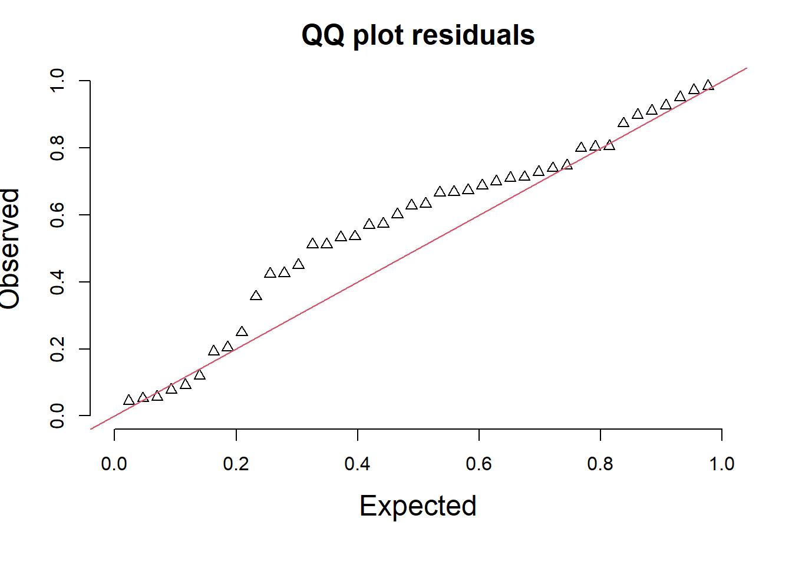
plotResiduals(simulationResiduals_D_nanus, quantreg = F, cex.lab = 1.5, cex.main = 1.5)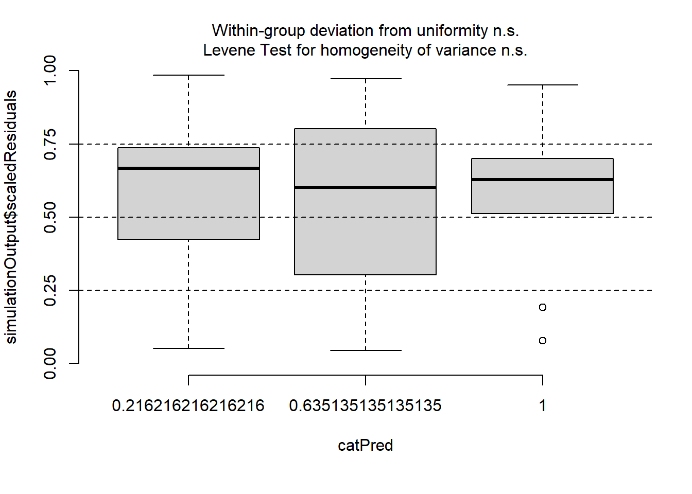
par(mar = c(12, 05, 1, 1))
boxplot(D_nanus ~ land_use, data = biomass, xaxt = "n",yaxt = "n", ylab = expression(paste("Biomass (g ", m^-2,")"))
, xlab = "", cex.lab = 2, cex.axis = 1.1, ygap.axis = 1, pch = 16)
axis(2, las = 2, cex.axis = 1.5)
axis(1, at = c(1,2,3), las = 2, labels = F, )
axis(1, at = c(0.8,2,3), labels = c("NATIVE", "PASTURE", "SUGARCANE"), las = 2, tick = F, cex.axis = 2)
axis(1, at = c(1.2), labels = c("HABITAT"), las = 2, tick = F, cex.axis = 2)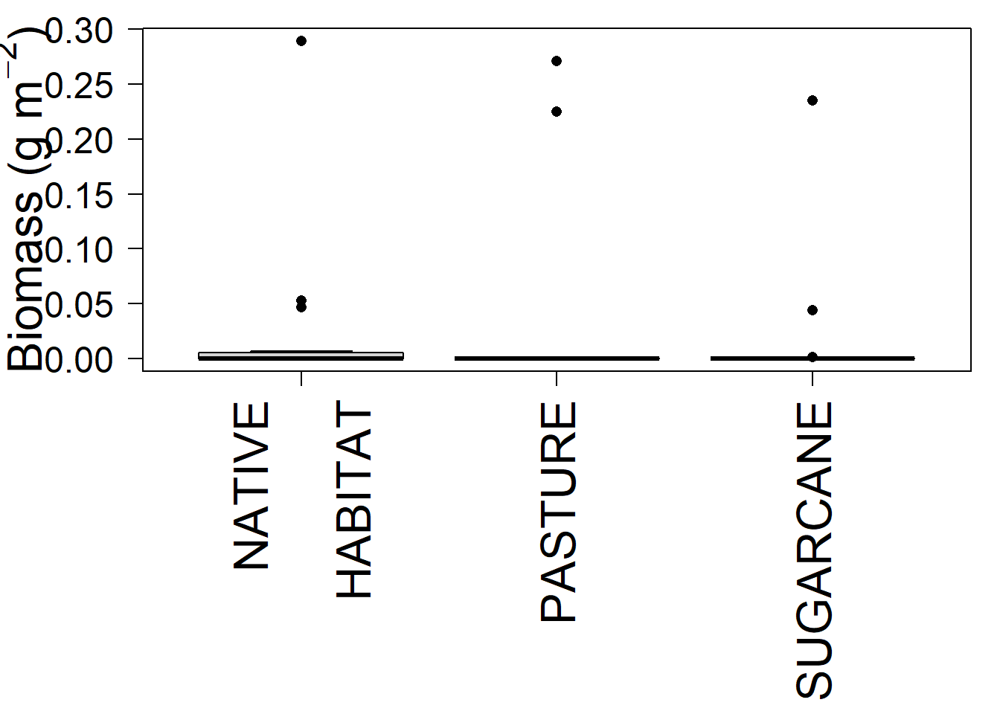
#text(x = c(1,2,3), y = c(0.4,0.45,0.8), labels = c("a", "a", "a"), cex = 1.5)Scinax
Scinax_no_effect <- glmmTMB(Scinax~ 1 + (1|ID), data=biomass, family=tweedie(link = "log"))
Scinax_land <- glmmTMB(Scinax~ land_use + (1|ID), data=biomass, family=tweedie(link = "log"))
Scinax_pastagem_cana_model <- glmmTMB(Scinax~ land_use_pastagem_cana + (1|ID), data=biomass, family=tweedie(link = "log"))
Scinax_pastagem_cerrado_model <- glmmTMB(Scinax~ land_use_pastagem_cerrado + (1|ID), data=biomass, family=tweedie(link = "log"))
Scinax_canavial_cerrado_model <- glmmTMB(Scinax~ land_use_canavial_cerrado + (1|ID), data=biomass, family=tweedie(link = "log"))Model Selection
AICTAB_Scinax <- AICctab(Scinax_no_effect, Scinax_land, Scinax_pastagem_cana_model,Scinax_pastagem_cerrado_model,Scinax_canavial_cerrado_model,weights = T, base = T, logLik = T, sort = F,
mnames = c("No Effect", "Savanna # Pasture # Sugarcane", "Savanna # Pasture = Sugarcane", "Savanna = Pasture # Sugarcane", "Savanna = Sugarcane # Pasture" ))
AICTAB_Scinax logLik AICc dLogLik dAICc df weight
No Effect -91.1 191.4 0.0 0.0 4 0.496
Savanna # Pasture # Sugarcane -90.9 196.2 0.3 4.8 6 0.045
Savanna # Pasture = Sugarcane -91.1 193.9 0.0 2.5 5 0.139
Savanna = Pasture # Sugarcane -91.1 193.8 0.1 2.5 5 0.146
Savanna = Sugarcane # Pasture -90.9 193.5 0.2 2.1 5 0.175 simulationResiduals_Scinax <- simulateResiduals(fittedModel = Scinax_land, plot = F, seed = 3, n = 1000)
par(mar = c(6, 4, 3, 2))
plotQQunif(simulationResiduals_Scinax, testUniformity = F, testOutliers = F, testDispersion = F, cex.lab = 1.5, cex.main = 1.5) 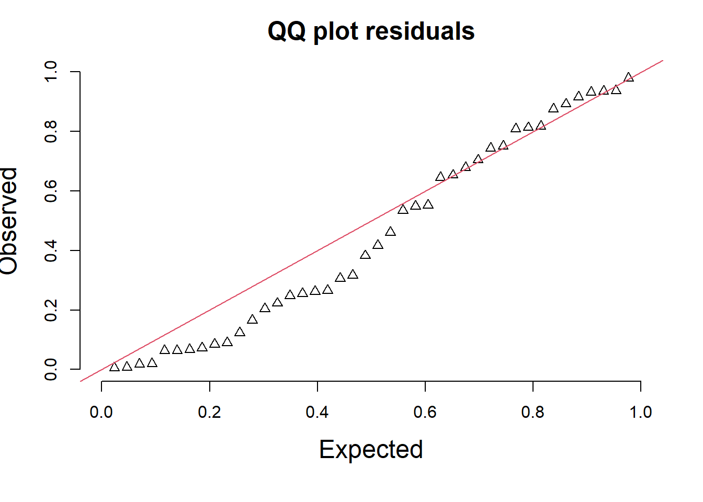
plotResiduals(simulationResiduals_Scinax, quantreg = F, cex.lab = 1.5, cex.main = 1.5)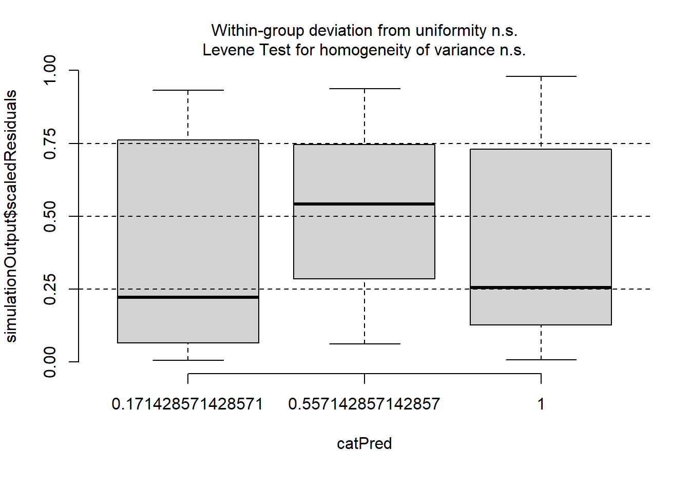
par(mar = c(12, 05, 1, 1))
boxplot(Scinax ~ land_use, data = biomass, xaxt = "n",yaxt = "n", ylab = expression(paste("Biomass (g ", m^-2,")"))
, xlab = "", cex.lab = 2, cex.axis = 1.1, ygap.axis = 1, pch = 16)
axis(2, las = 2, cex.axis = 1.5)
axis(1, at = c(1,2,3), las = 2, labels = F, )
axis(1, at = c(0.8,2,3), labels = c("NATIVE", "PASTURE", "SUGARCANE"), las = 2, tick = F, cex.axis = 2)
axis(1, at = c(1.2), labels = c("HABITAT"), las = 2, tick = F, cex.axis = 2)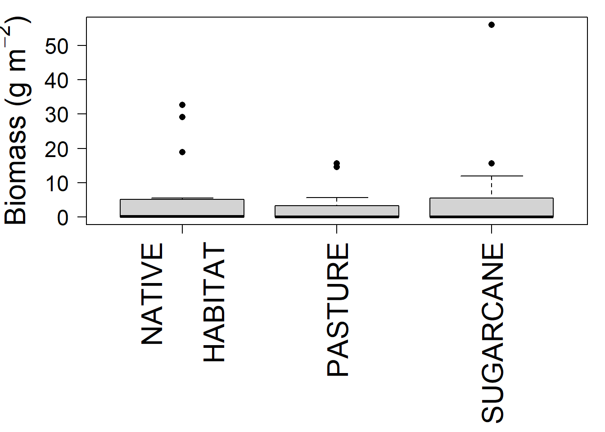
#text(x = c(1,2,3), y = c(0.4,0.45,0.8), labels = c("a", "a", "a"), cex = 1.5)L. fuscus
L_fuscus_no_effect <- glmmTMB(L_fuscus~ 1 + (1|ID), data=biomass, family=tweedie(link = "log"))
L_fuscus_land <- glmmTMB(L_fuscus~ land_use + (1|ID), data=biomass, family=tweedie(link = "log"))
L_fuscus_pastagem_cana_model <- glmmTMB(L_fuscus~ land_use_pastagem_cana + (1|ID), data=biomass, family=tweedie(link = "log"))
L_fuscus_pastagem_cerrado_model <- glmmTMB(L_fuscus~ land_use_pastagem_cerrado + (1|ID), data=biomass, family=tweedie(link = "log"))
L_fuscus_canavial_cerrado_model <- glmmTMB(L_fuscus~ land_use_canavial_cerrado + (1|ID), data=biomass, family=tweedie(link = "log"))Model Selection
AICTAB_L_fuscus <- AICctab(L_fuscus_no_effect, L_fuscus_land, L_fuscus_pastagem_cana_model,L_fuscus_pastagem_cerrado_model,L_fuscus_canavial_cerrado_model,weights = T, base = T, logLik = T, sort = F,
mnames = c("No Effect", "Savanna # Pasture # Sugarcane", "Savanna # Pasture = Sugarcane", "Savanna = Pasture # Sugarcane", "Savanna = Sugarcane # Pasture" ))
AICTAB_L_fuscus logLik AICc dLogLik dAICc df weight
No Effect -64.8 138.7 0.0 2.6 4 0.14
Savanna # Pasture # Sugarcane -62.2 138.9 2.6 2.7 6 0.13
Savanna # Pasture = Sugarcane -63.8 139.3 1.0 3.1 5 0.11
Savanna = Pasture # Sugarcane -62.2 136.2 2.6 0.0 5 0.53
Savanna = Sugarcane # Pasture -64.1 139.9 0.7 3.8 5 0.08 simulationResiduals_L_fuscus <- simulateResiduals(fittedModel = L_fuscus_land, plot = F, seed = 3, n = 1000)
par(mar = c(6, 4, 3, 2))
plotQQunif(simulationResiduals_L_fuscus, testUniformity = F, testOutliers = F, testDispersion = F, cex.lab = 1.5, cex.main = 1.5) 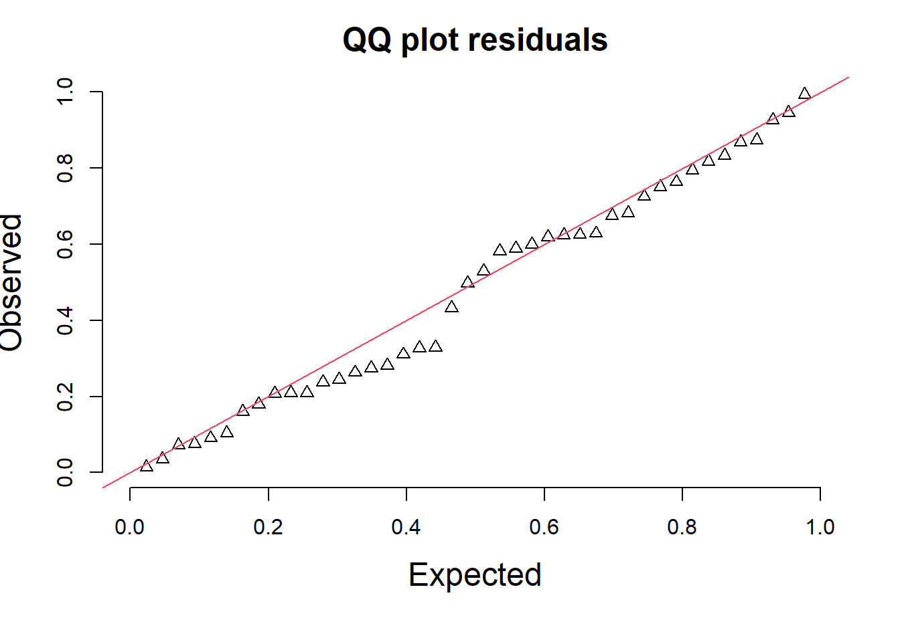
plotResiduals(simulationResiduals_L_fuscus, quantreg = F, cex.lab = 1.5, cex.main = 1.5)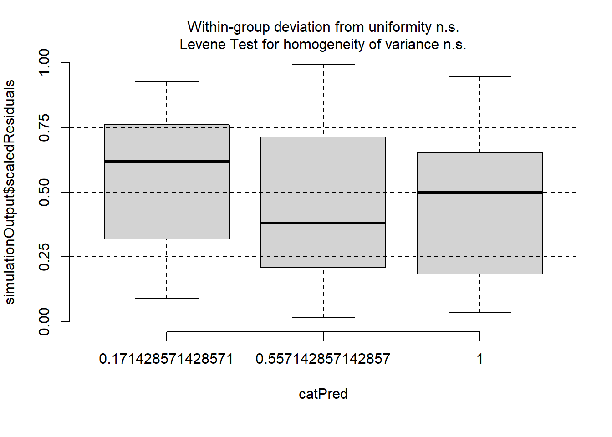
par(mar = c(12, 05, 1, 1))
boxplot(L_fuscus ~ land_use, data = biomass, xaxt = "n",yaxt = "n", ylab = expression(paste("Biomass (g ", m^-2,")"))
, xlab = "", cex.lab = 2, cex.axis = 1.1, ygap.axis = 1, pch = 16)
axis(2, las = 2, cex.axis = 1.5)
axis(1, at = c(1,2,3), las = 2, labels = F, )
axis(1, at = c(0.8,2,3), labels = c("NATIVE", "PASTURE", "SUGARCANE"), las = 2, tick = F, cex.axis = 2)
axis(1, at = c(1.2), labels = c("HABITAT"), las = 2, tick = F, cex.axis = 2)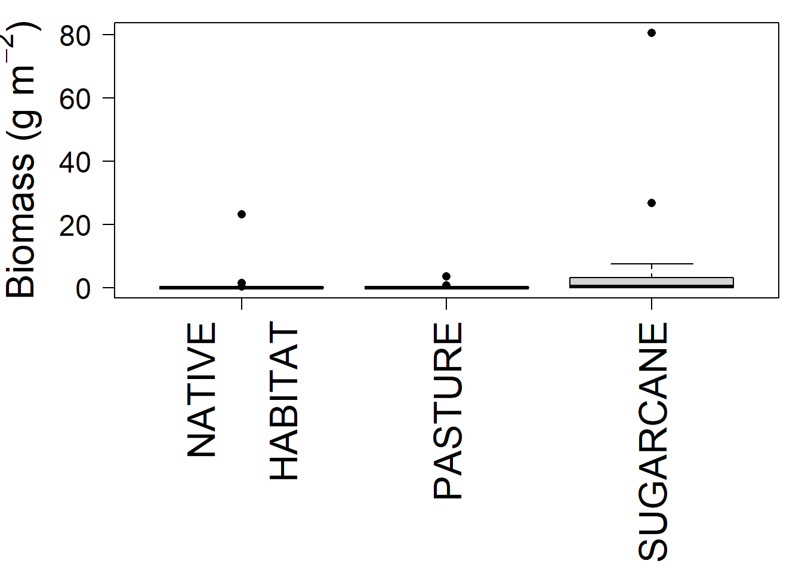
#text(x = c(1,2,3), y = c(0.4,0.45,0.8), labels = c("a", "a", "a"), cex = 1.5)P. cuvieri
P_cuvieri_no_effect <- glmmTMB(P_cuvieri~ 1 + (1|ID), data=biomass, family=tweedie(link = "log"))
P_cuvieri_land <- glmmTMB(P_cuvieri~ land_use + (1|ID), data=biomass, family=tweedie(link = "log"))
P_cuvieri_pastagem_cana_model <- glmmTMB(P_cuvieri~ land_use_pastagem_cana + (1|ID), data=biomass, family=tweedie(link = "log"))
P_cuvieri_pastagem_cerrado_model <- glmmTMB(P_cuvieri~ land_use_pastagem_cerrado + (1|ID), data=biomass, family=tweedie(link = "log"))
P_cuvieri_canavial_cerrado_model <- glmmTMB(P_cuvieri~ land_use_canavial_cerrado + (1|ID), data=biomass, family=tweedie(link = "log"))Model Selection
AICTAB_P_cuvieri <- AICctab(P_cuvieri_no_effect, P_cuvieri_land, P_cuvieri_pastagem_cana_model,P_cuvieri_pastagem_cerrado_model,P_cuvieri_canavial_cerrado_model,weights = T, base = T, logLik = T, sort = F,
mnames = c("No Effect", "Savanna # Pasture # Sugarcane", "Savanna # Pasture = Sugarcane", "Savanna = Pasture # Sugarcane", "Savanna = Sugarcane # Pasture" ))
AICTAB_P_cuvieri logLik AICc dLogLik dAICc df weight
No Effect -44.1 97.2 0.0 0.0 4 0.490
Savanna # Pasture # Sugarcane -43.8 102.0 0.3 4.8 6 0.044
Savanna # Pasture = Sugarcane -43.8 99.3 0.2 2.1 5 0.171
Savanna = Pasture # Sugarcane -43.9 99.5 0.2 2.3 5 0.158
Savanna = Sugarcane # Pasture -44.0 99.8 0.0 2.6 5 0.136 simulationResiduals_P_cuvieri <- simulateResiduals(fittedModel = P_cuvieri_land, plot = F, seed = 3, n = 1000)
par(mar = c(6, 4, 3, 2))
plotQQunif(simulationResiduals_P_cuvieri, testUniformity = F, testOutliers = F, testDispersion = F, cex.lab = 1.5, cex.main = 1.5) plotResiduals(simulationResiduals_P_cuvieri, quantreg = F, cex.lab = 1.5, cex.main = 1.5)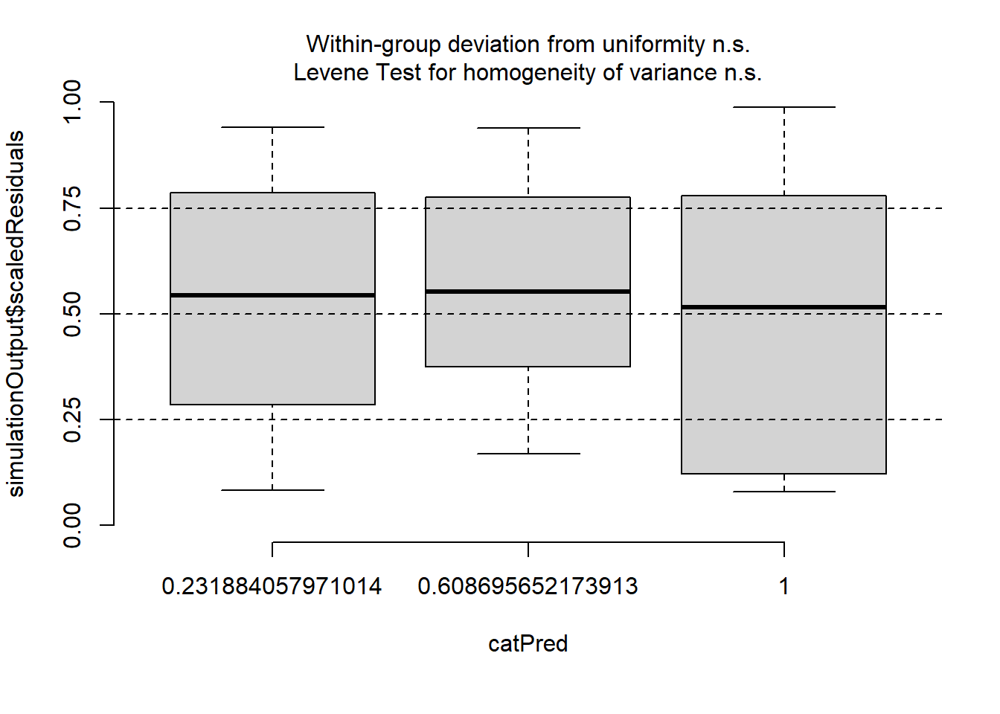
par(mar = c(12, 05, 1, 1))
boxplot(P_cuvieri ~ land_use, data = biomass, xaxt = "n",yaxt = "n", ylab = expression(paste("Biomass (g ", m^-2,")"))
, xlab = "", cex.lab = 2, cex.axis = 1.1, ygap.axis = 1, pch = 16)
axis(2, las = 2, cex.axis = 1.5)
axis(1, at = c(1,2,3), las = 2, labels = F, )
axis(1, at = c(0.8,2,3), labels = c("NATIVE", "PASTURE", "SUGARCANE"), las = 2, tick = F, cex.axis = 2)
axis(1, at = c(1.2), labels = c("HABITAT"), las = 2, tick = F, cex.axis = 2)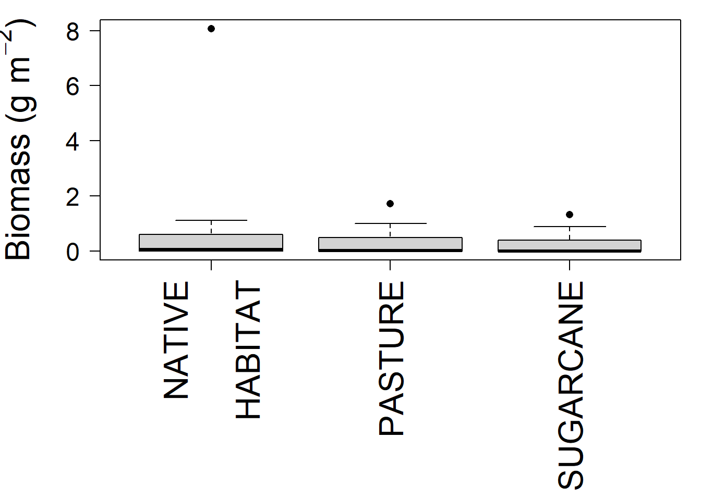
#text(x = c(1,2,3), y = c(0.4,0.45,0.8), labels = c("a", "a", "a"), cex = 1.5)P. nattereri
P_nattereri_no_effect <- glmmTMB(P_nattereri~ 1 + (1|ID), data=biomass, family=tweedie(link = "log"))
P_nattereri_land <- glmmTMB(P_nattereri~ land_use + (1|ID), data=biomass, family=tweedie(link = "log"))Warning in finalizeTMB(TMBStruc, obj, fit, h, data.tmb.old): Model convergence
problem; singular convergence (7). See vignette('troubleshooting'),
help('diagnose')P_nattereri_pastagem_cana_model <- glmmTMB(P_nattereri~ land_use_pastagem_cana + (1|ID), data=biomass, family=tweedie(link = "log"))
P_nattereri_pastagem_cerrado_model <- glmmTMB(P_nattereri~ land_use_pastagem_cerrado + (1|ID), data=biomass, family=tweedie(link = "log"))
P_nattereri_canavial_cerrado_model <- glmmTMB(P_nattereri~ land_use_canavial_cerrado + (1|ID), data=biomass, family=tweedie(link = "log"))Model Selection
AICTAB_P_nattereri <- AICctab(P_nattereri_no_effect, P_nattereri_land, P_nattereri_pastagem_cana_model,P_nattereri_pastagem_cerrado_model,P_nattereri_canavial_cerrado_model,weights = T, base = T, logLik = T, sort = F,
mnames = c("No Effect", "Savanna # Pasture # Sugarcane", "Savanna # Pasture = Sugarcane", "Savanna = Pasture # Sugarcane", "Savanna = Sugarcane # Pasture" ))
AICTAB_P_nattereri logLik AICc dLogLik dAICc df weight
No Effect -60.7 130.5 0.0 9.5 4 0.0063
Savanna # Pasture # Sugarcane -54.4 123.2 6.3 2.2 6 0.2412
Savanna # Pasture = Sugarcane -54.7 121.0 6.1 0.0 5 0.7399
Savanna = Pasture # Sugarcane -58.9 129.5 1.8 8.5 5 0.0106
Savanna = Sugarcane # Pasture -60.6 132.8 0.1 11.8 5 0.0020simulationResiduals_P_nattereri <- simulateResiduals(fittedModel = P_nattereri_land, plot = F, seed = 3, n = 1000)
par(mar = c(6, 4, 3, 2))
plotQQunif(simulationResiduals_P_nattereri, testUniformity = F, testOutliers = F, testDispersion = F, cex.lab = 1.5, cex.main = 1.5) plotResiduals(simulationResiduals_P_nattereri, quantreg = F, cex.lab = 1.5, cex.main = 1.5)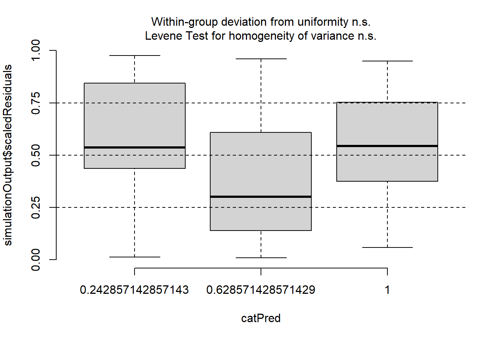
par(mar = c(12, 05, 1, 1))
boxplot(P_nattereri ~ land_use, data = biomass, xaxt = "n",yaxt = "n", ylab = expression(paste("Biomass (g ", m^-2,")"))
, xlab = "", cex.lab = 2, cex.axis = 1.1, ygap.axis = 1, pch = 16)
axis(2, las = 2, cex.axis = 1.5)
axis(1, at = c(1,2,3), las = 2, labels = F, )
axis(1, at = c(0.8,2,3), labels = c("NATIVE", "PASTURE", "SUGARCANE"), las = 2, tick = F, cex.axis = 2)
axis(1, at = c(1.2), labels = c("HABITAT"), las = 2, tick = F, cex.axis = 2)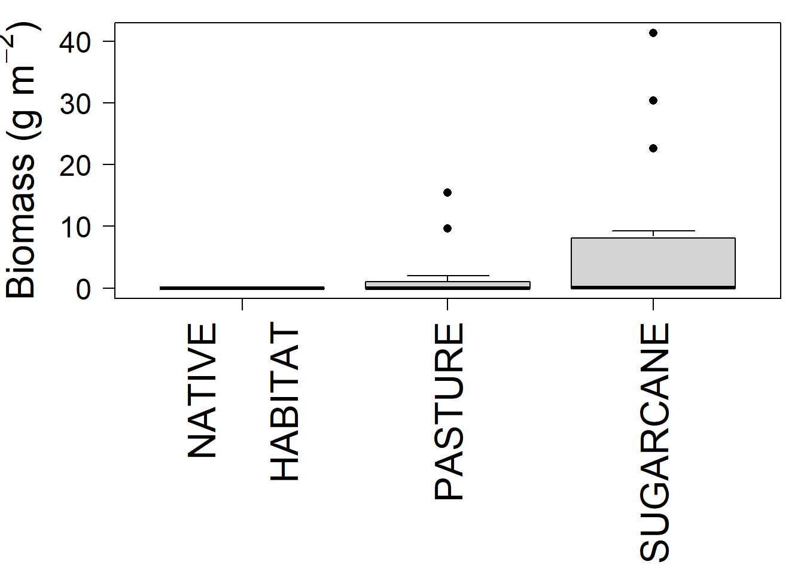
#text(x = c(1,2,3), y = c(0.4,0.45,0.8), labels = c("a", "a", "a"), cex = 1.5)D. minutus
D_minutus_no_effect <- glmmTMB(D_minutus~ 1 + (1|ID), data=biomass, family=tweedie(link = "log"))
D_minutus_land <- glmmTMB(D_minutus~ land_use + (1|ID), data=biomass, family=tweedie(link = "log"))
D_minutus_pastagem_cana_model <- glmmTMB(D_minutus~ land_use_pastagem_cana + (1|ID), data=biomass, family=tweedie(link = "log"))
D_minutus_pastagem_cerrado_model <- glmmTMB(D_minutus~ land_use_pastagem_cerrado + (1|ID), data=biomass, family=tweedie(link = "log"))
D_minutus_canavial_cerrado_model <- glmmTMB(D_minutus~ land_use_canavial_cerrado + (1|ID), data=biomass, family=tweedie(link = "log"))Model Selection
AICTAB_D_minutus <- AICctab(D_minutus_no_effect, D_minutus_land, D_minutus_pastagem_cana_model,D_minutus_pastagem_cerrado_model,D_minutus_canavial_cerrado_model,weights = T, base = T, logLik = T, sort = F,
mnames = c("No Effect", "Savanna # Pasture # Sugarcane", "Savanna # Pasture = Sugarcane", "Savanna = Pasture # Sugarcane", "Savanna = Sugarcane # Pasture" ))
AICTAB_D_minutus logLik AICc dLogLik dAICc df weight
No Effect -37.8 84.8 0.0 2.9 4 0.138
Savanna # Pasture # Sugarcane -35.0 84.4 2.9 2.5 6 0.169
Savanna # Pasture = Sugarcane -37.8 87.4 0.0 5.5 5 0.038
Savanna = Pasture # Sugarcane -37.4 86.5 0.4 4.7 5 0.057
Savanna = Sugarcane # Pasture -35.1 81.8 2.8 0.0 5 0.599 simulationResiduals_D_minutus <- simulateResiduals(fittedModel = D_minutus_land, plot = F, seed = 3, n = 1000)
par(mar = c(6, 4, 3, 2))
plotQQunif(simulationResiduals_D_minutus, testUniformity = F, testOutliers = F, testDispersion = F, cex.lab = 1.5, cex.main = 1.5) plotResiduals(simulationResiduals_D_minutus, quantreg = F, cex.lab = 1.5, cex.main = 1.5)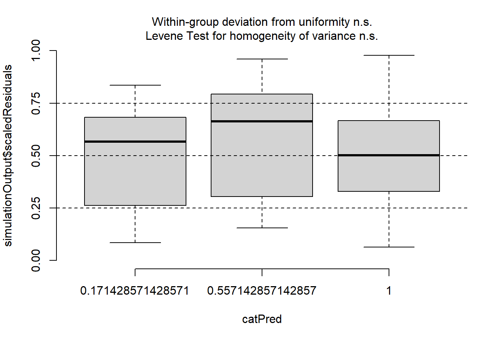
par(mar = c(12, 05, 1, 1))
boxplot(D_minutus ~ land_use, data = biomass, xaxt = "n",yaxt = "n", ylab = expression(paste("Biomass (g ", m^-2,")"))
, xlab = "", cex.lab = 2, cex.axis = 1.1, ygap.axis = 1, pch = 16)
axis(2, las = 2, cex.axis = 1.5)
axis(1, at = c(1,2,3), las = 2, labels = F, )
axis(1, at = c(0.8,2,3), labels = c("NATIVE", "PASTURE", "SUGARCANE"), las = 2, tick = F, cex.axis = 2)
axis(1, at = c(1.2), labels = c("HABITAT"), las = 2, tick = F, cex.axis = 2)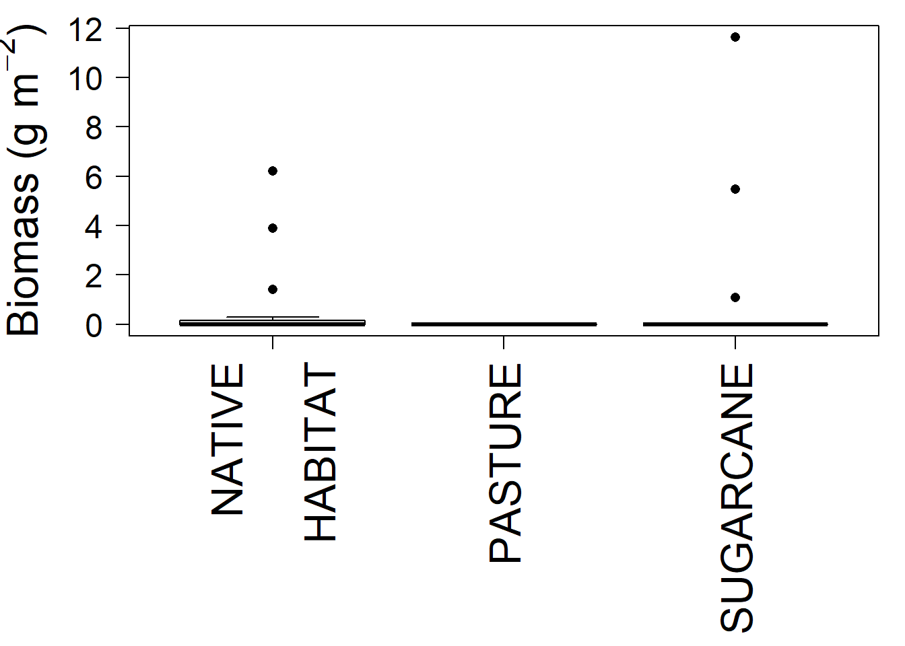
#text(x = c(1,2,3), y = c(0.4,0.45,0.8), labels = c("a", "a", "a"), cex = 1.5)/ / / /
Density
D. nanus
D_nanus_no_effect <- glmmTMB(D_nanus~ 1 + (1|ID), data=density, family=tweedie(link = "log"))
D_nanus_land <- glmmTMB(D_nanus~ land_use + (1|ID), data=density, family=tweedie(link = "log"))
D_nanus_pastagem_cana_model <- glmmTMB(D_nanus~ land_use_pastagem_cana + (1|ID), data=density, family=tweedie(link = "log"))
D_nanus_pastagem_cerrado_model <- glmmTMB(D_nanus~ land_use_pastagem_cerrado + (1|ID), data=density, family=tweedie(link = "log"))
D_nanus_canavial_cerrado_model <- glmmTMB(D_nanus~ land_use_canavial_cerrado + (1|ID), data=density, family=tweedie(link = "log"))Model Selection
AICTAB_D_nanus <- AICctab(D_nanus_no_effect, D_nanus_land, D_nanus_pastagem_cana_model,D_nanus_pastagem_cerrado_model,D_nanus_canavial_cerrado_model,weights = T, base = T, logLik = T, sort = F,
mnames = c("No Effect", "Savanna # Pasture # Sugarcane", "Savanna # Pasture = Sugarcane", "Savanna = Pasture # Sugarcane", "Savanna = Sugarcane # Pasture" ))
AICTAB_D_nanus logLik AICc dLogLik dAICc df weight
No Effect -41.6 92.3 0.0 0.0 4 0.461
Savanna # Pasture # Sugarcane -41.1 96.7 0.5 4.3 6 0.053
Savanna # Pasture = Sugarcane -41.6 94.9 0.0 2.6 5 0.127
Savanna = Pasture # Sugarcane -41.3 94.3 0.3 1.9 5 0.177
Savanna = Sugarcane # Pasture -41.3 94.2 0.4 1.8 5 0.183 simulationResiduals_D_nanus <- simulateResiduals(fittedModel = D_nanus_land, plot = F, seed = 3, n = 1000)
par(mar = c(6, 4, 3, 2))
plotQQunif(simulationResiduals_D_nanus, testUniformity = F, testOutliers = F, testDispersion = F, cex.lab = 1.5, cex.main = 1.5) 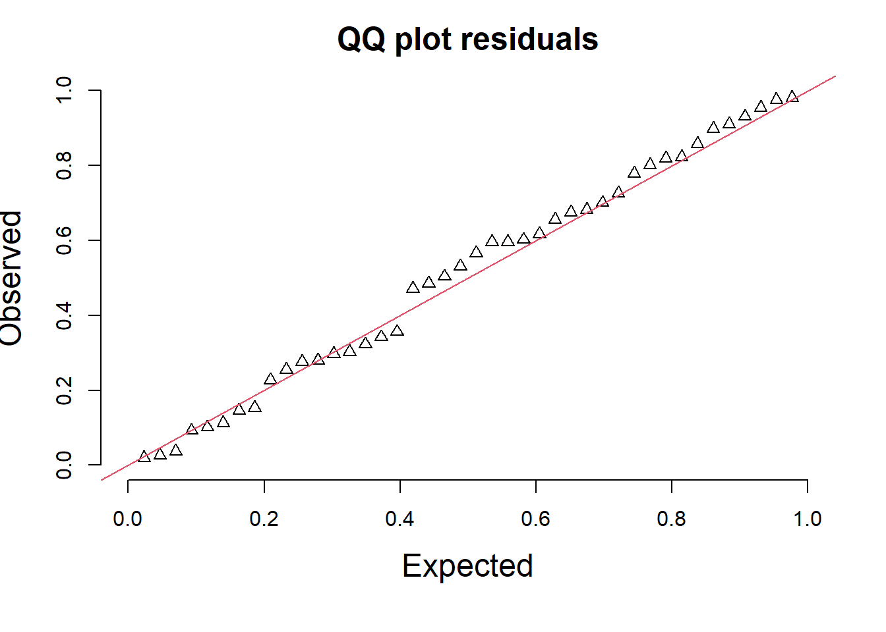
plotResiduals(simulationResiduals_D_nanus, quantreg = F, cex.lab = 1.5, cex.main = 1.5)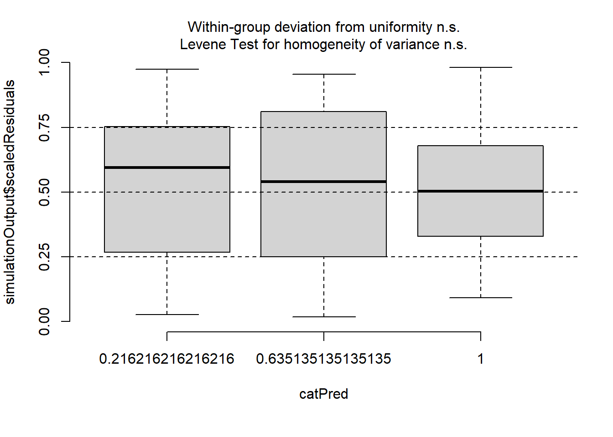
par(mar = c(12, 05, 1, 1))
boxplot(D_nanus ~ land_use, data = density, xaxt = "n",yaxt = "n", ylab = expression(paste("density (g ", m^-2,")"))
, xlab = "", cex.lab = 2, cex.axis = 1.1, ygap.axis = 1, pch = 16)
axis(2, las = 2, cex.axis = 1.5)
axis(1, at = c(1,2,3), las = 2, labels = F, )
axis(1, at = c(0.8,2,3), labels = c("NATIVE", "PASTURE", "SUGARCANE"), las = 2, tick = F, cex.axis = 2)
axis(1, at = c(1.2), labels = c("HABITAT"), las = 2, tick = F, cex.axis = 2)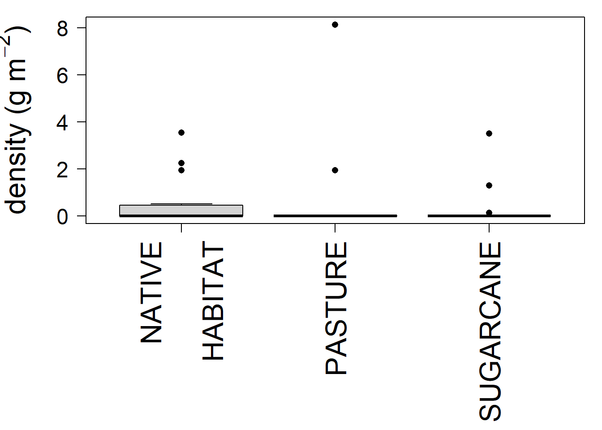
#text(x = c(1,2,3), y = c(0.4,0.45,0.8), labels = c("a", "a", "a"), cex = 1.5)Scinax
Scinax_no_effect <- glmmTMB(Scinax~ 1 + (1|ID), data=density, family=tweedie(link = "log"))
Scinax_land <- glmmTMB(Scinax~ land_use + (1|ID), data=density, family=tweedie(link = "log"))
Scinax_pastagem_cana_model <- glmmTMB(Scinax~ land_use_pastagem_cana + (1|ID), data=density, family=tweedie(link = "log"))
Scinax_pastagem_cerrado_model <- glmmTMB(Scinax~ land_use_pastagem_cerrado + (1|ID), data=density, family=tweedie(link = "log"))
Scinax_canavial_cerrado_model <- glmmTMB(Scinax~ land_use_canavial_cerrado + (1|ID), data=density, family=tweedie(link = "log"))Model Selection
AICTAB_Scinax <- AICctab(Scinax_no_effect, Scinax_land, Scinax_pastagem_cana_model,Scinax_pastagem_cerrado_model,Scinax_canavial_cerrado_model,weights = T, base = T, logLik = T, sort = F,
mnames = c("No Effect", "Savanna # Pasture # Sugarcane", "Savanna # Pasture = Sugarcane", "Savanna = Pasture # Sugarcane", "Savanna = Sugarcane # Pasture" ))
AICTAB_Scinax logLik AICc dLogLik dAICc df weight
No Effect -133.0 275.1 0.0 0.0 4 0.485
Savanna # Pasture # Sugarcane -132.7 279.8 0.3 4.7 6 0.046
Savanna # Pasture = Sugarcane -132.7 277.0 0.3 2.0 5 0.181
Savanna = Pasture # Sugarcane -132.9 277.5 0.1 2.4 5 0.145
Savanna = Sugarcane # Pasture -132.9 277.5 0.1 2.4 5 0.143 simulationResiduals_Scinax <- simulateResiduals(fittedModel = Scinax_land, plot = F, seed = 3, n = 1000)
par(mar = c(6, 4, 3, 2))
plotQQunif(simulationResiduals_Scinax, testUniformity = F, testOutliers = F, testDispersion = F, cex.lab = 1.5, cex.main = 1.5) plotResiduals(simulationResiduals_Scinax, quantreg = F, cex.lab = 1.5, cex.main = 1.5)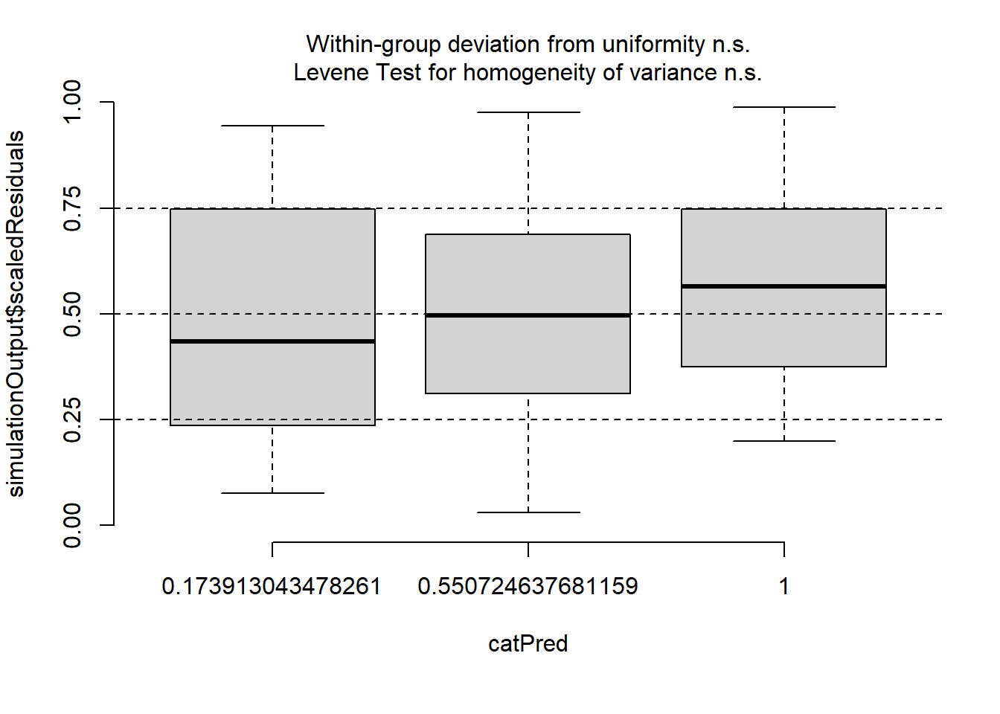
par(mar = c(12, 05, 1, 1))
boxplot(Scinax ~ land_use, data = density, xaxt = "n",yaxt = "n", ylab = expression(paste("density (g ", m^-2,")"))
, xlab = "", cex.lab = 2, cex.axis = 1.1, ygap.axis = 1, pch = 16)
axis(2, las = 2, cex.axis = 1.5)
axis(1, at = c(1,2,3), las = 2, labels = F, )
axis(1, at = c(0.8,2,3), labels = c("NATIVE", "PASTURE", "SUGARCANE"), las = 2, tick = F, cex.axis = 2)
axis(1, at = c(1.2), labels = c("HABITAT"), las = 2, tick = F, cex.axis = 2)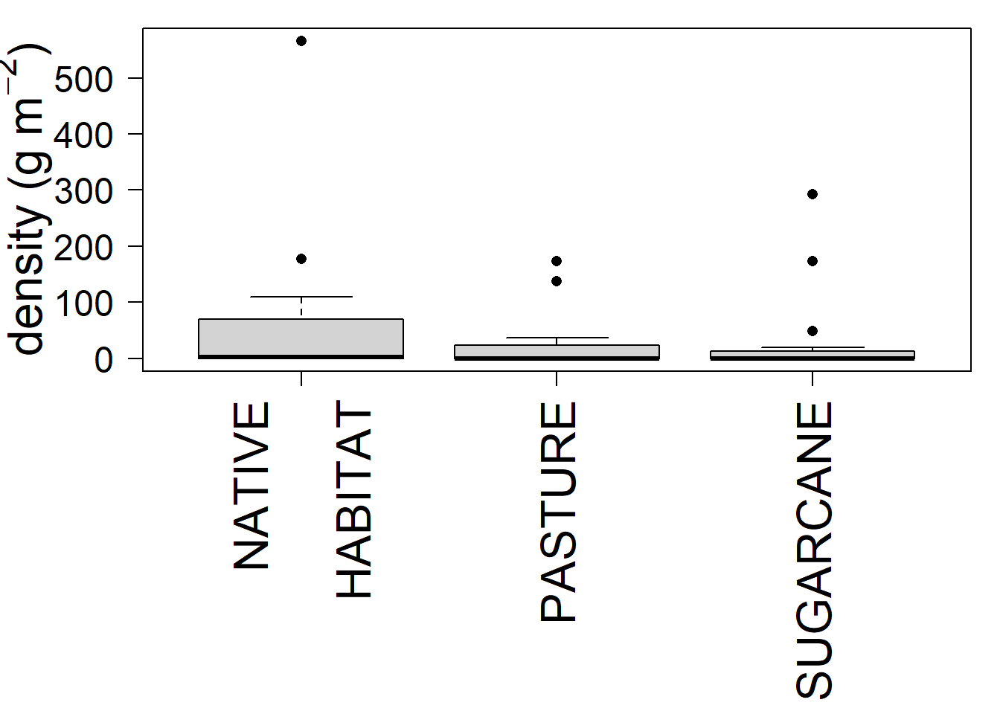
#text(x = c(1,2,3), y = c(0.4,0.45,0.8), labels = c("a", "a", "a"), cex = 1.5)L. fuscus
L_fuscus_no_effect <- glmmTMB(L_fuscus~ 1 + (1|ID), data=density, family=tweedie(link = "log"))
L_fuscus_land <- glmmTMB(L_fuscus~ land_use + (1|ID), data=density, family=tweedie(link = "log"))
L_fuscus_pastagem_cana_model <- glmmTMB(L_fuscus~ land_use_pastagem_cana + (1|ID), data=density, family=tweedie(link = "log"))
L_fuscus_pastagem_cerrado_model <- glmmTMB(L_fuscus~ land_use_pastagem_cerrado + (1|ID), data=density, family=tweedie(link = "log"))
L_fuscus_canavial_cerrado_model <- glmmTMB(L_fuscus~ land_use_canavial_cerrado + (1|ID), data=density, family=tweedie(link = "log"))Model Selection
AICTAB_L_fuscus <- AICctab(L_fuscus_no_effect, L_fuscus_land, L_fuscus_pastagem_cana_model,L_fuscus_pastagem_cerrado_model,L_fuscus_canavial_cerrado_model,weights = T, base = T, logLik = T, sort = F,
mnames = c("No Effect", "Savanna # Pasture # Sugarcane", "Savanna # Pasture = Sugarcane", "Savanna = Pasture # Sugarcane", "Savanna = Sugarcane # Pasture" ))
AICTAB_L_fuscus logLik AICc dLogLik dAICc df weight
No Effect -79.1 167.3 0.0 2.4 4 0.153
Savanna # Pasture # Sugarcane -76.6 167.6 2.5 2.6 6 0.137
Savanna # Pasture = Sugarcane -78.3 168.3 0.8 3.4 5 0.094
Savanna = Pasture # Sugarcane -76.6 164.9 2.5 0.0 5 0.510
Savanna = Sugarcane # Pasture -78.2 168.1 0.9 3.1 5 0.106 simulationResiduals_L_fuscus <- simulateResiduals(fittedModel = L_fuscus_land, plot = F, seed = 3, n = 1000)
par(mar = c(6, 4, 3, 2))
plotQQunif(simulationResiduals_L_fuscus, testUniformity = F, testOutliers = F, testDispersion = F, cex.lab = 1.5, cex.main = 1.5) 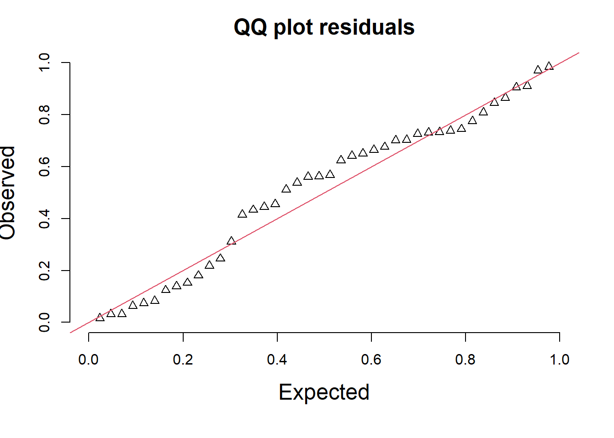
plotResiduals(simulationResiduals_L_fuscus, quantreg = F, cex.lab = 1.5, cex.main = 1.5)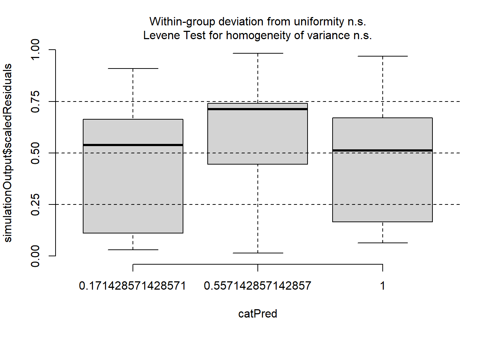
par(mar = c(12, 05, 1, 1))
boxplot(L_fuscus ~ land_use, data = density, xaxt = "n",yaxt = "n", ylab = expression(paste("density (g ", m^-2,")"))
, xlab = "", cex.lab = 2, cex.axis = 1.1, ygap.axis = 1, pch = 16)
axis(2, las = 2, cex.axis = 1.5)
axis(1, at = c(1,2,3), las = 2, labels = F, )
axis(1, at = c(0.8,2,3), labels = c("NATIVE", "PASTURE", "SUGARCANE"), las = 2, tick = F, cex.axis = 2)
axis(1, at = c(1.2), labels = c("HABITAT"), las = 2, tick = F, cex.axis = 2)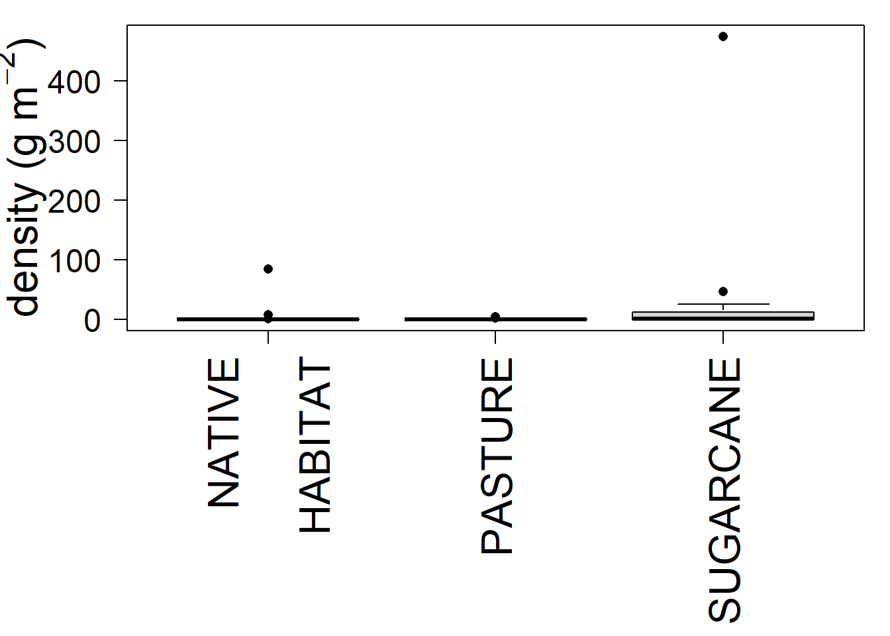
#text(x = c(1,2,3), y = c(0.4,0.45,0.8), labels = c("a", "a", "a"), cex = 1.5)P. cuvieri
P_cuvieri_no_effect <- glmmTMB(P_cuvieri~ 1 + (1|ID), data=density, family=tweedie(link = "log"))
P_cuvieri_land <- glmmTMB(P_cuvieri~ land_use + (1|ID), data=density, family=tweedie(link = "log"))
P_cuvieri_pastagem_cana_model <- glmmTMB(P_cuvieri~ land_use_pastagem_cana + (1|ID), data=density, family=tweedie(link = "log"))
P_cuvieri_pastagem_cerrado_model <- glmmTMB(P_cuvieri~ land_use_pastagem_cerrado + (1|ID), data=density, family=tweedie(link = "log"))
P_cuvieri_canavial_cerrado_model <- glmmTMB(P_cuvieri~ land_use_canavial_cerrado + (1|ID), data=density, family=tweedie(link = "log"))Model Selection
AICTAB_P_cuvieri <- AICctab(P_cuvieri_no_effect, P_cuvieri_land, P_cuvieri_pastagem_cana_model,P_cuvieri_pastagem_cerrado_model,P_cuvieri_canavial_cerrado_model,weights = T, base = T, logLik = T, sort = F,
mnames = c("No Effect", "Savanna # Pasture # Sugarcane", "Savanna # Pasture = Sugarcane", "Savanna = Pasture # Sugarcane", "Savanna = Sugarcane # Pasture" ))
AICTAB_P_cuvieri logLik AICc dLogLik dAICc df weight
No Effect -103.7 216.4 0.0 0.0 4 0.407
Savanna # Pasture # Sugarcane -102.9 220.1 0.8 3.7 6 0.063
Savanna # Pasture = Sugarcane -103.0 217.6 0.7 1.2 5 0.222
Savanna = Pasture # Sugarcane -103.1 217.9 0.6 1.5 5 0.195
Savanna = Sugarcane # Pasture -103.7 219.0 0.0 2.6 5 0.113 simulationResiduals_P_cuvieri <- simulateResiduals(fittedModel = P_cuvieri_land, plot = F, seed = 3, n = 1000)
par(mar = c(6, 4, 3, 2))
plotQQunif(simulationResiduals_P_cuvieri, testUniformity = F, testOutliers = F, testDispersion = F, cex.lab = 1.5, cex.main = 1.5) 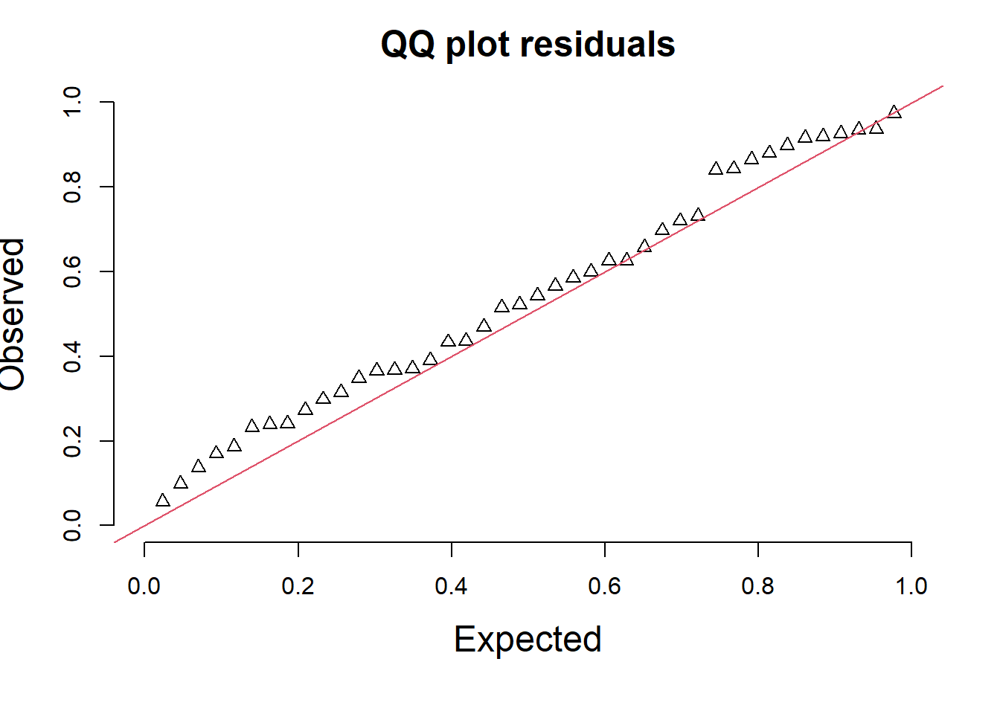
plotResiduals(simulationResiduals_P_cuvieri, quantreg = F, cex.lab = 1.5, cex.main = 1.5)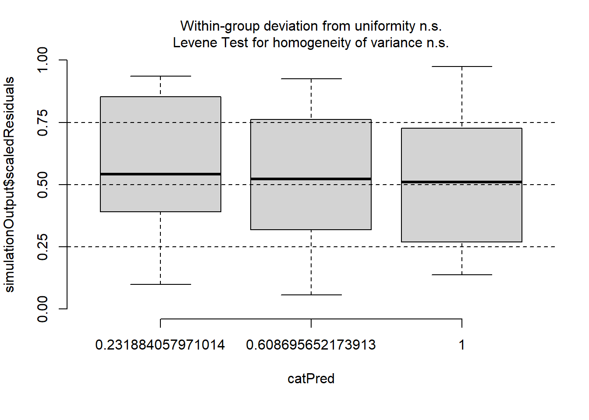
par(mar = c(12, 05, 1, 1))
boxplot(P_cuvieri ~ land_use, data = density, xaxt = "n",yaxt = "n", ylab = expression(paste("density (g ", m^-2,")"))
, xlab = "", cex.lab = 2, cex.axis = 1.1, ygap.axis = 1, pch = 16)
axis(2, las = 2, cex.axis = 1.5)
axis(1, at = c(1,2,3), las = 2, labels = F, )
axis(1, at = c(0.8,2,3), labels = c("NATIVE", "PASTURE", "SUGARCANE"), las = 2, tick = F, cex.axis = 2)
axis(1, at = c(1.2), labels = c("HABITAT"), las = 2, tick = F, cex.axis = 2)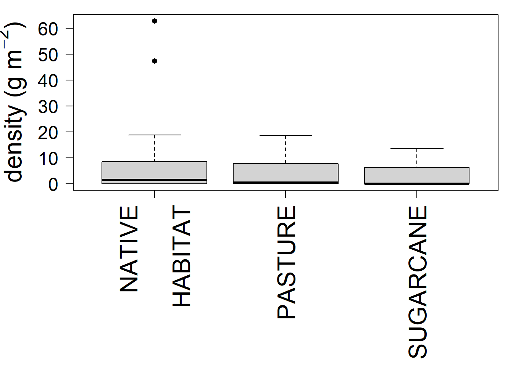
#text(x = c(1,2,3), y = c(0.4,0.45,0.8), labels = c("a", "a", "a"), cex = 1.5)P. nattereri
P_nattereri_no_effect <- glmmTMB(P_nattereri~ 1 + (1|ID), data=density, family=tweedie(link = "log"))
P_nattereri_land <- glmmTMB(P_nattereri~ land_use + (1|ID), data=density, family=tweedie(link = "log"))
P_nattereri_pastagem_cana_model <- glmmTMB(P_nattereri~ land_use_pastagem_cana + (1|ID), data=density, family=tweedie(link = "log"))
P_nattereri_pastagem_cerrado_model <- glmmTMB(P_nattereri~ land_use_pastagem_cerrado + (1|ID), data=density, family=tweedie(link = "log"))
P_nattereri_canavial_cerrado_model <- glmmTMB(P_nattereri~ land_use_canavial_cerrado + (1|ID), data=density, family=tweedie(link = "log"))Model Selection
AICTAB_P_nattereri <- AICctab(P_nattereri_no_effect, P_nattereri_land, P_nattereri_pastagem_cana_model,P_nattereri_pastagem_cerrado_model,P_nattereri_canavial_cerrado_model,weights = T, base = T, logLik = T, sort = F,
mnames = c("No Effect", "Savanna # Pasture # Sugarcane", "Savanna # Pasture = Sugarcane", "Savanna = Pasture # Sugarcane", "Savanna = Sugarcane # Pasture" ))
AICTAB_P_nattereri logLik AICc dLogLik dAICc df weight
No Effect -75.8 160.8 0.0 8.3 4 0.0092
Savanna # Pasture # Sugarcane -69.6 153.6 6.2 1.2 6 0.3263
Savanna # Pasture = Sugarcane -70.4 152.4 5.5 0.0 5 0.5957
Savanna = Pasture # Sugarcane -72.6 156.8 3.3 4.4 5 0.0663
Savanna = Sugarcane # Pasture -75.8 163.3 0.0 10.9 5 0.0025simulationResiduals_P_nattereri <- simulateResiduals(fittedModel = P_nattereri_land, plot = F, seed = 3, n = 1000)
par(mar = c(6, 4, 3, 2))
plotQQunif(simulationResiduals_P_nattereri, testUniformity = F, testOutliers = F, testDispersion = F, cex.lab = 1.5, cex.main = 1.5) plotResiduals(simulationResiduals_P_nattereri, quantreg = F, cex.lab = 1.5, cex.main = 1.5)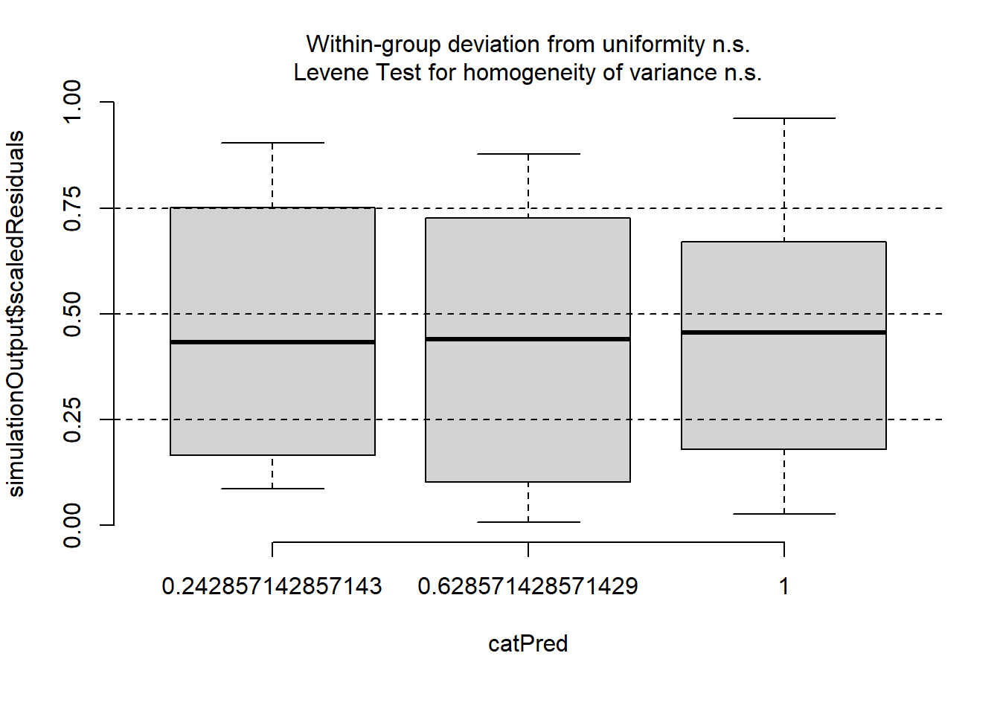
par(mar = c(12, 05, 1, 1))
boxplot(P_nattereri ~ land_use, data = density, xaxt = "n",yaxt = "n", ylab = expression(paste("density (g ", m^-2,")"))
, xlab = "", cex.lab = 2, cex.axis = 1.1, ygap.axis = 1, pch = 16)
axis(2, las = 2, cex.axis = 1.5)
axis(1, at = c(1,2,3), las = 2, labels = F, )
axis(1, at = c(0.8,2,3), labels = c("NATIVE", "PASTURE", "SUGARCANE"), las = 2, tick = F, cex.axis = 2)
axis(1, at = c(1.2), labels = c("HABITAT"), las = 2, tick = F, cex.axis = 2)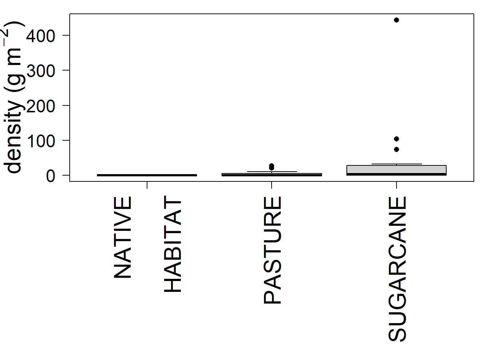
#text(x = c(1,2,3), y = c(0.4,0.45,0.8), labels = c("a", "a", "a"), cex = 1.5)D. minutus
D_minutus_no_effect <- glmmTMB(D_minutus~ 1 + (1|ID), data=density, family=tweedie(link = "log"))
D_minutus_land <- glmmTMB(D_minutus~ land_use + (1|ID), data=density, family=tweedie(link = "log"))Warning in finalizeTMB(TMBStruc, obj, fit, h, data.tmb.old): Model convergence
problem; singular convergence (7). See vignette('troubleshooting'),
help('diagnose')D_minutus_pastagem_cana_model <- glmmTMB(D_minutus~ land_use_pastagem_cana + (1|ID), data=density, family=tweedie(link = "log"))
D_minutus_pastagem_cerrado_model <- glmmTMB(D_minutus~ land_use_pastagem_cerrado + (1|ID), data=density, family=tweedie(link = "log"))
D_minutus_canavial_cerrado_model <- glmmTMB(D_minutus~ land_use_canavial_cerrado + (1|ID), data=density, family=tweedie(link = "log"))Warning in finalizeTMB(TMBStruc, obj, fit, h, data.tmb.old): Model convergence
problem; singular convergence (7). See vignette('troubleshooting'),
help('diagnose')Model Selection
AICTAB_D_minutus <- AICctab(D_minutus_no_effect, D_minutus_land, D_minutus_pastagem_cana_model,D_minutus_pastagem_cerrado_model,D_minutus_canavial_cerrado_model,weights = T, base = T, logLik = T, sort = F,
mnames = c("No Effect", "Savanna # Pasture # Sugarcane", "Savanna # Pasture = Sugarcane", "Savanna = Pasture # Sugarcane", "Savanna = Sugarcane # Pasture" ))
AICTAB_D_minutus logLik AICc dLogLik dAICc df weight
No Effect -54.4 117.9 0.0 1.8 4 0.208
Savanna # Pasture # Sugarcane -52.1 118.6 2.3 2.5 6 0.147
Savanna # Pasture = Sugarcane -54.1 119.9 0.3 3.7 5 0.079
Savanna = Pasture # Sugarcane -54.3 120.3 0.1 4.2 5 0.063
Savanna = Sugarcane # Pasture -52.2 116.1 2.2 0.0 5 0.504 simulationResiduals_D_minutus <- simulateResiduals(fittedModel = D_minutus_land, plot = F, seed = 3, n = 1000)
par(mar = c(6, 4, 3, 2))
plotQQunif(simulationResiduals_D_minutus, testUniformity = F, testOutliers = F, testDispersion = F, cex.lab = 1.5, cex.main = 1.5) 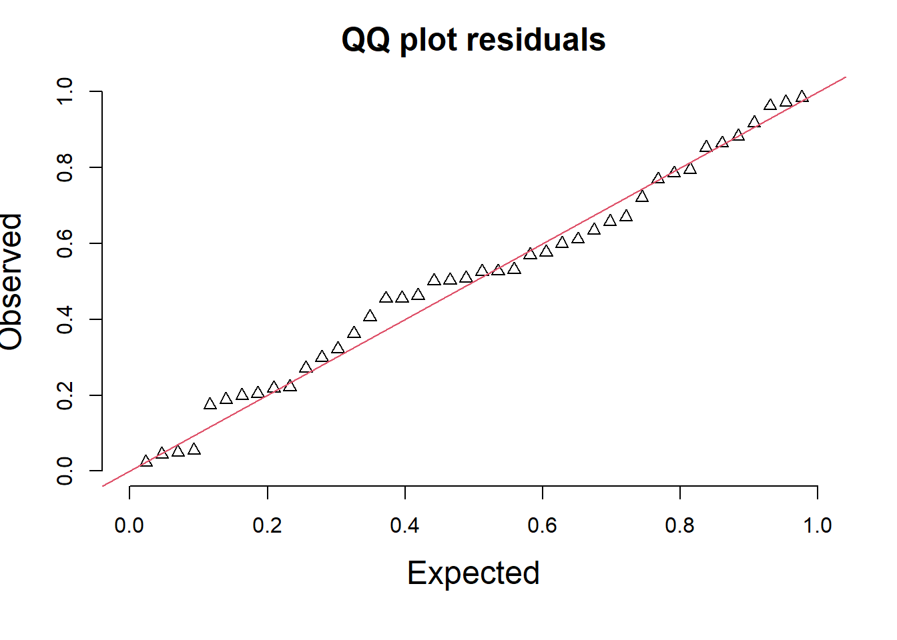
plotResiduals(simulationResiduals_D_minutus, quantreg = F, cex.lab = 1.5, cex.main = 1.5)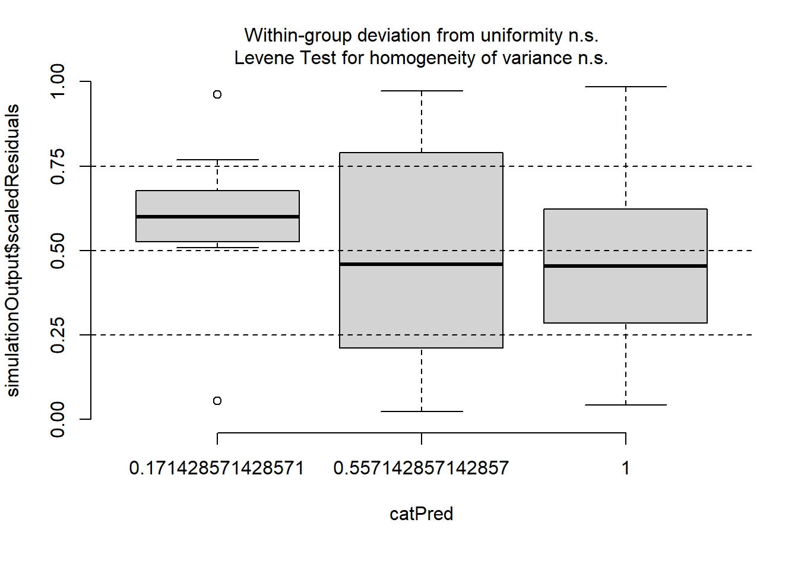
par(mar = c(12, 05, 1, 1))
boxplot(D_minutus ~ land_use, data = density, xaxt = "n",yaxt = "n", ylab = expression(paste("density (g ", m^-2,")"))
, xlab = "", cex.lab = 2, cex.axis = 1.1, ygap.axis = 1, pch = 16)
axis(2, las = 2, cex.axis = 1.5)
axis(1, at = c(1,2,3), las = 2, labels = F, )
axis(1, at = c(0.8,2,3), labels = c("NATIVE", "PASTURE", "SUGARCANE"), las = 2, tick = F, cex.axis = 2)
axis(1, at = c(1.2), labels = c("HABITAT"), las = 2, tick = F, cex.axis = 2)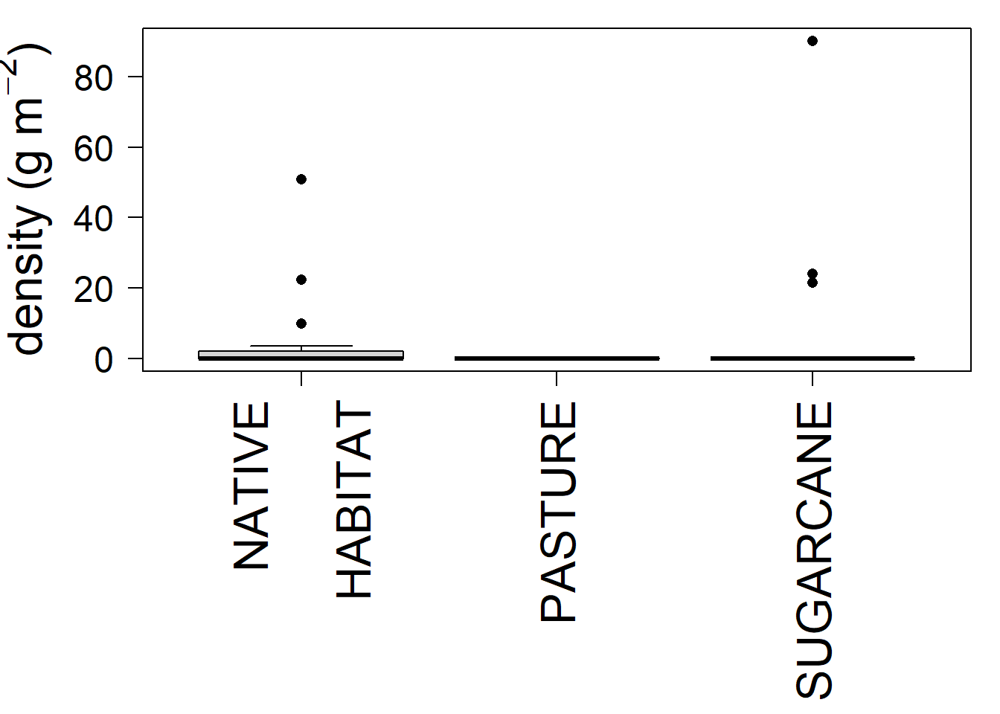
#text(x = c(1,2,3), y = c(0.4,0.45,0.8), labels = c("a", "a", "a"), cex = 1.5)/ / / /
Occurrence
D. nanus
land_use_pastagem_cana <- rep(NA, nrow(occurrence))
for(i in 1:nrow(occurrence)){
if(occurrence$land_use[i] == "pastagem" | occurrence$land_use[i] == "canavial"){
land_use_pastagem_cana[i] <- "pastagem-canavial"
}else{land_use_pastagem_cana[i] <- as.character(occurrence$land_use[i])}
}
land_use_pastagem_cana [1] "cerrado" "cerrado" "cerrado"
[4] "cerrado" "cerrado" "cerrado"
[7] "cerrado" "cerrado" "cerrado"
[10] "pastagem-canavial" "pastagem-canavial" "pastagem-canavial"
[13] "pastagem-canavial" "pastagem-canavial" "pastagem-canavial"
[16] "pastagem-canavial" "pastagem-canavial" "pastagem-canavial"
[19] "pastagem-canavial" "pastagem-canavial" "pastagem-canavial"
[22] "pastagem-canavial" "pastagem-canavial" "pastagem-canavial"
[25] "pastagem-canavial" "pastagem-canavial"land_use_pastagem_cerrado <- rep(NA, nrow(occurrence))
for(i in 1:nrow(occurrence)){
if(occurrence$land_use[i] == "pastagem" | occurrence$land_use[i] == "cerrado"){
land_use_pastagem_cerrado[i] <- "pastagem-cerrado"
}else{land_use_pastagem_cerrado[i] <- as.character(occurrence$land_use[i])}
}
land_use_pastagem_cerrado [1] "pastagem-cerrado" "pastagem-cerrado" "pastagem-cerrado" "pastagem-cerrado"
[5] "pastagem-cerrado" "pastagem-cerrado" "pastagem-cerrado" "pastagem-cerrado"
[9] "pastagem-cerrado" "pastagem-cerrado" "pastagem-cerrado" "pastagem-cerrado"
[13] "pastagem-cerrado" "pastagem-cerrado" "pastagem-cerrado" "canavial"
[17] "canavial" "canavial" "canavial" "canavial"
[21] "canavial" "canavial" "canavial" "canavial"
[25] "canavial" "canavial" land_use_canavial_cerrado <- rep(NA, nrow(occurrence))
for(i in 1:nrow(occurrence)){
if(occurrence$land_use[i] == "canavial" | occurrence$land_use[i] == "cerrado"){
land_use_canavial_cerrado[i] <- "canavial-cerrado"
}else{land_use_canavial_cerrado[i] <- as.character(occurrence$land_use[i])}
}
land_use_canavial_cerrado [1] "canavial-cerrado" "canavial-cerrado" "canavial-cerrado" "canavial-cerrado"
[5] "canavial-cerrado" "canavial-cerrado" "canavial-cerrado" "canavial-cerrado"
[9] "canavial-cerrado" "pastagem" "pastagem" "pastagem"
[13] "pastagem" "pastagem" "pastagem" "canavial-cerrado"
[17] "canavial-cerrado" "canavial-cerrado" "canavial-cerrado" "canavial-cerrado"
[21] "canavial-cerrado" "canavial-cerrado" "canavial-cerrado" "canavial-cerrado"
[25] "canavial-cerrado" "canavial-cerrado"occurrence <- data.frame(occurrence, land_use_pastagem_cana, land_use_pastagem_cerrado,land_use_canavial_cerrado)D_nanus_no_effect <- glmmTMB(D_nanus~ 1 + (1|ID), data=occurrence, family="binomial")
D_nanus_land <- glmmTMB(D_nanus~ land_use + (1|ID), data=occurrence, family="binomial")
D_nanus_pastagem_cana_model <- glmmTMB(D_nanus~ land_use_pastagem_cana + (1|ID), data=occurrence, family="binomial")
D_nanus_pastagem_cerrado_model <- glmmTMB(D_nanus~ land_use_pastagem_cerrado + (1|ID), data=occurrence, family="binomial")
D_nanus_canavial_cerrado_model <- glmmTMB(D_nanus~ land_use_canavial_cerrado + (1|ID), data=occurrence, family="binomial")Model Selection
AICTAB_D_nanus <- AICctab(D_nanus_no_effect, D_nanus_land, D_nanus_pastagem_cana_model,D_nanus_pastagem_cerrado_model,D_nanus_canavial_cerrado_model,weights = T, base = T, logLik = T, sort = F,
mnames = c("No Effect", "Savanna # Pasture # Sugarcane", "Savanna # Pasture = Sugarcane", "Savanna = Pasture # Sugarcane", "Savanna = Sugarcane # Pasture" ))
AICTAB_D_nanus logLik AICc dLogLik dAICc df weight
No Effect -17.7 39.9 0.0 0.0 2 0.383
Savanna # Pasture # Sugarcane -16.8 43.5 0.9 3.5 4 0.066
Savanna # Pasture = Sugarcane -17.2 41.5 0.5 1.6 3 0.174
Savanna = Pasture # Sugarcane -16.8 40.7 0.9 0.8 3 0.262
Savanna = Sugarcane # Pasture -17.6 42.3 0.1 2.4 3 0.116 simulationResiduals_D_nanus <- simulateResiduals(fittedModel = D_nanus_land, plot = F, seed = 3, n = 1000)
par(mar = c(6, 4, 3, 2))
plotQQunif(simulationResiduals_D_nanus, testUniformity = F, testOutliers = F, testDispersion = F, cex.lab = 1.5, cex.main = 1.5) plotResiduals(simulationResiduals_D_nanus, quantreg = F, cex.lab = 1.5, cex.main = 1.5)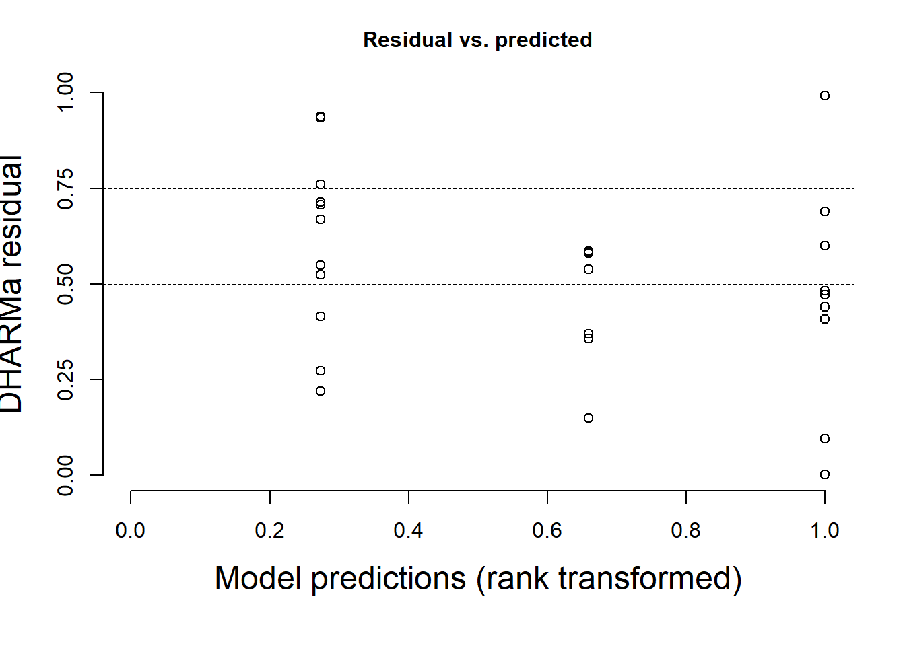
par(mar = c(9, 05, 1, 1))
barplot(freq$D_nanus, xaxt = "n", yaxt = "n", ylab = expression(paste("Frequency (%)"))
, xlab = "", cex.lab = 2, cex.axis = 1.1, ylim = c(0,110), xlim = c(0,4.2), width = 1, space = c(0.3,0.3,0.3), xaxs = "i") #space are fractions of width
axis(2, las = 2, cex.axis = 1.5)
axis(1, at = c(0.3+0.3, (0.3*2)+1+0.5 , (0.3*3)+2+0.5), labels = c("NATIVE", "PASTURE", "SUGARCANE"), las = 2, tick = F, cex.axis = 1.5)
axis(1, at = c(0.7+0.3), labels = c("HABITAT"), las = 2, tick = F, cex.axis = 1.5)
#text(x = c(0.45,1.5,2.475), y = c(105,105,105), labels = c("a", "a", "a"), cex = 1.5)
box()
Scinax
Scinax_no_effect <- glmmTMB(Scinax~ 1 + (1|ID), data=occurrence, family="binomial")
Scinax_land <- glmmTMB(Scinax~ land_use + (1|ID), data=occurrence, family="binomial")
Scinax_pastagem_cana_model <- glmmTMB(Scinax~ land_use_pastagem_cana + (1|ID), data=occurrence, family="binomial")
Scinax_pastagem_cerrado_model <- glmmTMB(Scinax~ land_use_pastagem_cerrado + (1|ID), data=occurrence, family="binomial")
Scinax_canavial_cerrado_model <- glmmTMB(Scinax~ land_use_canavial_cerrado + (1|ID), data=occurrence, family="binomial")Model Selection
AICTAB_Scinax <- AICctab(Scinax_no_effect, Scinax_land, Scinax_pastagem_cana_model,Scinax_pastagem_cerrado_model,Scinax_canavial_cerrado_model,weights = T, base = T, logLik = T, sort = F,
mnames = c("No Effect", "Savanna # Pasture # Sugarcane", "Savanna # Pasture = Sugarcane", "Savanna = Pasture # Sugarcane", "Savanna = Sugarcane # Pasture" ))
AICTAB_Scinax logLik AICc dLogLik dAICc df weight
No Effect -17.3 39.2 0.0 0.0 2 0.344
Savanna # Pasture # Sugarcane -16.2 42.2 1.2 3.1 4 0.074
Savanna # Pasture = Sugarcane -16.5 40.1 0.8 1.0 3 0.212
Savanna = Pasture # Sugarcane -16.3 39.6 1.0 0.5 3 0.271
Savanna = Sugarcane # Pasture -17.3 41.6 0.0 2.5 3 0.099 simulationResiduals_Scinax <- simulateResiduals(fittedModel = Scinax_land, plot = F, seed = 3, n = 1000)
par(mar = c(6, 4, 3, 2))
plotQQunif(simulationResiduals_Scinax, testUniformity = F, testOutliers = F, testDispersion = F, cex.lab = 1.5, cex.main = 1.5) plotResiduals(simulationResiduals_Scinax, quantreg = F, cex.lab = 1.5, cex.main = 1.5)par(mar = c(9, 05, 1, 1))
barplot(freq$Scinax, xaxt = "n", yaxt = "n", ylab = expression(paste("Frequency (%)"))
, xlab = "", cex.lab = 2, cex.axis = 1.1, ylim = c(0,110), xlim = c(0,4.2), width = 1, space = c(0.3,0.3,0.3), xaxs = "i") #space are fractions of width
axis(2, las = 2, cex.axis = 1.5)
axis(1, at = c(0.3+0.3, (0.3*2)+1+0.5 , (0.3*3)+2+0.5), labels = c("NATIVE", "PASTURE", "SUGARCANE"), las = 2, tick = F, cex.axis = 1.5)
axis(1, at = c(0.7+0.3), labels = c("HABITAT"), las = 2, tick = F, cex.axis = 1.5)
#text(x = c(0.45,1.5,2.475), y = c(105,105,105), labels = c("a", "a", "a"), cex = 1.5)
box()
L. fuscus
L_fuscus_no_effect <- glmmTMB(L_fuscus~ 1 + (1|ID), data=occurrence, family="binomial")
L_fuscus_land <- glmmTMB(L_fuscus~ land_use + (1|ID), data=occurrence, family="binomial")
L_fuscus_pastagem_cana_model <- glmmTMB(L_fuscus~ land_use_pastagem_cana + (1|ID), data=occurrence, family="binomial")
L_fuscus_pastagem_cerrado_model <- glmmTMB(L_fuscus~ land_use_pastagem_cerrado + (1|ID), data=occurrence, family="binomial")
L_fuscus_canavial_cerrado_model <- glmmTMB(L_fuscus~ land_use_canavial_cerrado + (1|ID), data=occurrence, family="binomial")Model Selection
AICTAB_L_fuscus <- AICctab(L_fuscus_no_effect, L_fuscus_land, L_fuscus_pastagem_cana_model,L_fuscus_pastagem_cerrado_model,L_fuscus_canavial_cerrado_model,weights = T, base = T, logLik = T, sort = F,
mnames = c("No Effect", "Savanna # Pasture # Sugarcane", "Savanna # Pasture = Sugarcane", "Savanna = Pasture # Sugarcane", "Savanna = Sugarcane # Pasture" ))
AICTAB_L_fuscus logLik AICc dLogLik dAICc df weight
No Effect -7.7 19.9 1.9 0.0 2 0.6155
Savanna # Pasture # Sugarcane -9.5 29.0 0.0 9.1 4 0.0065
Savanna # Pasture = Sugarcane -7.6 22.4 1.9 2.5 3 0.1774
Savanna = Pasture # Sugarcane -9.5 26.2 0.0 6.3 3 0.0265
Savanna = Sugarcane # Pasture -7.7 22.4 1.9 2.5 3 0.1742simulationResiduals_L_fuscus <- simulateResiduals(fittedModel = L_fuscus_land, plot = F, seed = 3, n = 1000)
par(mar = c(6, 4, 3, 2))
plotQQunif(simulationResiduals_L_fuscus, testUniformity = F, testOutliers = F, testDispersion = F, cex.lab = 1.5, cex.main = 1.5) 
plotResiduals(simulationResiduals_L_fuscus, quantreg = F, cex.lab = 1.5, cex.main = 1.5)
par(mar = c(9, 05, 1, 1))
barplot(freq$L_fuscus, xaxt = "n", yaxt = "n", ylab = expression(paste("Frequency (%)"))
, xlab = "", cex.lab = 2, cex.axis = 1.1, ylim = c(0,110), xlim = c(0,4.2), width = 1, space = c(0.3,0.3,0.3), xaxs = "i") #space are fractions of width
axis(2, las = 2, cex.axis = 1.5)
axis(1, at = c(0.3+0.3, (0.3*2)+1+0.5 , (0.3*3)+2+0.5), labels = c("NATIVE", "PASTURE", "SUGARCANE"), las = 2, tick = F, cex.axis = 1.5)
axis(1, at = c(0.7+0.3), labels = c("HABITAT"), las = 2, tick = F, cex.axis = 1.5)
#text(x = c(0.5+0.3,(0.3*2)+1+0.5,(0.3*3)+2+0.5), y = c(105,105,105), labels = c("a", "a", "b"), cex = 1.5)
box()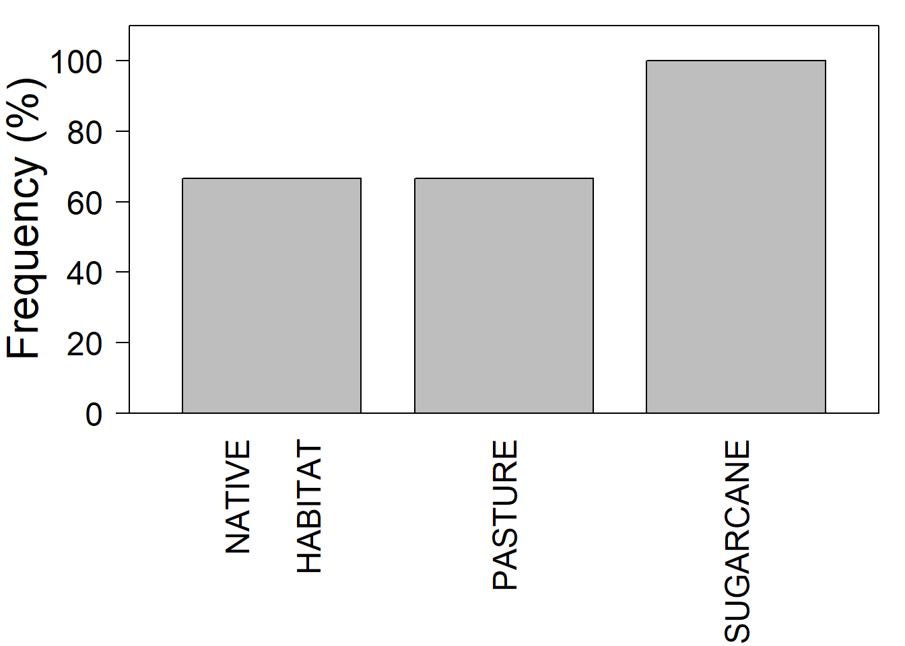
P. cuvieri
P_cuvieri_no_effect <- glmmTMB(P_cuvieri~ 1 + (1|ID), data=occurrence, family="binomial")
P_cuvieri_land <- glmmTMB(P_cuvieri~ land_use + (1|ID), data=occurrence, family="binomial")
P_cuvieri_pastagem_cana_model <- glmmTMB(P_cuvieri~ land_use_pastagem_cana + (1|ID), data=occurrence, family="binomial")
P_cuvieri_pastagem_cerrado_model <- glmmTMB(P_cuvieri~ land_use_pastagem_cerrado + (1|ID), data=occurrence, family="binomial")
P_cuvieri_canavial_cerrado_model <- glmmTMB(P_cuvieri~ land_use_canavial_cerrado + (1|ID), data=occurrence, family="binomial")Model Selection
AICTAB_P_cuvieri <- AICctab(P_cuvieri_no_effect, P_cuvieri_land, P_cuvieri_pastagem_cana_model,P_cuvieri_pastagem_cerrado_model,P_cuvieri_canavial_cerrado_model,weights = T, base = T, logLik = T, sort = F,
mnames = c("No Effect", "Savanna # Pasture # Sugarcane", "Savanna # Pasture = Sugarcane", "Savanna = Pasture # Sugarcane", "Savanna = Sugarcane # Pasture" ))
AICTAB_P_cuvieri logLik AICc dLogLik dAICc df weight
No Effect -15.1 34.8 0.0 0.8 2 0.254
Savanna # Pasture # Sugarcane -13.4 36.7 1.7 2.7 4 0.097
Savanna # Pasture = Sugarcane -14.2 35.4 1.0 1.4 3 0.185
Savanna = Pasture # Sugarcane -13.5 34.0 1.7 0.0 3 0.376
Savanna = Sugarcane # Pasture -14.9 36.9 0.2 2.9 3 0.088 simulationResiduals_P_cuvieri <- simulateResiduals(fittedModel = P_cuvieri_land, plot = F, seed = 3, n = 1000)
par(mar = c(6, 4, 3, 2))
plotQQunif(simulationResiduals_P_cuvieri, testUniformity = F, testOutliers = F, testDispersion = F, cex.lab = 1.5, cex.main = 1.5) 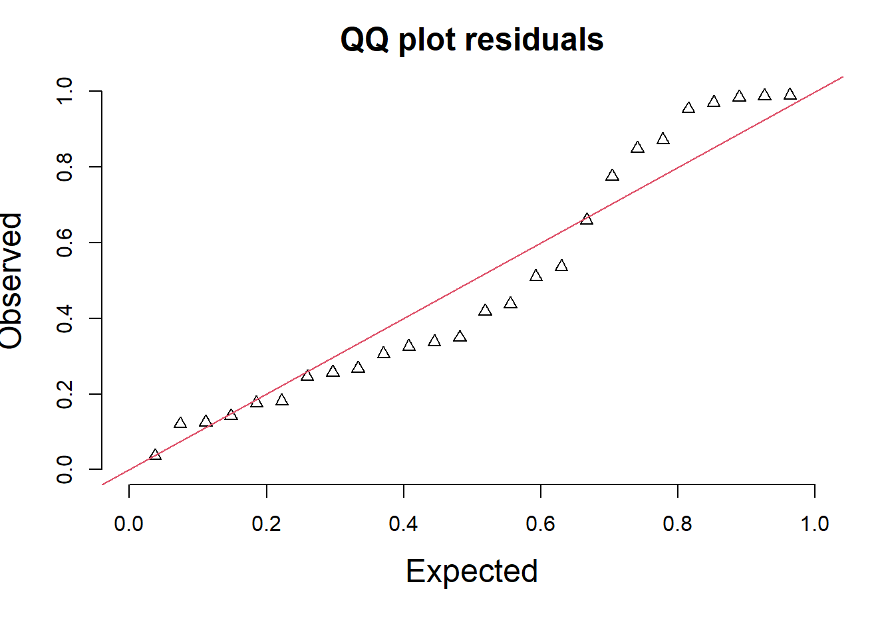
plotResiduals(simulationResiduals_P_cuvieri, quantreg = F, cex.lab = 1.5, cex.main = 1.5)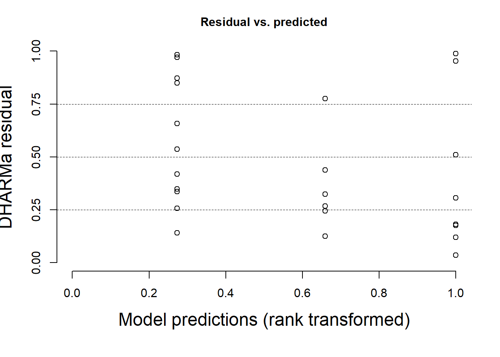
par(mar = c(12, 05, 1, 1))
barplot(freq$P_cuvieri, xaxt = "n", yaxt = "n", ylab = expression(paste("Frequency (%)"))
, xlab = "", cex.lab = 2, cex.axis = 1.1, ylim = c(0,110), xlim = c(0,4.2), width = 1, space = c(0.3,0.3,0.3), xaxs = "i") #space are fractions of width
axis(2, las = 2, cex.axis = 1.5)
axis(1, at = c(0.3+0.3, (0.3*2)+1+0.5 , (0.3*3)+2+0.5), labels = c("NATIVE", "PASTURE", "SUGARCANE"), las = 2, tick = F, cex.axis = 1.5)
axis(1, at = c(0.7+0.3), labels = c("HABITAT"), las = 2, tick = F, cex.axis = 1.5)
#text(x = c(0.45,1.5,2.475), y = c(105,105,105), labels = c("a", "a", "a"), cex = 1.5)
box()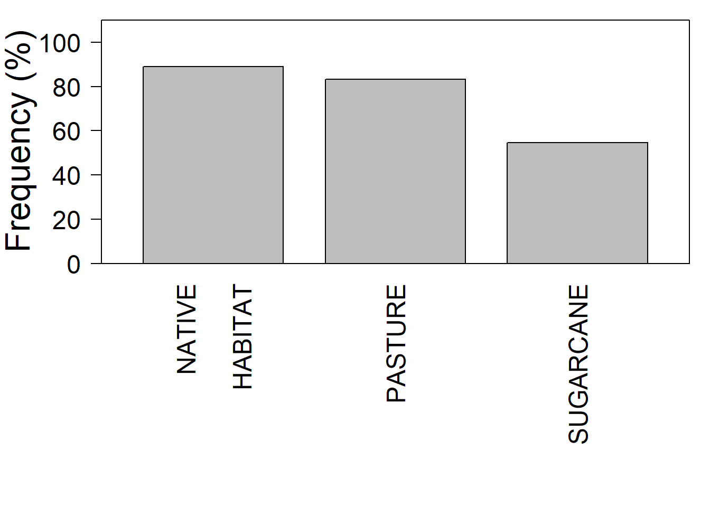
P. nattereri
P_nattereri_no_effect <- glmmTMB(P_nattereri~ 1 + (1|ID), data=occurrence, family="binomial")
P_nattereri_land <- glmmTMB(P_nattereri~ land_use + (1|ID), data=occurrence, family="binomial")
P_nattereri_pastagem_cana_model <- glmmTMB(P_nattereri~ land_use_pastagem_cana + (1|ID), data=occurrence, family="binomial")
P_nattereri_pastagem_cerrado_model <- glmmTMB(P_nattereri~ land_use_pastagem_cerrado + (1|ID), data=occurrence, family="binomial")
P_nattereri_canavial_cerrado_model <- glmmTMB(P_nattereri~ land_use_canavial_cerrado + (1|ID), data=occurrence, family="binomial")Model Selection
AICTAB_P_nattereri <- AICctab(P_nattereri_no_effect, P_nattereri_land, P_nattereri_pastagem_cana_model,P_nattereri_pastagem_cerrado_model,P_nattereri_canavial_cerrado_model,weights = T, base = T, logLik = T, sort = F,
mnames = c("No Effect", "Savanna # Pasture # Sugarcane", "Savanna # Pasture = Sugarcane", "Savanna = Pasture # Sugarcane", "Savanna = Sugarcane # Pasture" ))
AICTAB_P_nattereri logLik AICc dLogLik dAICc df weight
No Effect -17.9 40.4 0.0 0.8 2 0.25
Savanna # Pasture # Sugarcane -16.1 42.2 1.8 2.5 4 0.10
Savanna # Pasture = Sugarcane -16.3 39.7 1.7 0.0 3 0.36
Savanna = Pasture # Sugarcane -16.8 40.6 1.2 0.9 3 0.22
Savanna = Sugarcane # Pasture -17.9 42.9 0.0 3.3 3 0.07 simulationResiduals_P_nattereri <- simulateResiduals(fittedModel = P_nattereri_land, plot = F, seed = 3, n = 1000)
par(mar = c(6, 4, 3, 2))
plotQQunif(simulationResiduals_P_nattereri, testUniformity = F, testOutliers = F, testDispersion = F, cex.lab = 1.5, cex.main = 1.5) 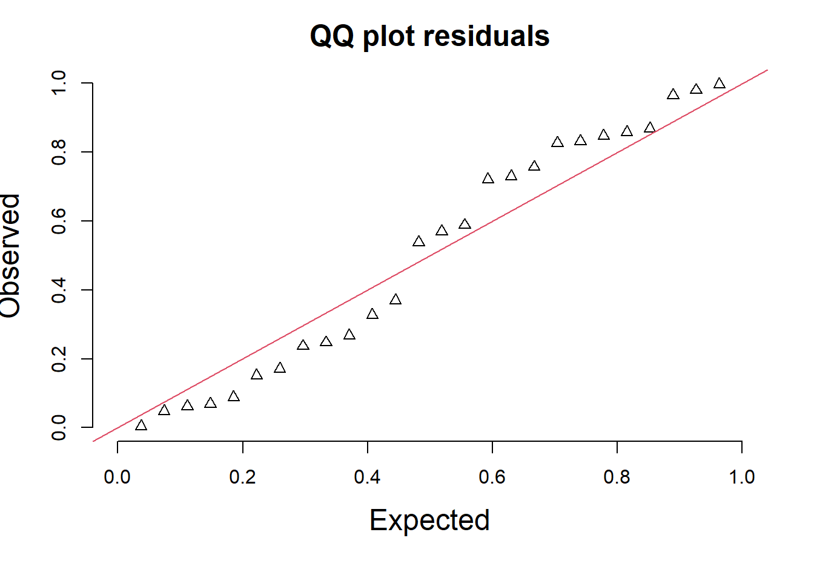
plotResiduals(simulationResiduals_P_nattereri, quantreg = F, cex.lab = 1.5, cex.main = 1.5)par(mar = c(12, 05, 1, 1))
par(mar = c(9, 05, 1, 1))
barplot(freq$P_nattereri, xaxt = "n", yaxt = "n", ylab = expression(paste("Frequency (%)"))
, xlab = "", cex.lab = 2, cex.axis = 1.1, ylim = c(0,110), xlim = c(0,4.2), width = 1, space = c(0.3,0.3,0.3), xaxs = "i") #space are fractions of width
axis(2, las = 2, cex.axis = 1.5)
axis(1, at = c(0.3+0.3, (0.3*2)+1+0.5 , (0.3*3)+2+0.5), labels = c("NATIVE", "PASTURE", "SUGARCANE"), las = 2, tick = F, cex.axis = 1.5)
axis(1, at = c(0.7+0.3), labels = c("HABITAT"), las = 2, tick = F, cex.axis = 1.5)
#text(x = c(0.45,1.5,2.475), y = c(105,105,105), labels = c("a", "a", "a"), cex = 1.5)
box()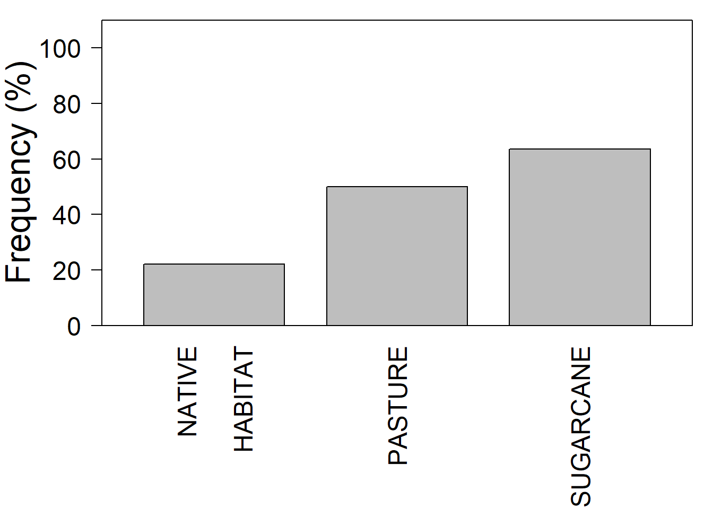
D. minutus
D_minutus_no_effect <- glmmTMB(D_minutus~ 1 + (1|ID), data=occurrence, family="binomial")
D_minutus_land <- glmmTMB(D_minutus~ land_use + (1|ID), data=occurrence, family="binomial")
D_minutus_pastagem_cana_model <- glmmTMB(D_minutus~ land_use_pastagem_cana + (1|ID), data=occurrence, family="binomial")
D_minutus_pastagem_cerrado_model <- glmmTMB(D_minutus~ land_use_pastagem_cerrado + (1|ID), data=occurrence, family="binomial")
D_minutus_canavial_cerrado_model <- glmmTMB(D_minutus~ land_use_canavial_cerrado + (1|ID), data=occurrence, family="binomial")Model Selection
AICTAB_D_minutus <- AICctab(D_minutus_no_effect, D_minutus_land, D_minutus_pastagem_cana_model,D_minutus_pastagem_cerrado_model,D_minutus_canavial_cerrado_model,weights = T, base = T, logLik = T, sort = F,
mnames = c("No Effect", "Savanna # Pasture # Sugarcane", "Savanna # Pasture = Sugarcane", "Savanna = Pasture # Sugarcane", "Savanna = Sugarcane # Pasture" ))
AICTAB_D_minutus logLik AICc dLogLik dAICc df weight
No Effect -17.9 40.4 0.0 0.0 2 0.46
Savanna # Pasture # Sugarcane -17.5 44.8 0.5 4.4 4 0.05
Savanna # Pasture = Sugarcane -17.5 42.1 0.5 1.6 3 0.20
Savanna = Pasture # Sugarcane -17.7 42.4 0.3 2.0 3 0.17
Savanna = Sugarcane # Pasture -17.9 42.9 0.0 2.5 3 0.13 simulationResiduals_D_minutus <- simulateResiduals(fittedModel = D_minutus_land, plot = F, seed = 3, n = 1000)
par(mar = c(6, 4, 3, 2))
plotQQunif(simulationResiduals_D_minutus, testUniformity = F, testOutliers = F, testDispersion = F, cex.lab = 1.5, cex.main = 1.5) plotResiduals(simulationResiduals_D_minutus, quantreg = F, cex.lab = 1.5, cex.main = 1.5)
par(mar = c(9, 05, 1, 1))
barplot(freq$D_minutus, xaxt = "n", yaxt = "n", ylab = expression(paste("Frequency (%)"))
, xlab = "", cex.lab = 2, cex.axis = 1.1, ylim = c(0,110), xlim = c(0,4.2), width = 1, space = c(0.3,0.3,0.3), xaxs = "i") #space are fractions of width
axis(2, las = 2, cex.axis = 1.5)
axis(1, at = c(0.3+0.3, (0.3*2)+1+0.5 , (0.3*3)+2+0.5), labels = c("NATIVE", "PASTURE", "SUGARCANE"), las = 2, tick = F, cex.axis = 1.5)
axis(1, at = c(0.7+0.3), labels = c("HABITAT"), las = 2, tick = F, cex.axis = 1.5)
#text(x = c(0.5+0.3,(0.3*2)+1+0.5,(0.3*3)+2+0.5), y = c(105,105,105), labels = c("a", "a", "b"), cex = 1.5)
box()
/ / / /
BCI
uso_da_terra_pasto_cana <- rep(NA, nrow(condicao))
for(i in 1:nrow(condicao)){
if(condicao$uso_da_terra[i] == "pasto" | condicao$uso_da_terra[i] == "cana"){
uso_da_terra_pasto_cana[i] <- "pasto-cana"
}else{uso_da_terra_pasto_cana[i] <- as.character(condicao$uso_da_terra[i])}
}
uso_da_terra_pasto_cana [1] "cerrado" "cerrado" "cerrado" "cerrado" "cerrado"
[6] "cerrado" "cerrado" "cerrado" "cerrado" "cerrado"
[11] "pasto-cana" "pasto-cana" "pasto-cana" "pasto-cana" "pasto-cana"
[16] "pasto-cana" "pasto-cana" "pasto-cana" "pasto-cana" "pasto-cana"
[21] "pasto-cana" "pasto-cana" "pasto-cana" "pasto-cana" "pasto-cana"
[26] "pasto-cana" "pasto-cana" "pasto-cana" "pasto-cana" "pasto-cana"
[31] "pasto-cana" "pasto-cana" "pasto-cana" "pasto-cana" "pasto-cana"
[36] "pasto-cana" "pasto-cana" "pasto-cana" "pasto-cana" "pasto-cana"
[41] "pasto-cana" "pasto-cana" "cerrado" "cerrado" "cerrado"
[46] "cerrado" "cerrado" "cerrado" "cerrado" "cerrado"
[51] "cerrado" "cerrado" "cerrado" "cerrado" "cerrado"
[56] "cerrado" "cerrado" "cerrado" "cerrado" "cerrado"
[61] "cerrado" "cerrado" "cerrado" "cerrado" "cerrado"
[66] "cerrado" "cerrado" "cerrado" "cerrado" "cerrado"
[71] "cerrado" "cerrado" "cerrado" "cerrado" "cerrado"
[76] "cerrado" "cerrado" "cerrado" "cerrado" "cerrado"
[81] "cerrado" "cerrado" "pasto-cana" "pasto-cana" "pasto-cana"
[86] "pasto-cana" "pasto-cana" "pasto-cana" "pasto-cana" "pasto-cana"
[91] "pasto-cana" "pasto-cana" "pasto-cana" "pasto-cana" "pasto-cana"
[96] "pasto-cana" "pasto-cana" "pasto-cana" "pasto-cana" "pasto-cana"
[101] "pasto-cana" "pasto-cana" "pasto-cana" "pasto-cana" "pasto-cana"
[106] "pasto-cana" "pasto-cana" "pasto-cana" "pasto-cana" "pasto-cana"
[111] "pasto-cana" "pasto-cana" "pasto-cana" "pasto-cana" "pasto-cana"
[116] "pasto-cana" "pasto-cana" "pasto-cana" "pasto-cana" "pasto-cana"
[121] "pasto-cana" "pasto-cana" "pasto-cana" "pasto-cana" "pasto-cana"
[126] "pasto-cana" "pasto-cana" "pasto-cana" "pasto-cana" "pasto-cana"
[131] "pasto-cana" "pasto-cana" "pasto-cana" "pasto-cana" "pasto-cana"
[136] "pasto-cana" "pasto-cana" "pasto-cana" "pasto-cana" "pasto-cana"
[141] "pasto-cana" "pasto-cana" "pasto-cana" "pasto-cana" "pasto-cana"
[146] "pasto-cana" "pasto-cana" "pasto-cana" "pasto-cana" "pasto-cana"
[151] "pasto-cana" "pasto-cana" "pasto-cana" "pasto-cana" "pasto-cana"
[156] "pasto-cana" "pasto-cana" "pasto-cana" "pasto-cana" "pasto-cana"
[161] "pasto-cana" "pasto-cana" "pasto-cana" "pasto-cana" "pasto-cana"
[166] "pasto-cana" "pasto-cana" "pasto-cana" "pasto-cana" "pasto-cana"
[171] "pasto-cana" "pasto-cana" "pasto-cana" "pasto-cana" "pasto-cana"
[176] "pasto-cana" "pasto-cana" "pasto-cana" "pasto-cana" "pasto-cana"
[181] "pasto-cana" "pasto-cana" "pasto-cana" "pasto-cana" "pasto-cana"
[186] "pasto-cana" "pasto-cana" "pasto-cana" "pasto-cana" "pasto-cana"
[191] "pasto-cana" "pasto-cana" "pasto-cana" "pasto-cana" "pasto-cana"
[196] "pasto-cana" "pasto-cana" "pasto-cana" "pasto-cana" "pasto-cana"
[201] "pasto-cana" "pasto-cana" "pasto-cana" "pasto-cana" "pasto-cana"
[206] "pasto-cana" "pasto-cana" "pasto-cana" "pasto-cana" "pasto-cana"
[211] "pasto-cana" "pasto-cana" "pasto-cana" "pasto-cana" "pasto-cana"
[216] "pasto-cana" "pasto-cana" "pasto-cana" "pasto-cana" "pasto-cana"
[221] "pasto-cana" "pasto-cana" "pasto-cana" "pasto-cana" "pasto-cana"
[226] "pasto-cana" "pasto-cana" "pasto-cana" "pasto-cana" "pasto-cana"
[231] "pasto-cana" "pasto-cana" "pasto-cana" "pasto-cana" "pasto-cana"
[236] "pasto-cana" "pasto-cana" "pasto-cana" "pasto-cana" "pasto-cana"
[241] "pasto-cana" "pasto-cana" "cerrado" "cerrado" "cerrado"
[246] "cerrado" "cerrado" "cerrado" "cerrado" "cerrado"
[251] "cerrado" "cerrado" "cerrado" "cerrado" "cerrado"
[256] "cerrado" "cerrado" "cerrado" "cerrado" "cerrado"
[261] "cerrado" "cerrado" "cerrado" "cerrado" "cerrado"
[266] "cerrado" "cerrado" "cerrado" "cerrado" "cerrado"
[271] "cerrado" "cerrado" "cerrado" "cerrado" "cerrado"
[276] "cerrado" "cerrado" "cerrado" "cerrado" "cerrado"
[281] "cerrado" "cerrado" "cerrado" "cerrado" "cerrado"
[286] "cerrado" "cerrado" "cerrado" "cerrado" "cerrado"
[291] "cerrado" "cerrado" "cerrado" "cerrado" "cerrado"
[296] "cerrado" "cerrado" "cerrado" "cerrado" "cerrado"
[301] "cerrado" "cerrado" "cerrado" "cerrado" "cerrado"
[306] "cerrado" "cerrado" "cerrado" "cerrado" "cerrado"
[311] "cerrado" "cerrado" "cerrado" "cerrado" "cerrado"
[316] "cerrado" "cerrado" "cerrado" "cerrado" "cerrado"
[321] "cerrado" "cerrado" "pasto-cana" "pasto-cana" "pasto-cana"
[326] "pasto-cana" "pasto-cana" "pasto-cana" "pasto-cana" "pasto-cana"
[331] "pasto-cana" "pasto-cana" "pasto-cana" "pasto-cana" "pasto-cana"
[336] "pasto-cana" "pasto-cana" "pasto-cana" "pasto-cana" "pasto-cana"
[341] "pasto-cana" "pasto-cana" "pasto-cana" "pasto-cana" "pasto-cana"
[346] "pasto-cana" "pasto-cana" "pasto-cana" "pasto-cana" "pasto-cana"
[351] "pasto-cana" "pasto-cana" "pasto-cana" "pasto-cana" "pasto-cana"
[356] "pasto-cana" "pasto-cana" "pasto-cana" "pasto-cana" "pasto-cana"
[361] "pasto-cana" "cerrado" "cerrado" "cerrado" "cerrado"
[366] "cerrado" "cerrado" "cerrado" "cerrado" "pasto-cana"
[371] "pasto-cana" "pasto-cana" "pasto-cana" "cerrado" "cerrado"
[376] "cerrado" "cerrado" "cerrado" "cerrado" "pasto-cana"
[381] "pasto-cana" "pasto-cana" "pasto-cana" "pasto-cana" "pasto-cana"
[386] "pasto-cana" "pasto-cana" "pasto-cana" "pasto-cana" "pasto-cana"
[391] "pasto-cana" "pasto-cana" "pasto-cana" "pasto-cana" "pasto-cana"
[396] "pasto-cana" "pasto-cana" "pasto-cana" "pasto-cana" "pasto-cana"
[401] "pasto-cana" "pasto-cana" "pasto-cana" "pasto-cana" "pasto-cana"
[406] "pasto-cana" "pasto-cana" "pasto-cana" "pasto-cana" "pasto-cana"
[411] "pasto-cana" "pasto-cana" "pasto-cana" "cerrado" "cerrado"
[416] "cerrado" "cerrado" "cerrado" "cerrado" "cerrado"
[421] "cerrado" "cerrado" "cerrado" "cerrado" "cerrado"
[426] "cerrado" "cerrado" "cerrado" "cerrado" "cerrado"
[431] "cerrado" "cerrado" "cerrado" "cerrado" "cerrado"
[436] "cerrado" "cerrado" "cerrado" "cerrado" "cerrado"
[441] "cerrado" "cerrado" "cerrado" "cerrado" "cerrado"
[446] "cerrado" "cerrado" "cerrado" "cerrado" "cerrado"
[451] "cerrado" "cerrado" "cerrado" "pasto-cana" "pasto-cana"
[456] "pasto-cana" "pasto-cana" "pasto-cana" "pasto-cana" "pasto-cana"
[461] "pasto-cana" "pasto-cana" "pasto-cana" "pasto-cana" "pasto-cana"
[466] "pasto-cana" "pasto-cana" "pasto-cana" "pasto-cana" "pasto-cana"
[471] "pasto-cana" "pasto-cana" "pasto-cana" "pasto-cana" "pasto-cana"
[476] "pasto-cana" "pasto-cana" "pasto-cana" "pasto-cana" "pasto-cana"
[481] "pasto-cana" "pasto-cana" "pasto-cana" "pasto-cana" "pasto-cana"
[486] "cerrado" "cerrado" "cerrado" "cerrado" "cerrado"
[491] "cerrado" "cerrado" "cerrado" "cerrado" "cerrado"
[496] "cerrado" "cerrado" "cerrado" "cerrado" "cerrado"
[501] "cerrado" "cerrado" "cerrado" "cerrado" "cerrado"
[506] "cerrado" "cerrado" "cerrado" "cerrado" "cerrado"
[511] "pasto-cana" "pasto-cana" "pasto-cana" "pasto-cana" "pasto-cana"
[516] "pasto-cana" "pasto-cana" "pasto-cana" "pasto-cana" "pasto-cana"
[521] "pasto-cana" "pasto-cana" "pasto-cana" "pasto-cana" "pasto-cana"
[526] "pasto-cana" "pasto-cana" "pasto-cana" "pasto-cana" "pasto-cana"
[531] "pasto-cana" "pasto-cana" "pasto-cana" "pasto-cana" "pasto-cana"
[536] "pasto-cana" "pasto-cana" "pasto-cana" "pasto-cana" "pasto-cana"
[541] "pasto-cana" "pasto-cana" "pasto-cana" "pasto-cana" "pasto-cana"
[546] "pasto-cana" "pasto-cana" "pasto-cana" "pasto-cana" "pasto-cana"
[551] "pasto-cana" "pasto-cana" "pasto-cana" "pasto-cana" "pasto-cana"
[556] "pasto-cana" "pasto-cana" "pasto-cana" "pasto-cana" "pasto-cana"
[561] "pasto-cana" "pasto-cana" "pasto-cana" "pasto-cana" "pasto-cana"
[566] "pasto-cana" "pasto-cana" "pasto-cana" "pasto-cana" "pasto-cana"
[571] "pasto-cana" "pasto-cana" "pasto-cana" "pasto-cana" "pasto-cana"
[576] "pasto-cana" "pasto-cana" "pasto-cana" "pasto-cana" "pasto-cana"
[581] "pasto-cana" "pasto-cana" "pasto-cana" "pasto-cana" "pasto-cana"
[586] "pasto-cana" "pasto-cana" "pasto-cana" "pasto-cana" "pasto-cana"
[591] "pasto-cana" "pasto-cana" "pasto-cana" "pasto-cana" "pasto-cana"
[596] "pasto-cana" "pasto-cana" "pasto-cana" "pasto-cana" "pasto-cana"
[601] "pasto-cana" "pasto-cana" "pasto-cana" "pasto-cana" "pasto-cana"
[606] "pasto-cana" "pasto-cana" "pasto-cana" "pasto-cana" "pasto-cana"
[611] "pasto-cana" "pasto-cana" "pasto-cana" "pasto-cana" "pasto-cana"
[616] "pasto-cana" "pasto-cana" "cerrado" "cerrado" "cerrado"
[621] "cerrado" "cerrado" "cerrado" "cerrado" "cerrado"
[626] "cerrado" "cerrado" "cerrado" "cerrado" "cerrado"
[631] "cerrado" "cerrado" "cerrado" "cerrado" "cerrado"
[636] "cerrado" "cerrado" "cerrado" "cerrado" "cerrado"
[641] "cerrado" "cerrado" "cerrado" "cerrado" "cerrado"
[646] "cerrado" "cerrado" "cerrado" "cerrado" "cerrado"
[651] "cerrado" "cerrado" "cerrado" "cerrado" "cerrado"
[656] "cerrado" "cerrado" "cerrado" "cerrado" "cerrado"
[661] "cerrado" "cerrado" "cerrado" "cerrado" "cerrado"
[666] "cerrado" "cerrado" "cerrado" "cerrado" "cerrado"
[671] "cerrado" "cerrado" "cerrado" "cerrado" "cerrado"
[676] "cerrado" "cerrado" "cerrado" "cerrado" "cerrado"
[681] "cerrado" "cerrado" "cerrado" "cerrado" "cerrado"
[686] "cerrado" "cerrado" "cerrado" "cerrado" "cerrado"
[691] "cerrado" "cerrado" "cerrado" "cerrado" "cerrado"
[696] "cerrado" "cerrado" "cerrado" "cerrado" "cerrado"
[701] "cerrado" "cerrado" "cerrado" "cerrado" "cerrado"
[706] "cerrado" "cerrado" "cerrado" "cerrado" "cerrado"
[711] "cerrado" "cerrado" "cerrado" "cerrado" "cerrado"
[716] "cerrado" "cerrado" "cerrado" "cerrado" "cerrado"
[721] "cerrado" "cerrado" "cerrado" "cerrado" "cerrado"
[726] "cerrado" "cerrado" "cerrado" "cerrado" "cerrado"
[731] "cerrado" "cerrado" "cerrado" "cerrado" "cerrado"
[736] "cerrado" "cerrado" "cerrado" "cerrado" "cerrado"
[741] "cerrado" "cerrado" "cerrado" "cerrado" "cerrado"
[746] "cerrado" "pasto-cana" "pasto-cana" "pasto-cana" "pasto-cana"
[751] "pasto-cana" "pasto-cana" "pasto-cana" "pasto-cana" "pasto-cana"
[756] "pasto-cana" "pasto-cana" "pasto-cana" "pasto-cana" "pasto-cana"
[761] "pasto-cana" "pasto-cana" "pasto-cana" "pasto-cana" "pasto-cana"
[766] "pasto-cana" "pasto-cana" "pasto-cana" "pasto-cana" "pasto-cana"
[771] "pasto-cana" "pasto-cana" "pasto-cana" "pasto-cana" "pasto-cana"
[776] "pasto-cana" "pasto-cana" "pasto-cana" "pasto-cana" "pasto-cana"
[781] "pasto-cana" "pasto-cana" "pasto-cana" "cerrado" "cerrado"
[786] "cerrado" "cerrado" "cerrado" "cerrado" "cerrado"
[791] "cerrado" "cerrado" "cerrado" "cerrado" "cerrado"
[796] "cerrado" "cerrado" "cerrado" "cerrado" "cerrado"
[801] "cerrado" "cerrado" "cerrado" "cerrado" "cerrado"
[806] "cerrado" "cerrado" "cerrado" "cerrado" "cerrado"
[811] "cerrado" "cerrado" "cerrado" "cerrado" "cerrado"
[816] "cerrado" "cerrado" "cerrado" "cerrado" "cerrado"
[821] "cerrado" "cerrado" "cerrado" "cerrado" "cerrado"
[826] "pasto-cana" "pasto-cana" "pasto-cana" "pasto-cana" "pasto-cana"
[831] "pasto-cana" "pasto-cana" "pasto-cana" "pasto-cana" "pasto-cana"
[836] "pasto-cana" "pasto-cana" "pasto-cana" "pasto-cana" "pasto-cana"
[841] "pasto-cana" "pasto-cana" "pasto-cana" "pasto-cana" "pasto-cana"
[846] "pasto-cana" "pasto-cana" "pasto-cana" "pasto-cana" "pasto-cana"
[851] "pasto-cana" "pasto-cana" "pasto-cana" "pasto-cana" "pasto-cana"
[856] "pasto-cana" "pasto-cana" "pasto-cana" "pasto-cana" "pasto-cana"
[861] "pasto-cana" "pasto-cana" "pasto-cana" "pasto-cana" "pasto-cana"
[866] "pasto-cana" "pasto-cana" "pasto-cana" "pasto-cana" "pasto-cana"
[871] "pasto-cana" "pasto-cana" "pasto-cana" "pasto-cana" "pasto-cana"
[876] "pasto-cana" "pasto-cana" "pasto-cana" "pasto-cana" "pasto-cana"
[881] "pasto-cana" "pasto-cana" "pasto-cana" "pasto-cana" "pasto-cana"
[886] "pasto-cana" "pasto-cana" "pasto-cana" "pasto-cana" "pasto-cana"
[891] "pasto-cana" "pasto-cana" "pasto-cana" "pasto-cana" "pasto-cana"
[896] "pasto-cana" "pasto-cana" "pasto-cana" "pasto-cana" "pasto-cana"
[901] "pasto-cana" "pasto-cana" "pasto-cana" "pasto-cana" "pasto-cana"
[906] "pasto-cana" "pasto-cana" "pasto-cana" "pasto-cana" "pasto-cana"
[911] "pasto-cana" "pasto-cana" "pasto-cana" "pasto-cana" "pasto-cana"
[916] "pasto-cana" "pasto-cana" "pasto-cana" "pasto-cana" "pasto-cana"
[921] "pasto-cana" "pasto-cana" "pasto-cana" "pasto-cana" "pasto-cana"
[926] "pasto-cana" "pasto-cana" "pasto-cana" "pasto-cana" "pasto-cana"
[931] "pasto-cana" "pasto-cana" "pasto-cana" "pasto-cana" "pasto-cana"
[936] "pasto-cana" "pasto-cana" "pasto-cana" "pasto-cana" "pasto-cana"
[941] "pasto-cana" "pasto-cana" "pasto-cana" "pasto-cana" "pasto-cana"
[946] "pasto-cana" "pasto-cana" "pasto-cana" "pasto-cana" "pasto-cana"
[951] "pasto-cana" "pasto-cana" "pasto-cana" "pasto-cana" "pasto-cana"
[956] "pasto-cana" "pasto-cana" "pasto-cana" "pasto-cana" "pasto-cana"
[961] "pasto-cana" "pasto-cana" "pasto-cana" "pasto-cana" "pasto-cana"
[966] "pasto-cana" "pasto-cana" "pasto-cana" "pasto-cana" "pasto-cana"
[971] "pasto-cana" "pasto-cana" "pasto-cana" "pasto-cana" "pasto-cana"
[976] "pasto-cana" "pasto-cana" "pasto-cana" "pasto-cana" "pasto-cana"
[981] "pasto-cana" "pasto-cana" "pasto-cana" "pasto-cana" "pasto-cana"
[986] "pasto-cana" "pasto-cana" "pasto-cana" "pasto-cana" "pasto-cana"
[991] "pasto-cana" "pasto-cana" "pasto-cana" "pasto-cana" "pasto-cana"
[996] "pasto-cana" "pasto-cana" "pasto-cana" "pasto-cana" "pasto-cana"
[1001] "pasto-cana" "pasto-cana" "pasto-cana" "pasto-cana" "pasto-cana"
[1006] "pasto-cana" "pasto-cana" "pasto-cana" "pasto-cana" "pasto-cana"
[1011] "pasto-cana" "pasto-cana" "pasto-cana" "pasto-cana" "pasto-cana"
[1016] "pasto-cana" "pasto-cana" "pasto-cana" "pasto-cana" "pasto-cana"
[1021] "pasto-cana" "pasto-cana" "pasto-cana" "pasto-cana" "pasto-cana"
[1026] "pasto-cana" "pasto-cana" "pasto-cana" "pasto-cana" "pasto-cana"
[1031] "pasto-cana" "pasto-cana" "pasto-cana" "pasto-cana" "pasto-cana"
[1036] "pasto-cana" "pasto-cana" "pasto-cana" "pasto-cana" "pasto-cana"
[1041] "pasto-cana" "pasto-cana" "pasto-cana" "pasto-cana" "pasto-cana"
[1046] "pasto-cana" "pasto-cana" "pasto-cana" "pasto-cana" "pasto-cana"
[1051] "pasto-cana" "pasto-cana" "pasto-cana" "pasto-cana" "pasto-cana"
[1056] "pasto-cana" "pasto-cana" "pasto-cana" "pasto-cana" "pasto-cana"
[1061] "pasto-cana" "pasto-cana" "pasto-cana" "pasto-cana" "pasto-cana"
[1066] "pasto-cana" "pasto-cana" "pasto-cana" "pasto-cana" "pasto-cana"
[1071] "pasto-cana" "pasto-cana" "pasto-cana" "pasto-cana" "pasto-cana"
[1076] "pasto-cana" "pasto-cana" "pasto-cana" "pasto-cana" "pasto-cana"
[1081] "pasto-cana" "pasto-cana" "pasto-cana" "pasto-cana" "pasto-cana"
[1086] "pasto-cana" "pasto-cana" "pasto-cana" "pasto-cana" "pasto-cana"
[1091] "pasto-cana" "pasto-cana" "pasto-cana" "pasto-cana" "pasto-cana"
[1096] "pasto-cana" "pasto-cana" "pasto-cana" "pasto-cana" "pasto-cana"
[1101] "pasto-cana" "pasto-cana" "pasto-cana" "pasto-cana" "pasto-cana"
[1106] "pasto-cana" "pasto-cana" "pasto-cana" "pasto-cana" "pasto-cana"
[1111] "pasto-cana" "pasto-cana" "pasto-cana" "pasto-cana" "pasto-cana"
[1116] "pasto-cana" "pasto-cana" "pasto-cana" "pasto-cana" "pasto-cana"
[1121] "pasto-cana" "pasto-cana" "pasto-cana" "pasto-cana" "pasto-cana"
[1126] "pasto-cana" "pasto-cana" "pasto-cana" "pasto-cana" "pasto-cana"
[1131] "pasto-cana" "pasto-cana" "pasto-cana" "pasto-cana" "pasto-cana"
[1136] "pasto-cana" "pasto-cana" "pasto-cana" "pasto-cana" "pasto-cana"
[1141] "pasto-cana" "pasto-cana" "pasto-cana" "pasto-cana" "pasto-cana"
[1146] "pasto-cana" "pasto-cana" "pasto-cana" "pasto-cana" "pasto-cana"
[1151] "pasto-cana" "pasto-cana" "pasto-cana" "pasto-cana" "pasto-cana"
[1156] "pasto-cana" "pasto-cana" "pasto-cana" "pasto-cana" "pasto-cana"
[1161] "pasto-cana" "pasto-cana" "pasto-cana" "pasto-cana" "pasto-cana"
[1166] "pasto-cana" "pasto-cana" "pasto-cana" "pasto-cana" "pasto-cana"
[1171] "pasto-cana" "pasto-cana" "pasto-cana" "pasto-cana" "pasto-cana"
[1176] "pasto-cana" "pasto-cana" "pasto-cana" "pasto-cana" "pasto-cana"
[1181] "pasto-cana" "pasto-cana" "pasto-cana" "pasto-cana" "pasto-cana"
[1186] "pasto-cana" "pasto-cana" "pasto-cana" "pasto-cana" "pasto-cana"
[1191] "pasto-cana" "pasto-cana" "pasto-cana" "pasto-cana" "pasto-cana"
[1196] "pasto-cana" "pasto-cana" "pasto-cana" "pasto-cana" "pasto-cana"
[1201] "pasto-cana" "pasto-cana" "pasto-cana" "pasto-cana" "pasto-cana"
[1206] "pasto-cana" "pasto-cana" "pasto-cana" "pasto-cana" "pasto-cana"
[1211] "pasto-cana" "pasto-cana" "pasto-cana" "pasto-cana" "pasto-cana"
[1216] "pasto-cana" "pasto-cana" "pasto-cana" "pasto-cana" "pasto-cana"
[1221] "pasto-cana" "pasto-cana" "pasto-cana" "pasto-cana" "pasto-cana"
[1226] "pasto-cana" "pasto-cana" "pasto-cana" "pasto-cana" "pasto-cana"
[1231] "pasto-cana" "pasto-cana" "pasto-cana" "pasto-cana" "pasto-cana"
[1236] "pasto-cana" "pasto-cana" "pasto-cana" "pasto-cana" "pasto-cana"
[1241] "pasto-cana" "pasto-cana" "pasto-cana" "pasto-cana" "pasto-cana"
[1246] "pasto-cana" "pasto-cana" "pasto-cana" "pasto-cana" "pasto-cana"
[1251] "pasto-cana" "pasto-cana" "pasto-cana" "pasto-cana" "pasto-cana"
[1256] "pasto-cana" "pasto-cana" "pasto-cana" "pasto-cana" "pasto-cana"
[1261] "pasto-cana" "pasto-cana" "pasto-cana" "pasto-cana" "pasto-cana"
[1266] "pasto-cana" "pasto-cana" "pasto-cana" "pasto-cana" "pasto-cana"
[1271] "pasto-cana" "pasto-cana" "pasto-cana" "pasto-cana" "pasto-cana"
[1276] "pasto-cana" "pasto-cana" "pasto-cana" "pasto-cana" "pasto-cana"
[1281] "pasto-cana" "pasto-cana" "pasto-cana" "pasto-cana" "pasto-cana"
[1286] "pasto-cana" "pasto-cana" "pasto-cana" "pasto-cana" "pasto-cana"
[1291] "pasto-cana" "pasto-cana" "pasto-cana" "pasto-cana" "pasto-cana"
[1296] "pasto-cana" "pasto-cana" "pasto-cana" "pasto-cana" "pasto-cana"
[1301] "pasto-cana" "pasto-cana" "pasto-cana" "pasto-cana" "pasto-cana"
[1306] "pasto-cana" "pasto-cana" "pasto-cana" "pasto-cana" "pasto-cana"
[1311] "pasto-cana" "pasto-cana" "pasto-cana" "pasto-cana" "pasto-cana"
[1316] "pasto-cana" "pasto-cana" "pasto-cana" "pasto-cana" "pasto-cana"
[1321] "pasto-cana" "pasto-cana" "pasto-cana" "pasto-cana" "pasto-cana"
[1326] "pasto-cana" "pasto-cana" "pasto-cana" "pasto-cana" "pasto-cana"
[1331] "pasto-cana" "pasto-cana" "pasto-cana" "pasto-cana" "pasto-cana"
[1336] "pasto-cana" "pasto-cana" "pasto-cana" "pasto-cana" "pasto-cana"
[1341] "pasto-cana" "pasto-cana" "pasto-cana" "pasto-cana" "pasto-cana"
[1346] "pasto-cana" "pasto-cana" "pasto-cana" "pasto-cana" "pasto-cana"
[1351] "pasto-cana" "pasto-cana" "pasto-cana" "pasto-cana" "pasto-cana"
[1356] "pasto-cana" "pasto-cana" "pasto-cana" "pasto-cana" "pasto-cana"
[1361] "pasto-cana" "pasto-cana" "pasto-cana" "pasto-cana" "pasto-cana"
[1366] "pasto-cana" "pasto-cana" "pasto-cana" "pasto-cana" "pasto-cana"
[1371] "pasto-cana" "pasto-cana" "pasto-cana" "pasto-cana" "pasto-cana"
[1376] "pasto-cana" "pasto-cana" "pasto-cana" "pasto-cana" "pasto-cana"
[1381] "pasto-cana" "pasto-cana" "pasto-cana" "pasto-cana" "pasto-cana"
[1386] "pasto-cana" "pasto-cana" "pasto-cana" "pasto-cana" "pasto-cana"
[1391] "pasto-cana" "pasto-cana" "pasto-cana" "pasto-cana" "pasto-cana"
[1396] "pasto-cana" "pasto-cana" "pasto-cana" "pasto-cana" "pasto-cana"
[1401] "pasto-cana" "pasto-cana" "pasto-cana" "pasto-cana" "pasto-cana"
[1406] "pasto-cana" "pasto-cana" "pasto-cana" "pasto-cana" "pasto-cana"
[1411] "pasto-cana" "pasto-cana" "pasto-cana" "pasto-cana" "pasto-cana"
[1416] "pasto-cana" "pasto-cana" "pasto-cana" "pasto-cana" "pasto-cana"
[1421] "pasto-cana" "pasto-cana" "pasto-cana" "pasto-cana" "pasto-cana"
[1426] "pasto-cana" "pasto-cana" "pasto-cana" "cerrado" "cerrado"
[1431] "cerrado" "cerrado" "cerrado" "cerrado" "cerrado"
[1436] "cerrado" "cerrado" "cerrado" "cerrado" "cerrado"
[1441] "cerrado" "cerrado" "cerrado" "cerrado" "cerrado"
[1446] "cerrado" "cerrado" "cerrado" "cerrado" "cerrado"
[1451] "cerrado" "cerrado" "cerrado" "cerrado" "cerrado"
[1456] "cerrado" "cerrado" "cerrado" "cerrado" "cerrado"
[1461] "cerrado" "cerrado" "cerrado" "cerrado" "cerrado"
[1466] "cerrado" "cerrado" "pasto-cana" "pasto-cana" "pasto-cana"
[1471] "pasto-cana" "pasto-cana" "pasto-cana" "pasto-cana"uso_da_terra_pasto_cerrado <- rep(NA, nrow(condicao))
for(i in 1:nrow(condicao)){
if(condicao$uso_da_terra[i] == "pasto" | condicao$uso_da_terra[i] == "cerrado"){
uso_da_terra_pasto_cerrado[i] <- "pasto-cerrado"
}else{uso_da_terra_pasto_cerrado[i] <- as.character(condicao$uso_da_terra[i])}
}
uso_da_terra_pasto_cerrado [1] "pasto-cerrado" "pasto-cerrado" "pasto-cerrado" "pasto-cerrado"
[5] "pasto-cerrado" "pasto-cerrado" "pasto-cerrado" "pasto-cerrado"
[9] "pasto-cerrado" "pasto-cerrado" "pasto-cerrado" "pasto-cerrado"
[13] "pasto-cerrado" "pasto-cerrado" "pasto-cerrado" "pasto-cerrado"
[17] "pasto-cerrado" "pasto-cerrado" "pasto-cerrado" "pasto-cerrado"
[21] "pasto-cerrado" "pasto-cerrado" "pasto-cerrado" "pasto-cerrado"
[25] "pasto-cerrado" "pasto-cerrado" "pasto-cerrado" "pasto-cerrado"
[29] "pasto-cerrado" "pasto-cerrado" "pasto-cerrado" "pasto-cerrado"
[33] "pasto-cerrado" "pasto-cerrado" "pasto-cerrado" "pasto-cerrado"
[37] "pasto-cerrado" "pasto-cerrado" "pasto-cerrado" "pasto-cerrado"
[41] "cana" "cana" "pasto-cerrado" "pasto-cerrado"
[45] "pasto-cerrado" "pasto-cerrado" "pasto-cerrado" "pasto-cerrado"
[49] "pasto-cerrado" "pasto-cerrado" "pasto-cerrado" "pasto-cerrado"
[53] "pasto-cerrado" "pasto-cerrado" "pasto-cerrado" "pasto-cerrado"
[57] "pasto-cerrado" "pasto-cerrado" "pasto-cerrado" "pasto-cerrado"
[61] "pasto-cerrado" "pasto-cerrado" "pasto-cerrado" "pasto-cerrado"
[65] "pasto-cerrado" "pasto-cerrado" "pasto-cerrado" "pasto-cerrado"
[69] "pasto-cerrado" "pasto-cerrado" "pasto-cerrado" "pasto-cerrado"
[73] "pasto-cerrado" "pasto-cerrado" "pasto-cerrado" "pasto-cerrado"
[77] "pasto-cerrado" "pasto-cerrado" "pasto-cerrado" "pasto-cerrado"
[81] "pasto-cerrado" "pasto-cerrado" "cana" "cana"
[85] "cana" "cana" "cana" "cana"
[89] "cana" "cana" "cana" "cana"
[93] "cana" "cana" "cana" "cana"
[97] "cana" "cana" "cana" "cana"
[101] "cana" "cana" "cana" "cana"
[105] "cana" "cana" "cana" "cana"
[109] "cana" "cana" "cana" "cana"
[113] "cana" "cana" "cana" "cana"
[117] "cana" "cana" "cana" "cana"
[121] "cana" "cana" "cana" "cana"
[125] "cana" "cana" "cana" "cana"
[129] "cana" "cana" "cana" "cana"
[133] "cana" "cana" "cana" "cana"
[137] "cana" "cana" "cana" "cana"
[141] "cana" "cana" "cana" "cana"
[145] "cana" "cana" "cana" "cana"
[149] "cana" "cana" "cana" "cana"
[153] "cana" "cana" "cana" "cana"
[157] "cana" "cana" "cana" "cana"
[161] "cana" "cana" "cana" "cana"
[165] "cana" "cana" "cana" "cana"
[169] "cana" "cana" "cana" "cana"
[173] "cana" "cana" "cana" "cana"
[177] "cana" "cana" "cana" "cana"
[181] "cana" "cana" "cana" "cana"
[185] "cana" "cana" "cana" "cana"
[189] "cana" "cana" "cana" "cana"
[193] "cana" "cana" "cana" "cana"
[197] "cana" "cana" "cana" "cana"
[201] "cana" "cana" "cana" "cana"
[205] "cana" "cana" "cana" "cana"
[209] "cana" "cana" "cana" "cana"
[213] "cana" "cana" "cana" "cana"
[217] "cana" "cana" "cana" "cana"
[221] "cana" "cana" "cana" "cana"
[225] "cana" "cana" "cana" "cana"
[229] "cana" "cana" "cana" "cana"
[233] "cana" "cana" "cana" "cana"
[237] "cana" "cana" "cana" "cana"
[241] "cana" "cana" "pasto-cerrado" "pasto-cerrado"
[245] "pasto-cerrado" "pasto-cerrado" "pasto-cerrado" "pasto-cerrado"
[249] "pasto-cerrado" "pasto-cerrado" "pasto-cerrado" "pasto-cerrado"
[253] "pasto-cerrado" "pasto-cerrado" "pasto-cerrado" "pasto-cerrado"
[257] "pasto-cerrado" "pasto-cerrado" "pasto-cerrado" "pasto-cerrado"
[261] "pasto-cerrado" "pasto-cerrado" "pasto-cerrado" "pasto-cerrado"
[265] "pasto-cerrado" "pasto-cerrado" "pasto-cerrado" "pasto-cerrado"
[269] "pasto-cerrado" "pasto-cerrado" "pasto-cerrado" "pasto-cerrado"
[273] "pasto-cerrado" "pasto-cerrado" "pasto-cerrado" "pasto-cerrado"
[277] "pasto-cerrado" "pasto-cerrado" "pasto-cerrado" "pasto-cerrado"
[281] "pasto-cerrado" "pasto-cerrado" "pasto-cerrado" "pasto-cerrado"
[285] "pasto-cerrado" "pasto-cerrado" "pasto-cerrado" "pasto-cerrado"
[289] "pasto-cerrado" "pasto-cerrado" "pasto-cerrado" "pasto-cerrado"
[293] "pasto-cerrado" "pasto-cerrado" "pasto-cerrado" "pasto-cerrado"
[297] "pasto-cerrado" "pasto-cerrado" "pasto-cerrado" "pasto-cerrado"
[301] "pasto-cerrado" "pasto-cerrado" "pasto-cerrado" "pasto-cerrado"
[305] "pasto-cerrado" "pasto-cerrado" "pasto-cerrado" "pasto-cerrado"
[309] "pasto-cerrado" "pasto-cerrado" "pasto-cerrado" "pasto-cerrado"
[313] "pasto-cerrado" "pasto-cerrado" "pasto-cerrado" "pasto-cerrado"
[317] "pasto-cerrado" "pasto-cerrado" "pasto-cerrado" "pasto-cerrado"
[321] "pasto-cerrado" "pasto-cerrado" "pasto-cerrado" "pasto-cerrado"
[325] "pasto-cerrado" "pasto-cerrado" "pasto-cerrado" "pasto-cerrado"
[329] "pasto-cerrado" "pasto-cerrado" "pasto-cerrado" "pasto-cerrado"
[333] "pasto-cerrado" "pasto-cerrado" "pasto-cerrado" "pasto-cerrado"
[337] "pasto-cerrado" "pasto-cerrado" "pasto-cerrado" "pasto-cerrado"
[341] "pasto-cerrado" "pasto-cerrado" "pasto-cerrado" "pasto-cerrado"
[345] "pasto-cerrado" "pasto-cerrado" "pasto-cerrado" "pasto-cerrado"
[349] "pasto-cerrado" "pasto-cerrado" "pasto-cerrado" "pasto-cerrado"
[353] "pasto-cerrado" "pasto-cerrado" "pasto-cerrado" "pasto-cerrado"
[357] "pasto-cerrado" "pasto-cerrado" "pasto-cerrado" "pasto-cerrado"
[361] "pasto-cerrado" "pasto-cerrado" "pasto-cerrado" "pasto-cerrado"
[365] "pasto-cerrado" "pasto-cerrado" "pasto-cerrado" "pasto-cerrado"
[369] "pasto-cerrado" "pasto-cerrado" "pasto-cerrado" "pasto-cerrado"
[373] "pasto-cerrado" "pasto-cerrado" "pasto-cerrado" "pasto-cerrado"
[377] "pasto-cerrado" "pasto-cerrado" "pasto-cerrado" "cana"
[381] "cana" "cana" "cana" "cana"
[385] "cana" "cana" "cana" "cana"
[389] "cana" "cana" "cana" "cana"
[393] "cana" "cana" "cana" "cana"
[397] "cana" "cana" "cana" "cana"
[401] "cana" "cana" "cana" "cana"
[405] "cana" "cana" "cana" "cana"
[409] "cana" "cana" "cana" "cana"
[413] "cana" "pasto-cerrado" "pasto-cerrado" "pasto-cerrado"
[417] "pasto-cerrado" "pasto-cerrado" "pasto-cerrado" "pasto-cerrado"
[421] "pasto-cerrado" "pasto-cerrado" "pasto-cerrado" "pasto-cerrado"
[425] "pasto-cerrado" "pasto-cerrado" "pasto-cerrado" "pasto-cerrado"
[429] "pasto-cerrado" "pasto-cerrado" "pasto-cerrado" "pasto-cerrado"
[433] "pasto-cerrado" "pasto-cerrado" "pasto-cerrado" "pasto-cerrado"
[437] "pasto-cerrado" "pasto-cerrado" "pasto-cerrado" "pasto-cerrado"
[441] "pasto-cerrado" "pasto-cerrado" "pasto-cerrado" "pasto-cerrado"
[445] "pasto-cerrado" "pasto-cerrado" "pasto-cerrado" "pasto-cerrado"
[449] "pasto-cerrado" "pasto-cerrado" "pasto-cerrado" "pasto-cerrado"
[453] "pasto-cerrado" "pasto-cerrado" "pasto-cerrado" "pasto-cerrado"
[457] "pasto-cerrado" "pasto-cerrado" "pasto-cerrado" "pasto-cerrado"
[461] "pasto-cerrado" "pasto-cerrado" "pasto-cerrado" "pasto-cerrado"
[465] "pasto-cerrado" "pasto-cerrado" "pasto-cerrado" "pasto-cerrado"
[469] "pasto-cerrado" "pasto-cerrado" "pasto-cerrado" "pasto-cerrado"
[473] "pasto-cerrado" "pasto-cerrado" "pasto-cerrado" "pasto-cerrado"
[477] "pasto-cerrado" "pasto-cerrado" "pasto-cerrado" "pasto-cerrado"
[481] "pasto-cerrado" "pasto-cerrado" "pasto-cerrado" "pasto-cerrado"
[485] "pasto-cerrado" "pasto-cerrado" "pasto-cerrado" "pasto-cerrado"
[489] "pasto-cerrado" "pasto-cerrado" "pasto-cerrado" "pasto-cerrado"
[493] "pasto-cerrado" "pasto-cerrado" "pasto-cerrado" "pasto-cerrado"
[497] "pasto-cerrado" "pasto-cerrado" "pasto-cerrado" "pasto-cerrado"
[501] "pasto-cerrado" "pasto-cerrado" "pasto-cerrado" "pasto-cerrado"
[505] "pasto-cerrado" "pasto-cerrado" "pasto-cerrado" "pasto-cerrado"
[509] "pasto-cerrado" "pasto-cerrado" "cana" "cana"
[513] "cana" "cana" "cana" "cana"
[517] "cana" "cana" "cana" "cana"
[521] "cana" "cana" "cana" "cana"
[525] "cana" "cana" "cana" "cana"
[529] "cana" "cana" "cana" "cana"
[533] "cana" "cana" "cana" "cana"
[537] "cana" "cana" "cana" "cana"
[541] "cana" "cana" "cana" "cana"
[545] "cana" "cana" "cana" "cana"
[549] "cana" "cana" "cana" "cana"
[553] "cana" "cana" "cana" "cana"
[557] "cana" "cana" "cana" "cana"
[561] "cana" "cana" "cana" "cana"
[565] "cana" "cana" "cana" "cana"
[569] "cana" "cana" "cana" "cana"
[573] "cana" "cana" "cana" "cana"
[577] "cana" "cana" "cana" "cana"
[581] "cana" "cana" "cana" "cana"
[585] "cana" "cana" "cana" "cana"
[589] "cana" "cana" "cana" "cana"
[593] "cana" "cana" "cana" "cana"
[597] "cana" "cana" "cana" "cana"
[601] "cana" "cana" "cana" "cana"
[605] "cana" "cana" "cana" "cana"
[609] "cana" "cana" "cana" "cana"
[613] "cana" "cana" "cana" "cana"
[617] "cana" "pasto-cerrado" "pasto-cerrado" "pasto-cerrado"
[621] "pasto-cerrado" "pasto-cerrado" "pasto-cerrado" "pasto-cerrado"
[625] "pasto-cerrado" "pasto-cerrado" "pasto-cerrado" "pasto-cerrado"
[629] "pasto-cerrado" "pasto-cerrado" "pasto-cerrado" "pasto-cerrado"
[633] "pasto-cerrado" "pasto-cerrado" "pasto-cerrado" "pasto-cerrado"
[637] "pasto-cerrado" "pasto-cerrado" "pasto-cerrado" "pasto-cerrado"
[641] "pasto-cerrado" "pasto-cerrado" "pasto-cerrado" "pasto-cerrado"
[645] "pasto-cerrado" "pasto-cerrado" "pasto-cerrado" "pasto-cerrado"
[649] "pasto-cerrado" "pasto-cerrado" "pasto-cerrado" "pasto-cerrado"
[653] "pasto-cerrado" "pasto-cerrado" "pasto-cerrado" "pasto-cerrado"
[657] "pasto-cerrado" "pasto-cerrado" "pasto-cerrado" "pasto-cerrado"
[661] "pasto-cerrado" "pasto-cerrado" "pasto-cerrado" "pasto-cerrado"
[665] "pasto-cerrado" "pasto-cerrado" "pasto-cerrado" "pasto-cerrado"
[669] "pasto-cerrado" "pasto-cerrado" "pasto-cerrado" "pasto-cerrado"
[673] "pasto-cerrado" "pasto-cerrado" "pasto-cerrado" "pasto-cerrado"
[677] "pasto-cerrado" "pasto-cerrado" "pasto-cerrado" "pasto-cerrado"
[681] "pasto-cerrado" "pasto-cerrado" "pasto-cerrado" "pasto-cerrado"
[685] "pasto-cerrado" "pasto-cerrado" "pasto-cerrado" "pasto-cerrado"
[689] "pasto-cerrado" "pasto-cerrado" "pasto-cerrado" "pasto-cerrado"
[693] "pasto-cerrado" "pasto-cerrado" "pasto-cerrado" "pasto-cerrado"
[697] "pasto-cerrado" "pasto-cerrado" "pasto-cerrado" "pasto-cerrado"
[701] "pasto-cerrado" "pasto-cerrado" "pasto-cerrado" "pasto-cerrado"
[705] "pasto-cerrado" "pasto-cerrado" "pasto-cerrado" "pasto-cerrado"
[709] "pasto-cerrado" "pasto-cerrado" "pasto-cerrado" "pasto-cerrado"
[713] "pasto-cerrado" "pasto-cerrado" "pasto-cerrado" "pasto-cerrado"
[717] "pasto-cerrado" "pasto-cerrado" "pasto-cerrado" "pasto-cerrado"
[721] "pasto-cerrado" "pasto-cerrado" "pasto-cerrado" "pasto-cerrado"
[725] "pasto-cerrado" "pasto-cerrado" "pasto-cerrado" "pasto-cerrado"
[729] "pasto-cerrado" "pasto-cerrado" "pasto-cerrado" "pasto-cerrado"
[733] "pasto-cerrado" "pasto-cerrado" "pasto-cerrado" "pasto-cerrado"
[737] "pasto-cerrado" "pasto-cerrado" "pasto-cerrado" "pasto-cerrado"
[741] "pasto-cerrado" "pasto-cerrado" "pasto-cerrado" "pasto-cerrado"
[745] "pasto-cerrado" "pasto-cerrado" "cana" "cana"
[749] "cana" "cana" "cana" "cana"
[753] "cana" "cana" "cana" "cana"
[757] "cana" "cana" "cana" "cana"
[761] "cana" "cana" "cana" "cana"
[765] "cana" "cana" "cana" "cana"
[769] "cana" "cana" "cana" "cana"
[773] "cana" "cana" "cana" "cana"
[777] "cana" "cana" "cana" "cana"
[781] "cana" "cana" "cana" "pasto-cerrado"
[785] "pasto-cerrado" "pasto-cerrado" "pasto-cerrado" "pasto-cerrado"
[789] "pasto-cerrado" "pasto-cerrado" "pasto-cerrado" "pasto-cerrado"
[793] "pasto-cerrado" "pasto-cerrado" "pasto-cerrado" "pasto-cerrado"
[797] "pasto-cerrado" "pasto-cerrado" "pasto-cerrado" "pasto-cerrado"
[801] "pasto-cerrado" "pasto-cerrado" "pasto-cerrado" "pasto-cerrado"
[805] "pasto-cerrado" "pasto-cerrado" "pasto-cerrado" "pasto-cerrado"
[809] "pasto-cerrado" "pasto-cerrado" "pasto-cerrado" "pasto-cerrado"
[813] "pasto-cerrado" "pasto-cerrado" "pasto-cerrado" "pasto-cerrado"
[817] "pasto-cerrado" "pasto-cerrado" "pasto-cerrado" "pasto-cerrado"
[821] "pasto-cerrado" "pasto-cerrado" "pasto-cerrado" "pasto-cerrado"
[825] "pasto-cerrado" "pasto-cerrado" "pasto-cerrado" "pasto-cerrado"
[829] "pasto-cerrado" "pasto-cerrado" "pasto-cerrado" "pasto-cerrado"
[833] "pasto-cerrado" "pasto-cerrado" "pasto-cerrado" "pasto-cerrado"
[837] "pasto-cerrado" "pasto-cerrado" "pasto-cerrado" "pasto-cerrado"
[841] "pasto-cerrado" "pasto-cerrado" "pasto-cerrado" "pasto-cerrado"
[845] "pasto-cerrado" "pasto-cerrado" "pasto-cerrado" "pasto-cerrado"
[849] "pasto-cerrado" "pasto-cerrado" "pasto-cerrado" "pasto-cerrado"
[853] "pasto-cerrado" "pasto-cerrado" "pasto-cerrado" "pasto-cerrado"
[857] "pasto-cerrado" "pasto-cerrado" "pasto-cerrado" "pasto-cerrado"
[861] "cana" "cana" "cana" "cana"
[865] "cana" "cana" "cana" "cana"
[869] "cana" "cana" "cana" "cana"
[873] "cana" "cana" "cana" "cana"
[877] "cana" "cana" "cana" "cana"
[881] "cana" "cana" "cana" "cana"
[885] "cana" "cana" "cana" "cana"
[889] "cana" "cana" "cana" "cana"
[893] "cana" "cana" "cana" "cana"
[897] "cana" "cana" "cana" "cana"
[901] "cana" "cana" "cana" "cana"
[905] "cana" "cana" "cana" "cana"
[909] "cana" "cana" "cana" "cana"
[913] "cana" "cana" "cana" "cana"
[917] "cana" "cana" "cana" "cana"
[921] "cana" "cana" "cana" "cana"
[925] "cana" "cana" "cana" "cana"
[929] "cana" "cana" "cana" "cana"
[933] "cana" "cana" "cana" "cana"
[937] "cana" "cana" "cana" "cana"
[941] "cana" "cana" "cana" "cana"
[945] "cana" "cana" "cana" "cana"
[949] "cana" "cana" "cana" "cana"
[953] "cana" "cana" "cana" "cana"
[957] "cana" "cana" "cana" "cana"
[961] "cana" "cana" "cana" "cana"
[965] "cana" "cana" "cana" "cana"
[969] "cana" "cana" "cana" "cana"
[973] "cana" "cana" "cana" "cana"
[977] "cana" "cana" "cana" "cana"
[981] "cana" "cana" "cana" "cana"
[985] "cana" "cana" "cana" "cana"
[989] "cana" "cana" "cana" "cana"
[993] "cana" "cana" "cana" "cana"
[997] "cana" "cana" "cana" "cana"
[1001] "cana" "cana" "cana" "cana"
[1005] "cana" "cana" "cana" "cana"
[1009] "cana" "cana" "cana" "cana"
[1013] "cana" "cana" "cana" "cana"
[1017] "cana" "cana" "cana" "cana"
[1021] "cana" "cana" "cana" "cana"
[1025] "cana" "cana" "cana" "cana"
[1029] "cana" "cana" "cana" "cana"
[1033] "cana" "cana" "cana" "cana"
[1037] "cana" "cana" "cana" "cana"
[1041] "cana" "cana" "cana" "cana"
[1045] "cana" "cana" "cana" "cana"
[1049] "cana" "cana" "cana" "cana"
[1053] "cana" "cana" "cana" "cana"
[1057] "cana" "cana" "cana" "cana"
[1061] "cana" "cana" "cana" "cana"
[1065] "cana" "cana" "cana" "cana"
[1069] "cana" "cana" "cana" "pasto-cerrado"
[1073] "pasto-cerrado" "pasto-cerrado" "pasto-cerrado" "pasto-cerrado"
[1077] "pasto-cerrado" "pasto-cerrado" "pasto-cerrado" "pasto-cerrado"
[1081] "pasto-cerrado" "pasto-cerrado" "pasto-cerrado" "pasto-cerrado"
[1085] "pasto-cerrado" "pasto-cerrado" "pasto-cerrado" "pasto-cerrado"
[1089] "pasto-cerrado" "pasto-cerrado" "pasto-cerrado" "pasto-cerrado"
[1093] "pasto-cerrado" "pasto-cerrado" "pasto-cerrado" "pasto-cerrado"
[1097] "pasto-cerrado" "pasto-cerrado" "pasto-cerrado" "pasto-cerrado"
[1101] "pasto-cerrado" "pasto-cerrado" "pasto-cerrado" "pasto-cerrado"
[1105] "pasto-cerrado" "pasto-cerrado" "pasto-cerrado" "pasto-cerrado"
[1109] "pasto-cerrado" "pasto-cerrado" "pasto-cerrado" "pasto-cerrado"
[1113] "pasto-cerrado" "pasto-cerrado" "pasto-cerrado" "pasto-cerrado"
[1117] "pasto-cerrado" "pasto-cerrado" "pasto-cerrado" "pasto-cerrado"
[1121] "pasto-cerrado" "pasto-cerrado" "pasto-cerrado" "pasto-cerrado"
[1125] "pasto-cerrado" "pasto-cerrado" "pasto-cerrado" "pasto-cerrado"
[1129] "pasto-cerrado" "pasto-cerrado" "pasto-cerrado" "pasto-cerrado"
[1133] "pasto-cerrado" "pasto-cerrado" "pasto-cerrado" "pasto-cerrado"
[1137] "pasto-cerrado" "pasto-cerrado" "pasto-cerrado" "pasto-cerrado"
[1141] "pasto-cerrado" "pasto-cerrado" "pasto-cerrado" "pasto-cerrado"
[1145] "pasto-cerrado" "pasto-cerrado" "pasto-cerrado" "pasto-cerrado"
[1149] "pasto-cerrado" "pasto-cerrado" "pasto-cerrado" "pasto-cerrado"
[1153] "pasto-cerrado" "pasto-cerrado" "pasto-cerrado" "pasto-cerrado"
[1157] "pasto-cerrado" "pasto-cerrado" "pasto-cerrado" "pasto-cerrado"
[1161] "cana" "cana" "cana" "cana"
[1165] "cana" "cana" "cana" "cana"
[1169] "cana" "cana" "cana" "cana"
[1173] "cana" "cana" "cana" "cana"
[1177] "cana" "cana" "cana" "cana"
[1181] "cana" "cana" "cana" "cana"
[1185] "cana" "cana" "cana" "cana"
[1189] "cana" "cana" "cana" "cana"
[1193] "cana" "cana" "cana" "cana"
[1197] "cana" "cana" "cana" "cana"
[1201] "cana" "cana" "cana" "cana"
[1205] "cana" "cana" "cana" "cana"
[1209] "cana" "cana" "cana" "cana"
[1213] "cana" "cana" "cana" "cana"
[1217] "cana" "cana" "cana" "cana"
[1221] "cana" "cana" "cana" "cana"
[1225] "cana" "cana" "cana" "cana"
[1229] "cana" "cana" "cana" "cana"
[1233] "cana" "cana" "cana" "cana"
[1237] "cana" "cana" "cana" "cana"
[1241] "cana" "cana" "cana" "cana"
[1245] "cana" "cana" "cana" "cana"
[1249] "cana" "cana" "cana" "cana"
[1253] "cana" "cana" "cana" "cana"
[1257] "cana" "cana" "cana" "cana"
[1261] "cana" "cana" "cana" "cana"
[1265] "cana" "cana" "cana" "cana"
[1269] "cana" "cana" "cana" "cana"
[1273] "cana" "cana" "cana" "cana"
[1277] "cana" "cana" "cana" "cana"
[1281] "cana" "cana" "cana" "cana"
[1285] "cana" "cana" "cana" "cana"
[1289] "cana" "cana" "cana" "cana"
[1293] "cana" "cana" "cana" "cana"
[1297] "cana" "cana" "cana" "cana"
[1301] "cana" "cana" "cana" "cana"
[1305] "cana" "cana" "cana" "cana"
[1309] "cana" "cana" "cana" "cana"
[1313] "cana" "cana" "cana" "cana"
[1317] "cana" "cana" "cana" "cana"
[1321] "cana" "cana" "cana" "cana"
[1325] "cana" "cana" "cana" "cana"
[1329] "cana" "cana" "cana" "cana"
[1333] "cana" "cana" "cana" "cana"
[1337] "cana" "cana" "cana" "cana"
[1341] "cana" "cana" "cana" "cana"
[1345] "cana" "cana" "cana" "cana"
[1349] "cana" "cana" "cana" "cana"
[1353] "cana" "cana" "cana" "cana"
[1357] "cana" "cana" "cana" "cana"
[1361] "cana" "cana" "cana" "cana"
[1365] "cana" "cana" "cana" "cana"
[1369] "cana" "cana" "cana" "cana"
[1373] "cana" "cana" "cana" "cana"
[1377] "cana" "cana" "cana" "cana"
[1381] "cana" "cana" "cana" "cana"
[1385] "cana" "cana" "cana" "cana"
[1389] "cana" "cana" "cana" "cana"
[1393] "cana" "cana" "cana" "cana"
[1397] "cana" "cana" "cana" "cana"
[1401] "cana" "cana" "cana" "cana"
[1405] "cana" "cana" "cana" "cana"
[1409] "cana" "cana" "cana" "cana"
[1413] "cana" "cana" "cana" "cana"
[1417] "cana" "cana" "cana" "cana"
[1421] "cana" "cana" "cana" "cana"
[1425] "cana" "cana" "cana" "cana"
[1429] "pasto-cerrado" "pasto-cerrado" "pasto-cerrado" "pasto-cerrado"
[1433] "pasto-cerrado" "pasto-cerrado" "pasto-cerrado" "pasto-cerrado"
[1437] "pasto-cerrado" "pasto-cerrado" "pasto-cerrado" "pasto-cerrado"
[1441] "pasto-cerrado" "pasto-cerrado" "pasto-cerrado" "pasto-cerrado"
[1445] "pasto-cerrado" "pasto-cerrado" "pasto-cerrado" "pasto-cerrado"
[1449] "pasto-cerrado" "pasto-cerrado" "pasto-cerrado" "pasto-cerrado"
[1453] "pasto-cerrado" "pasto-cerrado" "pasto-cerrado" "pasto-cerrado"
[1457] "pasto-cerrado" "pasto-cerrado" "pasto-cerrado" "pasto-cerrado"
[1461] "pasto-cerrado" "pasto-cerrado" "pasto-cerrado" "pasto-cerrado"
[1465] "pasto-cerrado" "pasto-cerrado" "pasto-cerrado" "pasto-cerrado"
[1469] "pasto-cerrado" "pasto-cerrado" "pasto-cerrado" "pasto-cerrado"
[1473] "pasto-cerrado" "pasto-cerrado"uso_da_terra_cana_cerrado <- rep(NA, nrow(condicao))
for(i in 1:nrow(condicao)){
if(condicao$uso_da_terra[i] == "cana" | condicao$uso_da_terra[i] == "cerrado"){
uso_da_terra_cana_cerrado[i] <- "cana-cerrado"
}else{uso_da_terra_cana_cerrado[i] <- as.character(condicao$uso_da_terra[i])}
}
uso_da_terra_cana_cerrado [1] "cana-cerrado" "cana-cerrado" "cana-cerrado" "cana-cerrado"
[5] "cana-cerrado" "cana-cerrado" "cana-cerrado" "cana-cerrado"
[9] "cana-cerrado" "cana-cerrado" "pasto" "pasto"
[13] "pasto" "pasto" "pasto" "pasto"
[17] "pasto" "pasto" "pasto" "pasto"
[21] "pasto" "pasto" "pasto" "pasto"
[25] "pasto" "pasto" "pasto" "pasto"
[29] "pasto" "pasto" "pasto" "pasto"
[33] "pasto" "pasto" "pasto" "pasto"
[37] "pasto" "pasto" "pasto" "pasto"
[41] "cana-cerrado" "cana-cerrado" "cana-cerrado" "cana-cerrado"
[45] "cana-cerrado" "cana-cerrado" "cana-cerrado" "cana-cerrado"
[49] "cana-cerrado" "cana-cerrado" "cana-cerrado" "cana-cerrado"
[53] "cana-cerrado" "cana-cerrado" "cana-cerrado" "cana-cerrado"
[57] "cana-cerrado" "cana-cerrado" "cana-cerrado" "cana-cerrado"
[61] "cana-cerrado" "cana-cerrado" "cana-cerrado" "cana-cerrado"
[65] "cana-cerrado" "cana-cerrado" "cana-cerrado" "cana-cerrado"
[69] "cana-cerrado" "cana-cerrado" "cana-cerrado" "cana-cerrado"
[73] "cana-cerrado" "cana-cerrado" "cana-cerrado" "cana-cerrado"
[77] "cana-cerrado" "cana-cerrado" "cana-cerrado" "cana-cerrado"
[81] "cana-cerrado" "cana-cerrado" "cana-cerrado" "cana-cerrado"
[85] "cana-cerrado" "cana-cerrado" "cana-cerrado" "cana-cerrado"
[89] "cana-cerrado" "cana-cerrado" "cana-cerrado" "cana-cerrado"
[93] "cana-cerrado" "cana-cerrado" "cana-cerrado" "cana-cerrado"
[97] "cana-cerrado" "cana-cerrado" "cana-cerrado" "cana-cerrado"
[101] "cana-cerrado" "cana-cerrado" "cana-cerrado" "cana-cerrado"
[105] "cana-cerrado" "cana-cerrado" "cana-cerrado" "cana-cerrado"
[109] "cana-cerrado" "cana-cerrado" "cana-cerrado" "cana-cerrado"
[113] "cana-cerrado" "cana-cerrado" "cana-cerrado" "cana-cerrado"
[117] "cana-cerrado" "cana-cerrado" "cana-cerrado" "cana-cerrado"
[121] "cana-cerrado" "cana-cerrado" "cana-cerrado" "cana-cerrado"
[125] "cana-cerrado" "cana-cerrado" "cana-cerrado" "cana-cerrado"
[129] "cana-cerrado" "cana-cerrado" "cana-cerrado" "cana-cerrado"
[133] "cana-cerrado" "cana-cerrado" "cana-cerrado" "cana-cerrado"
[137] "cana-cerrado" "cana-cerrado" "cana-cerrado" "cana-cerrado"
[141] "cana-cerrado" "cana-cerrado" "cana-cerrado" "cana-cerrado"
[145] "cana-cerrado" "cana-cerrado" "cana-cerrado" "cana-cerrado"
[149] "cana-cerrado" "cana-cerrado" "cana-cerrado" "cana-cerrado"
[153] "cana-cerrado" "cana-cerrado" "cana-cerrado" "cana-cerrado"
[157] "cana-cerrado" "cana-cerrado" "cana-cerrado" "cana-cerrado"
[161] "cana-cerrado" "cana-cerrado" "cana-cerrado" "cana-cerrado"
[165] "cana-cerrado" "cana-cerrado" "cana-cerrado" "cana-cerrado"
[169] "cana-cerrado" "cana-cerrado" "cana-cerrado" "cana-cerrado"
[173] "cana-cerrado" "cana-cerrado" "cana-cerrado" "cana-cerrado"
[177] "cana-cerrado" "cana-cerrado" "cana-cerrado" "cana-cerrado"
[181] "cana-cerrado" "cana-cerrado" "cana-cerrado" "cana-cerrado"
[185] "cana-cerrado" "cana-cerrado" "cana-cerrado" "cana-cerrado"
[189] "cana-cerrado" "cana-cerrado" "cana-cerrado" "cana-cerrado"
[193] "cana-cerrado" "cana-cerrado" "cana-cerrado" "cana-cerrado"
[197] "cana-cerrado" "cana-cerrado" "cana-cerrado" "cana-cerrado"
[201] "cana-cerrado" "cana-cerrado" "cana-cerrado" "cana-cerrado"
[205] "cana-cerrado" "cana-cerrado" "cana-cerrado" "cana-cerrado"
[209] "cana-cerrado" "cana-cerrado" "cana-cerrado" "cana-cerrado"
[213] "cana-cerrado" "cana-cerrado" "cana-cerrado" "cana-cerrado"
[217] "cana-cerrado" "cana-cerrado" "cana-cerrado" "cana-cerrado"
[221] "cana-cerrado" "cana-cerrado" "cana-cerrado" "cana-cerrado"
[225] "cana-cerrado" "cana-cerrado" "cana-cerrado" "cana-cerrado"
[229] "cana-cerrado" "cana-cerrado" "cana-cerrado" "cana-cerrado"
[233] "cana-cerrado" "cana-cerrado" "cana-cerrado" "cana-cerrado"
[237] "cana-cerrado" "cana-cerrado" "cana-cerrado" "cana-cerrado"
[241] "cana-cerrado" "cana-cerrado" "cana-cerrado" "cana-cerrado"
[245] "cana-cerrado" "cana-cerrado" "cana-cerrado" "cana-cerrado"
[249] "cana-cerrado" "cana-cerrado" "cana-cerrado" "cana-cerrado"
[253] "cana-cerrado" "cana-cerrado" "cana-cerrado" "cana-cerrado"
[257] "cana-cerrado" "cana-cerrado" "cana-cerrado" "cana-cerrado"
[261] "cana-cerrado" "cana-cerrado" "cana-cerrado" "cana-cerrado"
[265] "cana-cerrado" "cana-cerrado" "cana-cerrado" "cana-cerrado"
[269] "cana-cerrado" "cana-cerrado" "cana-cerrado" "cana-cerrado"
[273] "cana-cerrado" "cana-cerrado" "cana-cerrado" "cana-cerrado"
[277] "cana-cerrado" "cana-cerrado" "cana-cerrado" "cana-cerrado"
[281] "cana-cerrado" "cana-cerrado" "cana-cerrado" "cana-cerrado"
[285] "cana-cerrado" "cana-cerrado" "cana-cerrado" "cana-cerrado"
[289] "cana-cerrado" "cana-cerrado" "cana-cerrado" "cana-cerrado"
[293] "cana-cerrado" "cana-cerrado" "cana-cerrado" "cana-cerrado"
[297] "cana-cerrado" "cana-cerrado" "cana-cerrado" "cana-cerrado"
[301] "cana-cerrado" "cana-cerrado" "cana-cerrado" "cana-cerrado"
[305] "cana-cerrado" "cana-cerrado" "cana-cerrado" "cana-cerrado"
[309] "cana-cerrado" "cana-cerrado" "cana-cerrado" "cana-cerrado"
[313] "cana-cerrado" "cana-cerrado" "cana-cerrado" "cana-cerrado"
[317] "cana-cerrado" "cana-cerrado" "cana-cerrado" "cana-cerrado"
[321] "cana-cerrado" "cana-cerrado" "pasto" "pasto"
[325] "pasto" "pasto" "pasto" "pasto"
[329] "pasto" "pasto" "pasto" "pasto"
[333] "pasto" "pasto" "pasto" "pasto"
[337] "pasto" "pasto" "pasto" "pasto"
[341] "pasto" "pasto" "pasto" "pasto"
[345] "pasto" "pasto" "pasto" "pasto"
[349] "pasto" "pasto" "pasto" "pasto"
[353] "pasto" "pasto" "pasto" "pasto"
[357] "pasto" "pasto" "pasto" "pasto"
[361] "pasto" "cana-cerrado" "cana-cerrado" "cana-cerrado"
[365] "cana-cerrado" "cana-cerrado" "cana-cerrado" "cana-cerrado"
[369] "cana-cerrado" "pasto" "pasto" "pasto"
[373] "pasto" "cana-cerrado" "cana-cerrado" "cana-cerrado"
[377] "cana-cerrado" "cana-cerrado" "cana-cerrado" "cana-cerrado"
[381] "cana-cerrado" "cana-cerrado" "cana-cerrado" "cana-cerrado"
[385] "cana-cerrado" "cana-cerrado" "cana-cerrado" "cana-cerrado"
[389] "cana-cerrado" "cana-cerrado" "cana-cerrado" "cana-cerrado"
[393] "cana-cerrado" "cana-cerrado" "cana-cerrado" "cana-cerrado"
[397] "cana-cerrado" "cana-cerrado" "cana-cerrado" "cana-cerrado"
[401] "cana-cerrado" "cana-cerrado" "cana-cerrado" "cana-cerrado"
[405] "cana-cerrado" "cana-cerrado" "cana-cerrado" "cana-cerrado"
[409] "cana-cerrado" "cana-cerrado" "cana-cerrado" "cana-cerrado"
[413] "cana-cerrado" "cana-cerrado" "cana-cerrado" "cana-cerrado"
[417] "cana-cerrado" "cana-cerrado" "cana-cerrado" "cana-cerrado"
[421] "cana-cerrado" "cana-cerrado" "cana-cerrado" "cana-cerrado"
[425] "cana-cerrado" "cana-cerrado" "cana-cerrado" "cana-cerrado"
[429] "cana-cerrado" "cana-cerrado" "cana-cerrado" "cana-cerrado"
[433] "cana-cerrado" "cana-cerrado" "cana-cerrado" "cana-cerrado"
[437] "cana-cerrado" "cana-cerrado" "cana-cerrado" "cana-cerrado"
[441] "cana-cerrado" "cana-cerrado" "cana-cerrado" "cana-cerrado"
[445] "cana-cerrado" "cana-cerrado" "cana-cerrado" "cana-cerrado"
[449] "cana-cerrado" "cana-cerrado" "cana-cerrado" "cana-cerrado"
[453] "cana-cerrado" "pasto" "pasto" "pasto"
[457] "pasto" "pasto" "pasto" "pasto"
[461] "pasto" "pasto" "pasto" "pasto"
[465] "pasto" "pasto" "pasto" "pasto"
[469] "pasto" "pasto" "pasto" "pasto"
[473] "pasto" "pasto" "pasto" "pasto"
[477] "pasto" "pasto" "pasto" "pasto"
[481] "pasto" "pasto" "pasto" "pasto"
[485] "pasto" "cana-cerrado" "cana-cerrado" "cana-cerrado"
[489] "cana-cerrado" "cana-cerrado" "cana-cerrado" "cana-cerrado"
[493] "cana-cerrado" "cana-cerrado" "cana-cerrado" "cana-cerrado"
[497] "cana-cerrado" "cana-cerrado" "cana-cerrado" "cana-cerrado"
[501] "cana-cerrado" "cana-cerrado" "cana-cerrado" "cana-cerrado"
[505] "cana-cerrado" "cana-cerrado" "cana-cerrado" "cana-cerrado"
[509] "cana-cerrado" "cana-cerrado" "cana-cerrado" "cana-cerrado"
[513] "cana-cerrado" "cana-cerrado" "cana-cerrado" "cana-cerrado"
[517] "cana-cerrado" "cana-cerrado" "cana-cerrado" "cana-cerrado"
[521] "cana-cerrado" "cana-cerrado" "cana-cerrado" "cana-cerrado"
[525] "cana-cerrado" "cana-cerrado" "cana-cerrado" "cana-cerrado"
[529] "cana-cerrado" "cana-cerrado" "cana-cerrado" "cana-cerrado"
[533] "cana-cerrado" "cana-cerrado" "cana-cerrado" "cana-cerrado"
[537] "cana-cerrado" "cana-cerrado" "cana-cerrado" "cana-cerrado"
[541] "cana-cerrado" "cana-cerrado" "cana-cerrado" "cana-cerrado"
[545] "cana-cerrado" "cana-cerrado" "cana-cerrado" "cana-cerrado"
[549] "cana-cerrado" "cana-cerrado" "cana-cerrado" "cana-cerrado"
[553] "cana-cerrado" "cana-cerrado" "cana-cerrado" "cana-cerrado"
[557] "cana-cerrado" "cana-cerrado" "cana-cerrado" "cana-cerrado"
[561] "cana-cerrado" "cana-cerrado" "cana-cerrado" "cana-cerrado"
[565] "cana-cerrado" "cana-cerrado" "cana-cerrado" "cana-cerrado"
[569] "cana-cerrado" "cana-cerrado" "cana-cerrado" "cana-cerrado"
[573] "cana-cerrado" "cana-cerrado" "cana-cerrado" "cana-cerrado"
[577] "cana-cerrado" "cana-cerrado" "cana-cerrado" "cana-cerrado"
[581] "cana-cerrado" "cana-cerrado" "cana-cerrado" "cana-cerrado"
[585] "cana-cerrado" "cana-cerrado" "cana-cerrado" "cana-cerrado"
[589] "cana-cerrado" "cana-cerrado" "cana-cerrado" "cana-cerrado"
[593] "cana-cerrado" "cana-cerrado" "cana-cerrado" "cana-cerrado"
[597] "cana-cerrado" "cana-cerrado" "cana-cerrado" "cana-cerrado"
[601] "cana-cerrado" "cana-cerrado" "cana-cerrado" "cana-cerrado"
[605] "cana-cerrado" "cana-cerrado" "cana-cerrado" "cana-cerrado"
[609] "cana-cerrado" "cana-cerrado" "cana-cerrado" "cana-cerrado"
[613] "cana-cerrado" "cana-cerrado" "cana-cerrado" "cana-cerrado"
[617] "cana-cerrado" "cana-cerrado" "cana-cerrado" "cana-cerrado"
[621] "cana-cerrado" "cana-cerrado" "cana-cerrado" "cana-cerrado"
[625] "cana-cerrado" "cana-cerrado" "cana-cerrado" "cana-cerrado"
[629] "cana-cerrado" "cana-cerrado" "cana-cerrado" "cana-cerrado"
[633] "cana-cerrado" "cana-cerrado" "cana-cerrado" "cana-cerrado"
[637] "cana-cerrado" "cana-cerrado" "cana-cerrado" "cana-cerrado"
[641] "cana-cerrado" "cana-cerrado" "cana-cerrado" "cana-cerrado"
[645] "cana-cerrado" "cana-cerrado" "cana-cerrado" "cana-cerrado"
[649] "cana-cerrado" "cana-cerrado" "cana-cerrado" "cana-cerrado"
[653] "cana-cerrado" "cana-cerrado" "cana-cerrado" "cana-cerrado"
[657] "cana-cerrado" "cana-cerrado" "cana-cerrado" "cana-cerrado"
[661] "cana-cerrado" "cana-cerrado" "cana-cerrado" "cana-cerrado"
[665] "cana-cerrado" "cana-cerrado" "cana-cerrado" "cana-cerrado"
[669] "cana-cerrado" "cana-cerrado" "cana-cerrado" "cana-cerrado"
[673] "cana-cerrado" "cana-cerrado" "cana-cerrado" "cana-cerrado"
[677] "cana-cerrado" "cana-cerrado" "cana-cerrado" "cana-cerrado"
[681] "cana-cerrado" "cana-cerrado" "cana-cerrado" "cana-cerrado"
[685] "cana-cerrado" "cana-cerrado" "cana-cerrado" "cana-cerrado"
[689] "cana-cerrado" "cana-cerrado" "cana-cerrado" "cana-cerrado"
[693] "cana-cerrado" "cana-cerrado" "cana-cerrado" "cana-cerrado"
[697] "cana-cerrado" "cana-cerrado" "cana-cerrado" "cana-cerrado"
[701] "cana-cerrado" "cana-cerrado" "cana-cerrado" "cana-cerrado"
[705] "cana-cerrado" "cana-cerrado" "cana-cerrado" "cana-cerrado"
[709] "cana-cerrado" "cana-cerrado" "cana-cerrado" "cana-cerrado"
[713] "cana-cerrado" "cana-cerrado" "cana-cerrado" "cana-cerrado"
[717] "cana-cerrado" "cana-cerrado" "cana-cerrado" "cana-cerrado"
[721] "cana-cerrado" "cana-cerrado" "cana-cerrado" "cana-cerrado"
[725] "cana-cerrado" "cana-cerrado" "cana-cerrado" "cana-cerrado"
[729] "cana-cerrado" "cana-cerrado" "cana-cerrado" "cana-cerrado"
[733] "cana-cerrado" "cana-cerrado" "cana-cerrado" "cana-cerrado"
[737] "cana-cerrado" "cana-cerrado" "cana-cerrado" "cana-cerrado"
[741] "cana-cerrado" "cana-cerrado" "cana-cerrado" "cana-cerrado"
[745] "cana-cerrado" "cana-cerrado" "cana-cerrado" "cana-cerrado"
[749] "cana-cerrado" "cana-cerrado" "cana-cerrado" "cana-cerrado"
[753] "cana-cerrado" "cana-cerrado" "cana-cerrado" "cana-cerrado"
[757] "cana-cerrado" "cana-cerrado" "cana-cerrado" "cana-cerrado"
[761] "cana-cerrado" "cana-cerrado" "cana-cerrado" "cana-cerrado"
[765] "cana-cerrado" "cana-cerrado" "cana-cerrado" "cana-cerrado"
[769] "cana-cerrado" "cana-cerrado" "cana-cerrado" "cana-cerrado"
[773] "cana-cerrado" "cana-cerrado" "cana-cerrado" "cana-cerrado"
[777] "cana-cerrado" "cana-cerrado" "cana-cerrado" "cana-cerrado"
[781] "cana-cerrado" "cana-cerrado" "cana-cerrado" "cana-cerrado"
[785] "cana-cerrado" "cana-cerrado" "cana-cerrado" "cana-cerrado"
[789] "cana-cerrado" "cana-cerrado" "cana-cerrado" "cana-cerrado"
[793] "cana-cerrado" "cana-cerrado" "cana-cerrado" "cana-cerrado"
[797] "cana-cerrado" "cana-cerrado" "cana-cerrado" "cana-cerrado"
[801] "cana-cerrado" "cana-cerrado" "cana-cerrado" "cana-cerrado"
[805] "cana-cerrado" "cana-cerrado" "cana-cerrado" "cana-cerrado"
[809] "cana-cerrado" "cana-cerrado" "cana-cerrado" "cana-cerrado"
[813] "cana-cerrado" "cana-cerrado" "cana-cerrado" "cana-cerrado"
[817] "cana-cerrado" "cana-cerrado" "cana-cerrado" "cana-cerrado"
[821] "cana-cerrado" "cana-cerrado" "cana-cerrado" "cana-cerrado"
[825] "cana-cerrado" "pasto" "pasto" "pasto"
[829] "pasto" "pasto" "pasto" "pasto"
[833] "pasto" "pasto" "pasto" "pasto"
[837] "pasto" "pasto" "pasto" "pasto"
[841] "pasto" "pasto" "pasto" "pasto"
[845] "pasto" "pasto" "pasto" "pasto"
[849] "pasto" "pasto" "pasto" "pasto"
[853] "pasto" "pasto" "pasto" "pasto"
[857] "pasto" "pasto" "pasto" "pasto"
[861] "cana-cerrado" "cana-cerrado" "cana-cerrado" "cana-cerrado"
[865] "cana-cerrado" "cana-cerrado" "cana-cerrado" "cana-cerrado"
[869] "cana-cerrado" "cana-cerrado" "cana-cerrado" "cana-cerrado"
[873] "cana-cerrado" "cana-cerrado" "cana-cerrado" "cana-cerrado"
[877] "cana-cerrado" "cana-cerrado" "cana-cerrado" "cana-cerrado"
[881] "cana-cerrado" "cana-cerrado" "cana-cerrado" "cana-cerrado"
[885] "cana-cerrado" "cana-cerrado" "cana-cerrado" "cana-cerrado"
[889] "cana-cerrado" "cana-cerrado" "cana-cerrado" "cana-cerrado"
[893] "cana-cerrado" "cana-cerrado" "cana-cerrado" "cana-cerrado"
[897] "cana-cerrado" "cana-cerrado" "cana-cerrado" "cana-cerrado"
[901] "cana-cerrado" "cana-cerrado" "cana-cerrado" "cana-cerrado"
[905] "cana-cerrado" "cana-cerrado" "cana-cerrado" "cana-cerrado"
[909] "cana-cerrado" "cana-cerrado" "cana-cerrado" "cana-cerrado"
[913] "cana-cerrado" "cana-cerrado" "cana-cerrado" "cana-cerrado"
[917] "cana-cerrado" "cana-cerrado" "cana-cerrado" "cana-cerrado"
[921] "cana-cerrado" "cana-cerrado" "cana-cerrado" "cana-cerrado"
[925] "cana-cerrado" "cana-cerrado" "cana-cerrado" "cana-cerrado"
[929] "cana-cerrado" "cana-cerrado" "cana-cerrado" "cana-cerrado"
[933] "cana-cerrado" "cana-cerrado" "cana-cerrado" "cana-cerrado"
[937] "cana-cerrado" "cana-cerrado" "cana-cerrado" "cana-cerrado"
[941] "cana-cerrado" "cana-cerrado" "cana-cerrado" "cana-cerrado"
[945] "cana-cerrado" "cana-cerrado" "cana-cerrado" "cana-cerrado"
[949] "cana-cerrado" "cana-cerrado" "cana-cerrado" "cana-cerrado"
[953] "cana-cerrado" "cana-cerrado" "cana-cerrado" "cana-cerrado"
[957] "cana-cerrado" "cana-cerrado" "cana-cerrado" "cana-cerrado"
[961] "cana-cerrado" "cana-cerrado" "cana-cerrado" "cana-cerrado"
[965] "cana-cerrado" "cana-cerrado" "cana-cerrado" "cana-cerrado"
[969] "cana-cerrado" "cana-cerrado" "cana-cerrado" "cana-cerrado"
[973] "cana-cerrado" "cana-cerrado" "cana-cerrado" "cana-cerrado"
[977] "cana-cerrado" "cana-cerrado" "cana-cerrado" "cana-cerrado"
[981] "cana-cerrado" "cana-cerrado" "cana-cerrado" "cana-cerrado"
[985] "cana-cerrado" "cana-cerrado" "cana-cerrado" "cana-cerrado"
[989] "cana-cerrado" "cana-cerrado" "cana-cerrado" "cana-cerrado"
[993] "cana-cerrado" "cana-cerrado" "cana-cerrado" "cana-cerrado"
[997] "cana-cerrado" "cana-cerrado" "cana-cerrado" "cana-cerrado"
[1001] "cana-cerrado" "cana-cerrado" "cana-cerrado" "cana-cerrado"
[1005] "cana-cerrado" "cana-cerrado" "cana-cerrado" "cana-cerrado"
[1009] "cana-cerrado" "cana-cerrado" "cana-cerrado" "cana-cerrado"
[1013] "cana-cerrado" "cana-cerrado" "cana-cerrado" "cana-cerrado"
[1017] "cana-cerrado" "cana-cerrado" "cana-cerrado" "cana-cerrado"
[1021] "cana-cerrado" "cana-cerrado" "cana-cerrado" "cana-cerrado"
[1025] "cana-cerrado" "cana-cerrado" "cana-cerrado" "cana-cerrado"
[1029] "cana-cerrado" "cana-cerrado" "cana-cerrado" "cana-cerrado"
[1033] "cana-cerrado" "cana-cerrado" "cana-cerrado" "cana-cerrado"
[1037] "cana-cerrado" "cana-cerrado" "cana-cerrado" "cana-cerrado"
[1041] "cana-cerrado" "cana-cerrado" "cana-cerrado" "cana-cerrado"
[1045] "cana-cerrado" "cana-cerrado" "cana-cerrado" "cana-cerrado"
[1049] "cana-cerrado" "cana-cerrado" "cana-cerrado" "cana-cerrado"
[1053] "cana-cerrado" "cana-cerrado" "cana-cerrado" "cana-cerrado"
[1057] "cana-cerrado" "cana-cerrado" "cana-cerrado" "cana-cerrado"
[1061] "cana-cerrado" "cana-cerrado" "cana-cerrado" "cana-cerrado"
[1065] "cana-cerrado" "cana-cerrado" "cana-cerrado" "cana-cerrado"
[1069] "cana-cerrado" "cana-cerrado" "cana-cerrado" "pasto"
[1073] "pasto" "pasto" "pasto" "pasto"
[1077] "pasto" "pasto" "pasto" "pasto"
[1081] "pasto" "pasto" "pasto" "pasto"
[1085] "pasto" "pasto" "pasto" "pasto"
[1089] "pasto" "pasto" "pasto" "pasto"
[1093] "pasto" "pasto" "pasto" "pasto"
[1097] "pasto" "pasto" "pasto" "pasto"
[1101] "pasto" "pasto" "pasto" "pasto"
[1105] "pasto" "pasto" "pasto" "pasto"
[1109] "pasto" "pasto" "pasto" "pasto"
[1113] "pasto" "pasto" "pasto" "pasto"
[1117] "pasto" "pasto" "pasto" "pasto"
[1121] "pasto" "pasto" "pasto" "pasto"
[1125] "pasto" "pasto" "pasto" "pasto"
[1129] "pasto" "pasto" "pasto" "pasto"
[1133] "pasto" "pasto" "pasto" "pasto"
[1137] "pasto" "pasto" "pasto" "pasto"
[1141] "pasto" "pasto" "pasto" "pasto"
[1145] "pasto" "pasto" "pasto" "pasto"
[1149] "pasto" "pasto" "pasto" "pasto"
[1153] "pasto" "pasto" "pasto" "pasto"
[1157] "pasto" "pasto" "pasto" "pasto"
[1161] "cana-cerrado" "cana-cerrado" "cana-cerrado" "cana-cerrado"
[1165] "cana-cerrado" "cana-cerrado" "cana-cerrado" "cana-cerrado"
[1169] "cana-cerrado" "cana-cerrado" "cana-cerrado" "cana-cerrado"
[1173] "cana-cerrado" "cana-cerrado" "cana-cerrado" "cana-cerrado"
[1177] "cana-cerrado" "cana-cerrado" "cana-cerrado" "cana-cerrado"
[1181] "cana-cerrado" "cana-cerrado" "cana-cerrado" "cana-cerrado"
[1185] "cana-cerrado" "cana-cerrado" "cana-cerrado" "cana-cerrado"
[1189] "cana-cerrado" "cana-cerrado" "cana-cerrado" "cana-cerrado"
[1193] "cana-cerrado" "cana-cerrado" "cana-cerrado" "cana-cerrado"
[1197] "cana-cerrado" "cana-cerrado" "cana-cerrado" "cana-cerrado"
[1201] "cana-cerrado" "cana-cerrado" "cana-cerrado" "cana-cerrado"
[1205] "cana-cerrado" "cana-cerrado" "cana-cerrado" "cana-cerrado"
[1209] "cana-cerrado" "cana-cerrado" "cana-cerrado" "cana-cerrado"
[1213] "cana-cerrado" "cana-cerrado" "cana-cerrado" "cana-cerrado"
[1217] "cana-cerrado" "cana-cerrado" "cana-cerrado" "cana-cerrado"
[1221] "cana-cerrado" "cana-cerrado" "cana-cerrado" "cana-cerrado"
[1225] "cana-cerrado" "cana-cerrado" "cana-cerrado" "cana-cerrado"
[1229] "cana-cerrado" "cana-cerrado" "cana-cerrado" "cana-cerrado"
[1233] "cana-cerrado" "cana-cerrado" "cana-cerrado" "cana-cerrado"
[1237] "cana-cerrado" "cana-cerrado" "cana-cerrado" "cana-cerrado"
[1241] "cana-cerrado" "cana-cerrado" "cana-cerrado" "cana-cerrado"
[1245] "cana-cerrado" "cana-cerrado" "cana-cerrado" "cana-cerrado"
[1249] "cana-cerrado" "cana-cerrado" "cana-cerrado" "cana-cerrado"
[1253] "cana-cerrado" "cana-cerrado" "cana-cerrado" "cana-cerrado"
[1257] "cana-cerrado" "cana-cerrado" "cana-cerrado" "cana-cerrado"
[1261] "cana-cerrado" "cana-cerrado" "cana-cerrado" "cana-cerrado"
[1265] "cana-cerrado" "cana-cerrado" "cana-cerrado" "cana-cerrado"
[1269] "cana-cerrado" "cana-cerrado" "cana-cerrado" "cana-cerrado"
[1273] "cana-cerrado" "cana-cerrado" "cana-cerrado" "cana-cerrado"
[1277] "cana-cerrado" "cana-cerrado" "cana-cerrado" "cana-cerrado"
[1281] "cana-cerrado" "cana-cerrado" "cana-cerrado" "cana-cerrado"
[1285] "cana-cerrado" "cana-cerrado" "cana-cerrado" "cana-cerrado"
[1289] "cana-cerrado" "cana-cerrado" "cana-cerrado" "cana-cerrado"
[1293] "cana-cerrado" "cana-cerrado" "cana-cerrado" "cana-cerrado"
[1297] "cana-cerrado" "cana-cerrado" "cana-cerrado" "cana-cerrado"
[1301] "cana-cerrado" "cana-cerrado" "cana-cerrado" "cana-cerrado"
[1305] "cana-cerrado" "cana-cerrado" "cana-cerrado" "cana-cerrado"
[1309] "cana-cerrado" "cana-cerrado" "cana-cerrado" "cana-cerrado"
[1313] "cana-cerrado" "cana-cerrado" "cana-cerrado" "cana-cerrado"
[1317] "cana-cerrado" "cana-cerrado" "cana-cerrado" "cana-cerrado"
[1321] "cana-cerrado" "cana-cerrado" "cana-cerrado" "cana-cerrado"
[1325] "cana-cerrado" "cana-cerrado" "cana-cerrado" "cana-cerrado"
[1329] "cana-cerrado" "cana-cerrado" "cana-cerrado" "cana-cerrado"
[1333] "cana-cerrado" "cana-cerrado" "cana-cerrado" "cana-cerrado"
[1337] "cana-cerrado" "cana-cerrado" "cana-cerrado" "cana-cerrado"
[1341] "cana-cerrado" "cana-cerrado" "cana-cerrado" "cana-cerrado"
[1345] "cana-cerrado" "cana-cerrado" "cana-cerrado" "cana-cerrado"
[1349] "cana-cerrado" "cana-cerrado" "cana-cerrado" "cana-cerrado"
[1353] "cana-cerrado" "cana-cerrado" "cana-cerrado" "cana-cerrado"
[1357] "cana-cerrado" "cana-cerrado" "cana-cerrado" "cana-cerrado"
[1361] "cana-cerrado" "cana-cerrado" "cana-cerrado" "cana-cerrado"
[1365] "cana-cerrado" "cana-cerrado" "cana-cerrado" "cana-cerrado"
[1369] "cana-cerrado" "cana-cerrado" "cana-cerrado" "cana-cerrado"
[1373] "cana-cerrado" "cana-cerrado" "cana-cerrado" "cana-cerrado"
[1377] "cana-cerrado" "cana-cerrado" "cana-cerrado" "cana-cerrado"
[1381] "cana-cerrado" "cana-cerrado" "cana-cerrado" "cana-cerrado"
[1385] "cana-cerrado" "cana-cerrado" "cana-cerrado" "cana-cerrado"
[1389] "cana-cerrado" "cana-cerrado" "cana-cerrado" "cana-cerrado"
[1393] "cana-cerrado" "cana-cerrado" "cana-cerrado" "cana-cerrado"
[1397] "cana-cerrado" "cana-cerrado" "cana-cerrado" "cana-cerrado"
[1401] "cana-cerrado" "cana-cerrado" "cana-cerrado" "cana-cerrado"
[1405] "cana-cerrado" "cana-cerrado" "cana-cerrado" "cana-cerrado"
[1409] "cana-cerrado" "cana-cerrado" "cana-cerrado" "cana-cerrado"
[1413] "cana-cerrado" "cana-cerrado" "cana-cerrado" "cana-cerrado"
[1417] "cana-cerrado" "cana-cerrado" "cana-cerrado" "cana-cerrado"
[1421] "cana-cerrado" "cana-cerrado" "cana-cerrado" "cana-cerrado"
[1425] "cana-cerrado" "cana-cerrado" "cana-cerrado" "cana-cerrado"
[1429] "cana-cerrado" "cana-cerrado" "cana-cerrado" "cana-cerrado"
[1433] "cana-cerrado" "cana-cerrado" "cana-cerrado" "cana-cerrado"
[1437] "cana-cerrado" "cana-cerrado" "cana-cerrado" "cana-cerrado"
[1441] "cana-cerrado" "cana-cerrado" "cana-cerrado" "cana-cerrado"
[1445] "cana-cerrado" "cana-cerrado" "cana-cerrado" "cana-cerrado"
[1449] "cana-cerrado" "cana-cerrado" "cana-cerrado" "cana-cerrado"
[1453] "cana-cerrado" "cana-cerrado" "cana-cerrado" "cana-cerrado"
[1457] "cana-cerrado" "cana-cerrado" "cana-cerrado" "cana-cerrado"
[1461] "cana-cerrado" "cana-cerrado" "cana-cerrado" "cana-cerrado"
[1465] "cana-cerrado" "cana-cerrado" "cana-cerrado" "pasto"
[1469] "pasto" "pasto" "pasto" "pasto"
[1473] "pasto" "pasto" condicao <- data.frame(condicao, uso_da_terra_pasto_cana, uso_da_terra_pasto_cerrado,uso_da_terra_cana_cerrado)D. nanus
D_nanus_no_effect <- glmmTMB(D_nanus~ 1 + (1|ID), data=occurrence, family="binomial")
D_nanus_land <- glmmTMB(D_nanus~ land_use + (1|ID), data=occurrence, family="binomial")
D_nanus_pastagem_cana_model <- glmmTMB(D_nanus~ land_use_pastagem_cana + (1|ID), data=occurrence, family="binomial")
D_nanus_pastagem_cerrado_model <- glmmTMB(D_nanus~ land_use_pastagem_cerrado + (1|ID), data=occurrence, family="binomial")
D_nanus_canavial_cerrado_model <- glmmTMB(D_nanus~ land_use_canavial_cerrado + (1|ID), data=occurrence, family="binomial")Model Selection
AICTAB_D_nanus <- AICctab(D_nanus_no_effect, D_nanus_land, D_nanus_pastagem_cana_model,D_nanus_pastagem_cerrado_model,D_nanus_canavial_cerrado_model,weights = T, base = T, logLik = T, sort = F,
mnames = c("No Effect", "Savanna # Pasture # Sugarcane", "Savanna # Pasture = Sugarcane", "Savanna = Pasture # Sugarcane", "Savanna = Sugarcane # Pasture" ))
AICTAB_D_nanus logLik AICc dLogLik dAICc df weight
No Effect -17.7 39.9 0.0 0.0 2 0.383
Savanna # Pasture # Sugarcane -16.8 43.5 0.9 3.5 4 0.066
Savanna # Pasture = Sugarcane -17.2 41.5 0.5 1.6 3 0.174
Savanna = Pasture # Sugarcane -16.8 40.7 0.9 0.8 3 0.262
Savanna = Sugarcane # Pasture -17.6 42.3 0.1 2.4 3 0.116 simulationResiduals_D_nanus <- simulateResiduals(fittedModel = D_nanus_land, plot = F, seed = 3, n = 1000)
par(mar = c(6, 4, 3, 2))
plotQQunif(simulationResiduals_D_nanus, testUniformity = F, testOutliers = F, testDispersion = F, cex.lab = 1.5, cex.main = 1.5) 
plotResiduals(simulationResiduals_D_nanus, quantreg = F, cex.lab = 1.5, cex.main = 1.5)par(mar = c(9, 05, 1, 1))
barplot(freq$D_nanus, xaxt = "n", yaxt = "n", ylab = expression(paste("Frequency (%)"))
, xlab = "", cex.lab = 2, cex.axis = 1.1, ylim = c(0,110), xlim = c(0,4.2), width = 1, space = c(0.3,0.3,0.3), xaxs = "i") #space are fractions of width
axis(2, las = 2, cex.axis = 1.5)
axis(1, at = c(0.3+0.3, (0.3*2)+1+0.5 , (0.3*3)+2+0.5), labels = c("NATIVE", "PASTURE", "SUGARCANE"), las = 2, tick = F, cex.axis = 1.5)
axis(1, at = c(0.7+0.3), labels = c("HABITAT"), las = 2, tick = F, cex.axis = 1.5)
#text(x = c(0.45,1.5,2.475), y = c(105,105,105), labels = c("a", "a", "a"), cex = 1.5)
box()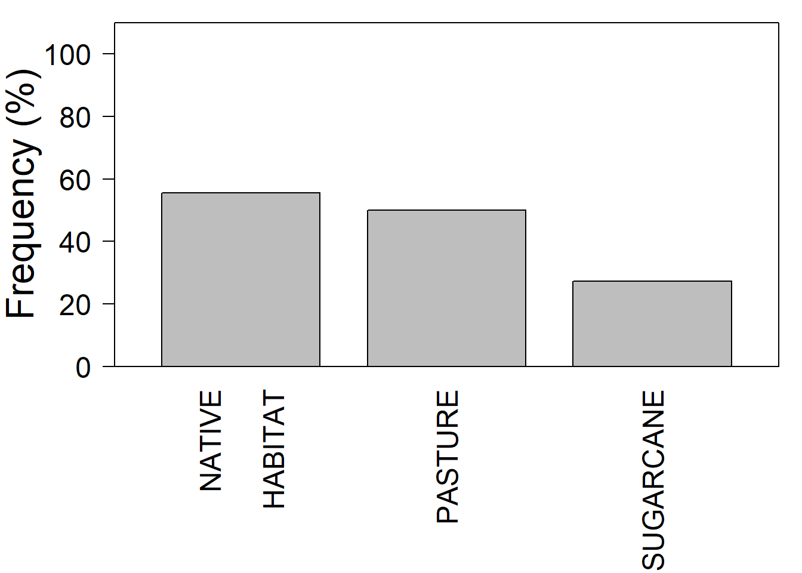
Scinax
Scinax_no_effect <- glmmTMB(Scinax~ 1 + (1|ID), data=occurrence, family="binomial")
Scinax_land <- glmmTMB(Scinax~ land_use + (1|ID), data=occurrence, family="binomial")
Scinax_pastagem_cana_model <- glmmTMB(Scinax~ land_use_pastagem_cana + (1|ID), data=occurrence, family="binomial")
Scinax_pastagem_cerrado_model <- glmmTMB(Scinax~ land_use_pastagem_cerrado + (1|ID), data=occurrence, family="binomial")
Scinax_canavial_cerrado_model <- glmmTMB(Scinax~ land_use_canavial_cerrado + (1|ID), data=occurrence, family="binomial")Model Selection
AICTAB_Scinax <- AICctab(Scinax_no_effect, Scinax_land, Scinax_pastagem_cana_model,Scinax_pastagem_cerrado_model,Scinax_canavial_cerrado_model,weights = T, base = T, logLik = T, sort = F,
mnames = c("No Effect", "Savanna # Pasture # Sugarcane", "Savanna # Pasture = Sugarcane", "Savanna = Pasture # Sugarcane", "Savanna = Sugarcane # Pasture" ))
AICTAB_Scinax logLik AICc dLogLik dAICc df weight
No Effect -17.3 39.2 0.0 0.0 2 0.344
Savanna # Pasture # Sugarcane -16.2 42.2 1.2 3.1 4 0.074
Savanna # Pasture = Sugarcane -16.5 40.1 0.8 1.0 3 0.212
Savanna = Pasture # Sugarcane -16.3 39.6 1.0 0.5 3 0.271
Savanna = Sugarcane # Pasture -17.3 41.6 0.0 2.5 3 0.099 simulationResiduals_Scinax <- simulateResiduals(fittedModel = Scinax_land, plot = F, seed = 3, n = 1000)
par(mar = c(6, 4, 3, 2))
plotQQunif(simulationResiduals_Scinax, testUniformity = F, testOutliers = F, testDispersion = F, cex.lab = 1.5, cex.main = 1.5) 
plotResiduals(simulationResiduals_Scinax, quantreg = F, cex.lab = 1.5, cex.main = 1.5)par(mar = c(9, 05, 1, 1))
barplot(freq$Scinax, xaxt = "n", yaxt = "n", ylab = expression(paste("Frequency (%)"))
, xlab = "", cex.lab = 2, cex.axis = 1.1, ylim = c(0,110), xlim = c(0,4.2), width = 1, space = c(0.3,0.3,0.3), xaxs = "i") #space are fractions of width
axis(2, las = 2, cex.axis = 1.5)
axis(1, at = c(0.3+0.3, (0.3*2)+1+0.5 , (0.3*3)+2+0.5), labels = c("NATIVE", "PASTURE", "SUGARCANE"), las = 2, tick = F, cex.axis = 1.5)
axis(1, at = c(0.7+0.3), labels = c("HABITAT"), las = 2, tick = F, cex.axis = 1.5)
#text(x = c(0.45,1.5,2.475), y = c(105,105,105), labels = c("a", "a", "a"), cex = 1.5)
box()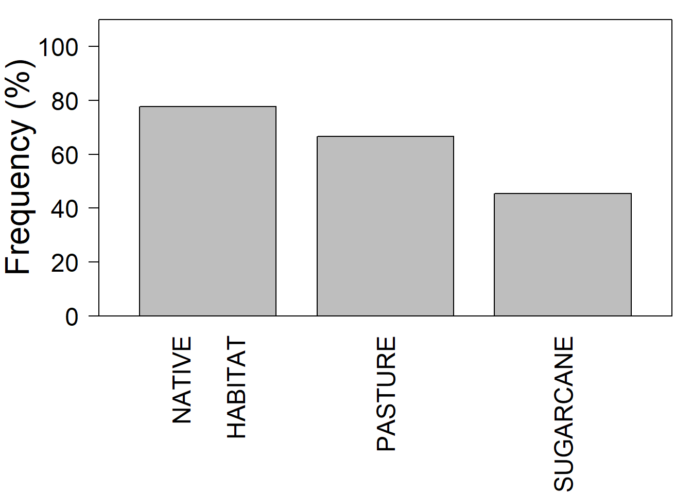
L. fuscus
L_fuscus_no_effect <- glmmTMB(L_fuscus~ 1 + (1|ID), data=occurrence, family="binomial")
L_fuscus_land <- glmmTMB(L_fuscus~ land_use + (1|ID), data=occurrence, family="binomial")
L_fuscus_pastagem_cana_model <- glmmTMB(L_fuscus~ land_use_pastagem_cana + (1|ID), data=occurrence, family="binomial")
L_fuscus_pastagem_cerrado_model <- glmmTMB(L_fuscus~ land_use_pastagem_cerrado + (1|ID), data=occurrence, family="binomial")
L_fuscus_canavial_cerrado_model <- glmmTMB(L_fuscus~ land_use_canavial_cerrado + (1|ID), data=occurrence, family="binomial")Model Selection
AICTAB_L_fuscus <- AICctab(L_fuscus_no_effect, L_fuscus_land, L_fuscus_pastagem_cana_model,L_fuscus_pastagem_cerrado_model,L_fuscus_canavial_cerrado_model,weights = T, base = T, logLik = T, sort = F,
mnames = c("No Effect", "Savanna # Pasture # Sugarcane", "Savanna # Pasture = Sugarcane", "Savanna = Pasture # Sugarcane", "Savanna = Sugarcane # Pasture" ))
AICTAB_L_fuscus logLik AICc dLogLik dAICc df weight
No Effect -7.7 19.9 1.9 0.0 2 0.6155
Savanna # Pasture # Sugarcane -9.5 29.0 0.0 9.1 4 0.0065
Savanna # Pasture = Sugarcane -7.6 22.4 1.9 2.5 3 0.1774
Savanna = Pasture # Sugarcane -9.5 26.2 0.0 6.3 3 0.0265
Savanna = Sugarcane # Pasture -7.7 22.4 1.9 2.5 3 0.1742simulationResiduals_L_fuscus <- simulateResiduals(fittedModel = L_fuscus_land, plot = F, seed = 3, n = 1000)
par(mar = c(6, 4, 3, 2))
plotQQunif(simulationResiduals_L_fuscus, testUniformity = F, testOutliers = F, testDispersion = F, cex.lab = 1.5, cex.main = 1.5) 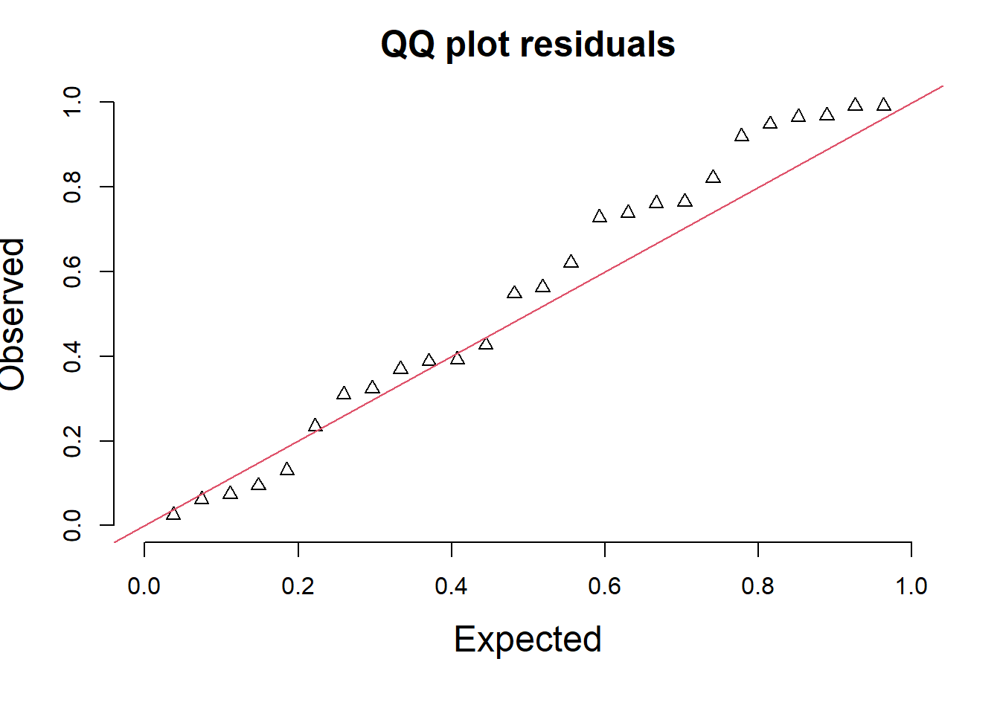
plotResiduals(simulationResiduals_L_fuscus, quantreg = F, cex.lab = 1.5, cex.main = 1.5)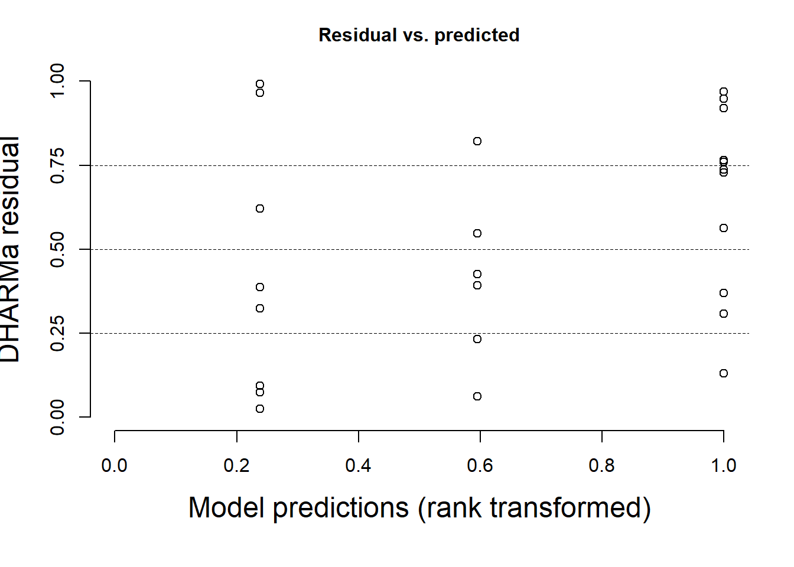
par(mar = c(9, 05, 1, 1))
barplot(freq$L_fuscus, xaxt = "n", yaxt = "n", ylab = expression(paste("Frequency (%)"))
, xlab = "", cex.lab = 2, cex.axis = 1.1, ylim = c(0,110), xlim = c(0,4.2), width = 1, space = c(0.3,0.3,0.3), xaxs = "i") #space are fractions of width
axis(2, las = 2, cex.axis = 1.5)
axis(1, at = c(0.3+0.3, (0.3*2)+1+0.5 , (0.3*3)+2+0.5), labels = c("NATIVE", "PASTURE", "SUGARCANE"), las = 2, tick = F, cex.axis = 1.5)
axis(1, at = c(0.7+0.3), labels = c("HABITAT"), las = 2, tick = F, cex.axis = 1.5)
#text(x = c(0.5+0.3,(0.3*2)+1+0.5,(0.3*3)+2+0.5), y = c(105,105,105), labels = c("a", "a", "b"), cex = 1.5)
box()
P. cuvieri
P_cuvieri_no_effect <- glmmTMB(P_cuvieri~ 1 + (1|ID), data=occurrence, family="binomial")
P_cuvieri_land <- glmmTMB(P_cuvieri~ land_use + (1|ID), data=occurrence, family="binomial")
P_cuvieri_pastagem_cana_model <- glmmTMB(P_cuvieri~ land_use_pastagem_cana + (1|ID), data=occurrence, family="binomial")
P_cuvieri_pastagem_cerrado_model <- glmmTMB(P_cuvieri~ land_use_pastagem_cerrado + (1|ID), data=occurrence, family="binomial")
P_cuvieri_canavial_cerrado_model <- glmmTMB(P_cuvieri~ land_use_canavial_cerrado + (1|ID), data=occurrence, family="binomial")Model Selection
AICTAB_P_cuvieri <- AICctab(P_cuvieri_no_effect, P_cuvieri_land, P_cuvieri_pastagem_cana_model,P_cuvieri_pastagem_cerrado_model,P_cuvieri_canavial_cerrado_model,weights = T, base = T, logLik = T, sort = F,
mnames = c("No Effect", "Savanna # Pasture # Sugarcane", "Savanna # Pasture = Sugarcane", "Savanna = Pasture # Sugarcane", "Savanna = Sugarcane # Pasture" ))
AICTAB_P_cuvieri logLik AICc dLogLik dAICc df weight
No Effect -15.1 34.8 0.0 0.8 2 0.254
Savanna # Pasture # Sugarcane -13.4 36.7 1.7 2.7 4 0.097
Savanna # Pasture = Sugarcane -14.2 35.4 1.0 1.4 3 0.185
Savanna = Pasture # Sugarcane -13.5 34.0 1.7 0.0 3 0.376
Savanna = Sugarcane # Pasture -14.9 36.9 0.2 2.9 3 0.088 simulationResiduals_P_cuvieri <- simulateResiduals(fittedModel = P_cuvieri_land, plot = F, seed = 3, n = 1000)
par(mar = c(6, 4, 3, 2))
plotQQunif(simulationResiduals_P_cuvieri, testUniformity = F, testOutliers = F, testDispersion = F, cex.lab = 1.5, cex.main = 1.5) plotResiduals(simulationResiduals_P_cuvieri, quantreg = F, cex.lab = 1.5, cex.main = 1.5)par(mar = c(12, 05, 1, 1))
barplot(freq$P_cuvieri, xaxt = "n", yaxt = "n", ylab = expression(paste("Frequency (%)"))
, xlab = "", cex.lab = 2, cex.axis = 1.1, ylim = c(0,110), xlim = c(0,4.2), width = 1, space = c(0.3,0.3,0.3), xaxs = "i") #space are fractions of width
axis(2, las = 2, cex.axis = 1.5)
axis(1, at = c(0.3+0.3, (0.3*2)+1+0.5 , (0.3*3)+2+0.5), labels = c("NATIVE", "PASTURE", "SUGARCANE"), las = 2, tick = F, cex.axis = 1.5)
axis(1, at = c(0.7+0.3), labels = c("HABITAT"), las = 2, tick = F, cex.axis = 1.5)
#text(x = c(0.45,1.5,2.475), y = c(105,105,105), labels = c("a", "a", "a"), cex = 1.5)
box()
P. nattereri
P_nattereri_no_effect <- glmmTMB(P_nattereri~ 1 + (1|ID), data=occurrence, family="binomial")
P_nattereri_land <- glmmTMB(P_nattereri~ land_use + (1|ID), data=occurrence, family="binomial")
P_nattereri_pastagem_cana_model <- glmmTMB(P_nattereri~ land_use_pastagem_cana + (1|ID), data=occurrence, family="binomial")
P_nattereri_pastagem_cerrado_model <- glmmTMB(P_nattereri~ land_use_pastagem_cerrado + (1|ID), data=occurrence, family="binomial")
P_nattereri_canavial_cerrado_model <- glmmTMB(P_nattereri~ land_use_canavial_cerrado + (1|ID), data=occurrence, family="binomial")Model Selection
AICTAB_P_nattereri <- AICctab(P_nattereri_no_effect, P_nattereri_land, P_nattereri_pastagem_cana_model,P_nattereri_pastagem_cerrado_model,P_nattereri_canavial_cerrado_model,weights = T, base = T, logLik = T, sort = F,
mnames = c("No Effect", "Savanna # Pasture # Sugarcane", "Savanna # Pasture = Sugarcane", "Savanna = Pasture # Sugarcane", "Savanna = Sugarcane # Pasture" ))
AICTAB_P_nattereri logLik AICc dLogLik dAICc df weight
No Effect -17.9 40.4 0.0 0.8 2 0.25
Savanna # Pasture # Sugarcane -16.1 42.2 1.8 2.5 4 0.10
Savanna # Pasture = Sugarcane -16.3 39.7 1.7 0.0 3 0.36
Savanna = Pasture # Sugarcane -16.8 40.6 1.2 0.9 3 0.22
Savanna = Sugarcane # Pasture -17.9 42.9 0.0 3.3 3 0.07 simulationResiduals_P_nattereri <- simulateResiduals(fittedModel = P_nattereri_land, plot = F, seed = 3, n = 1000)
par(mar = c(6, 4, 3, 2))
plotQQunif(simulationResiduals_P_nattereri, testUniformity = F, testOutliers = F, testDispersion = F, cex.lab = 1.5, cex.main = 1.5) plotResiduals(simulationResiduals_P_nattereri, quantreg = F, cex.lab = 1.5, cex.main = 1.5)
par(mar = c(12, 05, 1, 1))
par(mar = c(9, 05, 1, 1))
barplot(freq$P_nattereri, xaxt = "n", yaxt = "n", ylab = expression(paste("Frequency (%)"))
, xlab = "", cex.lab = 2, cex.axis = 1.1, ylim = c(0,110), xlim = c(0,4.2), width = 1, space = c(0.3,0.3,0.3), xaxs = "i") #space are fractions of width
axis(2, las = 2, cex.axis = 1.5)
axis(1, at = c(0.3+0.3, (0.3*2)+1+0.5 , (0.3*3)+2+0.5), labels = c("NATIVE", "PASTURE", "SUGARCANE"), las = 2, tick = F, cex.axis = 1.5)
axis(1, at = c(0.7+0.3), labels = c("HABITAT"), las = 2, tick = F, cex.axis = 1.5)
#text(x = c(0.45,1.5,2.475), y = c(105,105,105), labels = c("a", "a", "a"), cex = 1.5)
box()D. minutus
D_minutus_no_effect <- glmmTMB(D_minutus~ 1 + (1|ID), data=occurrence, family="binomial")
D_minutus_land <- glmmTMB(D_minutus~ land_use + (1|ID), data=occurrence, family="binomial")
D_minutus_pastagem_cana_model <- glmmTMB(D_minutus~ land_use_pastagem_cana + (1|ID), data=occurrence, family="binomial")
D_minutus_pastagem_cerrado_model <- glmmTMB(D_minutus~ land_use_pastagem_cerrado + (1|ID), data=occurrence, family="binomial")
D_minutus_canavial_cerrado_model <- glmmTMB(D_minutus~ land_use_canavial_cerrado + (1|ID), data=occurrence, family="binomial")Model Selection
AICTAB_D_minutus <- AICctab(D_minutus_no_effect, D_minutus_land, D_minutus_pastagem_cana_model,D_minutus_pastagem_cerrado_model,D_minutus_canavial_cerrado_model,weights = T, base = T, logLik = T, sort = F,
mnames = c("No Effect", "Savanna # Pasture # Sugarcane", "Savanna # Pasture = Sugarcane", "Savanna = Pasture # Sugarcane", "Savanna = Sugarcane # Pasture" ))
AICTAB_D_minutus logLik AICc dLogLik dAICc df weight
No Effect -17.9 40.4 0.0 0.0 2 0.46
Savanna # Pasture # Sugarcane -17.5 44.8 0.5 4.4 4 0.05
Savanna # Pasture = Sugarcane -17.5 42.1 0.5 1.6 3 0.20
Savanna = Pasture # Sugarcane -17.7 42.4 0.3 2.0 3 0.17
Savanna = Sugarcane # Pasture -17.9 42.9 0.0 2.5 3 0.13 simulationResiduals_D_minutus <- simulateResiduals(fittedModel = D_minutus_land, plot = F, seed = 3, n = 1000)
par(mar = c(6, 4, 3, 2))
plotQQunif(simulationResiduals_D_minutus, testUniformity = F, testOutliers = F, testDispersion = F, cex.lab = 1.5, cex.main = 1.5) plotResiduals(simulationResiduals_D_minutus, quantreg = F, cex.lab = 1.5, cex.main = 1.5)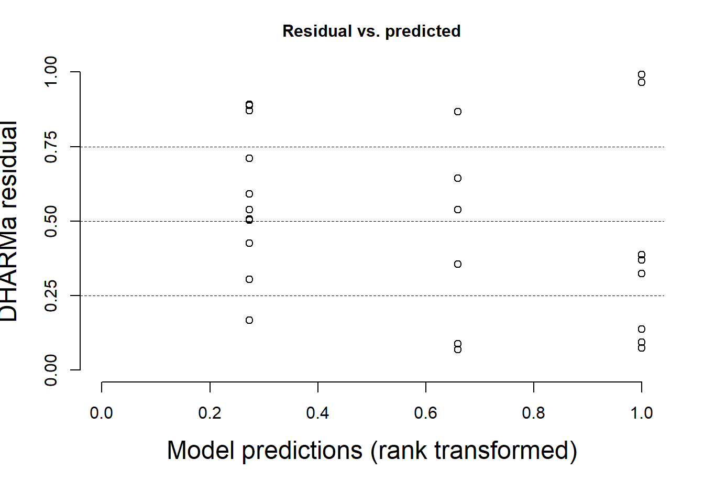
par(mar = c(9, 05, 1, 1))
barplot(freq$D_minutus, xaxt = "n", yaxt = "n", ylab = expression(paste("Frequency (%)"))
, xlab = "", cex.lab = 2, cex.axis = 1.1, ylim = c(0,110), xlim = c(0,4.2), width = 1, space = c(0.3,0.3,0.3), xaxs = "i") #space are fractions of width
axis(2, las = 2, cex.axis = 1.5)
axis(1, at = c(0.3+0.3, (0.3*2)+1+0.5 , (0.3*3)+2+0.5), labels = c("NATIVE", "PASTURE", "SUGARCANE"), las = 2, tick = F, cex.axis = 1.5)
axis(1, at = c(0.7+0.3), labels = c("HABITAT"), las = 2, tick = F, cex.axis = 1.5)
#text(x = c(0.5+0.3,(0.3*2)+1+0.5,(0.3*3)+2+0.5), y = c(105,105,105), labels = c("a", "a", "b"), cex = 1.5)
box()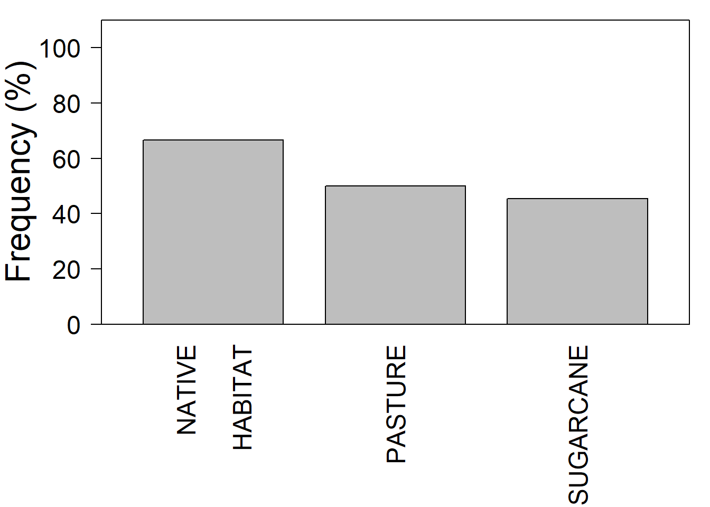